生成时间：2026-08-14T11:09:27+08:00
今日保留论文数：6
内容构成：今日新文 6 篇；补充推荐 0 篇；经典旧文精读 0 篇
高能天体物理重点
1. An Evolving Leptonic Jet Model for Delayed Radio Flares in Neutrino Blazars
- 来源：arXiv / astro-ph.HE
- 链接：https://arxiv.org/abs/2608.12696v1
- 作者：Alina Kochocki, Xavier Rodrigues, Nathan Whitehorn
- 评分：novelty 8/10，importance 8/10，relevance 10/10，final 9.70/10
- 推荐理由：面向TXS 0506+056、PKS 1424+240等候选中微子耀变体，建立延展喷流时域多频模型解释IceCube事件后的延迟射电耀发；直接关联高能中微子、多信使和AGN喷流，优先级高。
中文题目：用于解释中微子耀变体延迟射电耀发的演化轻子喷流模型
做了什么：这篇论文试图解释一个单区高能辐射模型很难覆盖的现象：TXS 0506+056 在 2017 年 IceCube 中微子事件和伽马射线耀发之后，射电波段出现了持续更久、峰值晚到约数年的增强。作者建立了一个沿喷流传播的时空演化轻子模型，把电子注入、冷却、同步辐射、自吸收和喷流到秒差距尺度的动力学演化耦合起来，并拟合多波段特别是多频射电光变曲线。核心结论是，后续射电耀发可由高能区之后的喷流扰动传播到可观测射电核心边缘、并与一群较老且已冷却的电子相遇来解释，从而把初始高能活动和拖尾射电增强放进同一个因果链条中。
为什么重要：中微子耀变体研究的难点不只是“有没有空间和时间符合”，而是能否把中微子、伽马射线和射电延迟结构放在同一个物理喷流图像里。TXS 0506+056 是目前最重要的候选源之一，但传统单区模型通常只描述紧凑高能区，难以解释几年尺度的射电响应。这篇论文的重要性在于把问题从“瞬时辐射区拟合”推进到“扰动沿真实尺度喷流传播”的时间域建模。
理论 / 观测 / 仪器方法价值：对理论而言，它提供了连接亚秒差距高能区和秒差距射电核心的可计算框架，有助于判断中微子产生区与射电发射区是否必然共址。对观测而言，它强调多频射电光变曲线不是事后附属信息，而是约束喷流几何、磁场、电子冷却史和传播时间的关键数据。对方法而言，它把数值粒子相互作用框架与动态喷流演化结合，适合扩展到其他带有延迟射电耀发的中微子候选耀变体。
为什么应该关注：如果你关心 IceCube 中微子和耀变体关联，这篇文章值得看，因为它提醒我们：一次中微子告警附近的高能耀发并不一定给出完整故事，后面几年射电核心的演化可能保存了喷流扰动传播的“时间戳”。如果这类模型能在更多源上成立，未来用射电监测筛选中微子候选源、反推粒子加速位置和喷流物理条件会更有针对性。
展开详细解读：文章讲解、背景、理论、重点章节、图表与相关工作
文章详细讲解
科学问题：TXS 0506+056 的 2017 年事件通常被讨论为中微子 IceCube-170922A、伽马射线增强和多波段耀发的代表性关联。但观测上还有一个容易被单区模型遗漏的事实：射电增强不是和高能峰完全同步，而是在更长时间尺度上发展，在若干频率上表现出延迟峰值。若只用一个紧凑辐射区解释中微子和伽马射线，射电波段往往会受到同步自吸收限制，不能自然给出秒差距尺度射电核心中几年后的明亮响应。因此本文问的是：初始高能活动和后续射电耀发之间是否可以有一个因果相连、空间上延展的喷流演化解释。
作者怎么做：作者构造了一个演化轻子喷流模型，而不是把整个源压缩成单个静态辐射球。模型中，电子群体随喷流向外传播，在不同位置经历辐射冷却、绝热演化和局地辐射输出；磁场、尺寸、粒子密度和多普勒增强随距离或时间变化。作者将数值粒子相互作用框架与喷流的时空动力学描述耦合，并用多波段数据，尤其是多频射电光变曲线，对模型进行拟合。这样做的关键不是仅匹配一个频率上的峰值，而是同时约束不同射电频段的峰值时间、峰值幅度和光变形状。
关键结果：模型给出的物理图像是，2017 年高能区的扰动沿喷流向外传播，到达可观测射电核心边缘附近时，遇到一群较老、已经冷却的电子。这种相遇或再激活使射电辐射在较大尺度上增强，并自然产生相对于伽马射线和中微子事件的延迟。这里的重点并不是声称射电耀发本身产生中微子，而是说明中微子相关的早期高能活动与后续射电行为可由同一喷流事件的不同阶段解释。模型因此把高能紧凑区和秒差距尺度射电区连接起来。
局限和下一步：该模型是轻子辐射主导的射电解释，不能单独证明强子加速或中微子产生机制；中微子部分仍需额外的强子成分或混合模型来闭合。模型参数也可能存在退化，例如磁场强度、电子密度、喷流多普勒因子、传播速度和注入历史之间可相互补偿。下一步最关键的是把同样框架用于更多候选源，例如 PKS 1424+240 或其他有 IceCube 告警和延迟射电耀发的耀变体，并结合 VLBI 核区结构、偏振、谱指数演化和更长时间基线射电监测来打破退化。
关键结果是怎么做出来的
本文最重要的证据链从样本选择开始：作者聚焦 TXS 0506+056 这一具名中微子候选耀变体，因为它同时具有 2017 年 IceCube-170922A 附近的高能活动、多波段跟进观测，以及后续多年射电波段增强。样本不是大统计巡天样本，而是一个高价值个例的时间域物理建模；因此评价论文时不应按“发现多少个源”来读，而应看模型是否能同时解释多频光变的相对时序、谱演化和幅度。
数据层面，作者使用多波段资料并特别加入多频射电光变曲线。射电数据的作用是区分紧凑同步辐射区与延展喷流区：若低频和高频射电峰值存在系统性延迟，且光变宽度随频率变化，那么单一瞬时辐射区通常难以解释。本文的拟合重点应理解为对时间序列的联合约束：伽马射线或光学数据给出初始活动时间，高频射电对较内侧或较早透明区敏感，低频射电对更外侧、更晚透明区敏感。
统计上，摘要没有给出具体事件数、似然显著性或置信区间数值，因此不能把本文读成一个“关联显著性提升”的 IceCube 统计分析。它更像是条件在已知事件和已知源上的物理可行性检验：给定高能耀发和延迟射电耀发，是否存在一组合理的喷流演化参数能够同时拟合多频数据。读者应重点检查论文中的最佳拟合光变图、参数表、残差图和不同物理场景的模型比较，而不是只看最终文字结论。
支撑结论的图表通常应包括：多波段光变曲线叠加模型、不同射电频率的峰值延迟随频率变化、喷流中电子能谱和辐射率随距离或时间演化、以及模型参数的后验或置信区间。若论文给出没有旧电子群体或没有延展喷流传播的对照模型，读者应优先检查这些模型在射电峰值时间和低频光变宽度上的残差是否系统偏离。
主要系统误差来自四类：第一，多普勒因子和视角会直接改变观测时间尺度；第二，射电核心位置具有频率依赖，若未正确处理，会误读延迟；第三，外部长期射电基线和其他喷流成分可能污染耀发幅度；第四，电子注入历史和磁场剖面可产生相似光变。稳健性检验应包括改变喷流磁场剖面、粒子注入宽度、旧电子空间分布、射电基线处理和观测误差权重，检查“需要秒差距尺度旧电子群体”这一结论是否保持。
展开背景、理论、公式、模型、章节和图表导读
背景知识
研究对象 TXS 0506+056 是一类喷流几乎指向视线方向的活动星系核，即耀变体。其观测辐射受到相对论多普勒增强影响，短时标高能耀发和强烈射电变率都很常见。它之所以特别，是因为 2017 年 IceCube-170922A 中微子事件与该源方向和高能活动相近，随后引发了多信使天文学中关于耀变体是否是高能中微子源的重要讨论。
历史问题在于，耀变体的电磁谱能量分布可以由轻子模型较好解释，也可以在某些情形下加入强子成分产生中微子。经典单区模型把辐射区近似为一个运动的等离子体团，用同步辐射解释低能峰，用同步自康普顿或外康普顿解释高能峰。这类模型对瞬时谱能量分布很有效，但对多年尺度、频率依赖的射电光变通常不够自然，因为射电辐射来自更大、更外侧、更不透明度分层的喷流区域。
观测背景方面，射电耀发在耀变体中常表现为从高频到低频的延迟传播。这可由同步自吸收、冲击波沿喷流传播、频率依赖核心位置和电子冷却共同造成。对于 TXS 0506+056，问题变得更尖锐：如果高能耀发和中微子事件发生在紧凑区，后续几年射电增强是否只是无关的长期变率，还是同一扰动向外传播后的表现？本文正是尝试回答这个问题。
为什么现在值得重新看：一方面，IceCube 和后续中微子告警积累使耀变体关联问题从个例轶事走向群体检验；另一方面，长期射电监测和 VLBI 数据提供了时间和空间信息，能约束喷流扰动传播。仅比较中微子到达时间和伽马射线峰值容易忽略射电延迟，而射电延迟可能正是定位喷流中粒子加速区和能量输运过程的关键。
该领域常见误区之一是把“射电延迟”简单理解为“射电区晚些才辐射”，但实际上延迟同时包含几何传播时间、相对论光行时效应、频率依赖光深、电子冷却和不同喷流成分叠加。另一个误区是认为轻子模型解释射电就否定中微子起源；事实上，本文的轻子喷流模型主要解释电磁延迟结构，中微子产生仍可发生在早期紧凑区的强子过程或混合区中。
基础理论 / 方法脉络
基础物理图像是相对论喷流中一群非热电子在磁场中运动并产生同步辐射。电子能量越高，辐射特征频率越高，冷却越快；低频射电辐射常来自较低能电子和较大尺度区域。由于喷流朝向观察者，辐射强度和时间尺度都被多普勒因子改变，源本征时间与观测时间不能直接等同。
在紧凑高能区，电子可以产生光学、X 射线和伽马射线辐射，但该区域对射电光子通常并不透明。同步自吸收会压低低频射电，使真正可观测的射电核心出现在更外侧、光深约为 \(\tau_\nu \sim 1\) 的位置。因此，一个在内区发生的扰动即使立刻改变高能辐射，也可能需要传播到更外侧后才在射电波段显著出现。
本文采用的关键假设是喷流不是静态单区，而是具有空间和时间演化。电子分布 \(N_e(\gamma,t,z)\) 随洛伦兹因子 \(\gamma\)、时间 \(t\) 和喷流距离 \(z\) 改变；磁场 \(B(z)\)、区域半径 \(R(z)\)、粒子注入 \(Q(\gamma,t,z)\) 和冷却项共同决定辐射输出。模型中特别重要的是较老、已冷却电子群体：它们可在扰动到达射电核心边缘时参与增强低频同步辐射。
观测方法上，多频射电光变曲线提供了比单个谱能量分布更强的约束。若模型只匹配一个时刻的谱，很多参数组合都能成功；但要同时匹配 \(\nu_1,\nu_2,\nu_3\) 等多个频率的峰值时间、上升斜率、衰减斜率和幅度，参数空间会明显收缩。高频射电通常更接近内侧透明区，低频射电则更晚、更外侧，对喷流分层结构更敏感。
常见退化包括 \(B\) 与电子归一化之间的退化、多普勒因子 \(\delta_D\) 与本征时间尺度之间的退化、喷流速度与核心位置之间的退化，以及新注入电子和旧电子再增亮之间的退化。系统误差则可能来自非同时多波段数据、射电基线扣除、长期活动周期、VLBI 核区混合、绝对通量标定和频率覆盖不足。
公式与推导
第一步从相对论喷流的观测时间压缩开始。若扰动在喷流系中经历时间间隔 \(\Delta t'\)，观测者看到的时间间隔近似为
其中 \(z_{\rm cos}\) 是宇宙学红移，\(\delta_D=[\Gamma(1-\beta\cos\theta_{\rm v})]^{-1}\) 是多普勒因子，\(\Gamma\) 是体洛伦兹因子，\(\beta c\) 是喷流速度，\(\theta_{\rm v}\) 是视线角。这个式子说明几年观测延迟不一定意味着喷流系中也经历几年。
第二步描述扰动沿喷流传播造成的空间到时间映射。若射电透明区相对于高能区的距离为 \(\Delta z\)，则观测延迟可写成
这个关系把后续射电峰值时间同秒差距尺度核心位置联系起来，是判断高能活动和射电耀发能否因果相连的基本诊断。
第三步写电子能量演化。对单个电子，常用冷却方程为
其中 \(\gamma\) 是电子洛伦兹因子，\(B\) 是磁场，\(U_{\rm rad}\) 是辐射场能量密度，前三项分别表示同步冷却、逆康普顿冷却和绝热冷却。本文的“旧电子群体”物理上就是在该方程作用下从高能端向低能端演化后的粒子分布。
第四步从连续性方程得到粒子分布演化：
这里 \(N_e\) 是电子数分布，\(\dot{\gamma}=d\gamma/dt'\)，\(v_z\) 是沿喷流传播速度，\(Q\) 是注入项，\(t_{\rm esc}\) 是逃逸时间。这个方程是把单区模型推广到时空演化喷流的核心阶梯。
第五步连接电子能量和同步辐射频率。单个电子的特征同步频率可近似为
其中 \(e\) 是电子电荷，\(m_e\) 是电子质量。该式说明不同射电频率选择不同 \(\gamma\)、\(B\) 和位置，因此多频光变能探测喷流分层。
第六步写同步辐射发射率的积分形式：
其中 \(j_{\}\)
u'}) 是喷流系发射率，(P_{\
u'}) 是单电子同步功率谱。它把数值粒子分布转化为每个位置和时间的辐射输出。
第七步考虑同步自吸收。辐射转移方程给出
其中 \(I_{\}\)
u'}) 是比强度，(S_{\
u'}=j_{\
u'}/\alpha_{\
u'}) 是源函数，(\alpha_{\
u'}) 是吸收系数，\(R\) 是发射区尺度。当 (\tau_{\
u'}\(\gg\) 1) 时低频被压制，当 (\tau_{\
u'}\(\sim\) 1) 时射电核心变得可见。
第八步把局地辐射转为观测通量。对运动均匀小区，可用近似
其中 \(d_L\) 是光度距离，\(dV'\) 是喷流系体积元，且 (\
u'=(1+z_{\rm cos})\nu_{\rm obs}/\(\delta_D\))。这个式子对应论文实际要拟合的多频光变。
第九步给出光变拟合的似然诊断。若第 \(i\) 个观测通量为 \(F_i\)，误差为 \(\sigma_i\)，模型为 \(M_i(\boldsymbol{\theta})\)，高斯近似下
参数 \(\boldsymbol{\theta}\) 包含磁场剖面、电子注入、传播速度、多普勒因子和旧电子分布等。该式让读者检查最佳拟合是否真正由多频时间结构驱动，而非只由少数高信噪点决定。
模型拟合 / 应用方法
这类模型拟合的对象不是单一谱能量分布，而是多波段时间序列。需要拟合的量包括各频率通量 (F_\
u(t))、峰值时间、峰值宽度、不同频率之间的延迟、可能的基线通量，以及高能波段的初始活动窗口。模型参数通常包括电子注入谱指数、最小和最大电子能量、注入归一化、磁场强度及其沿喷流衰减、喷流半径增长、多普勒因子、传播速度和旧电子群体的空间分布。
似然可采用多频光变点的联合高斯似然，也可在观测误差非高斯或采样不均匀时加入额外的系统散布项。对于射电监测数据，绝对通量标定误差、不同望远镜交叉标定和长期基线不确定性都应进入误差预算。若模型给出后验分布，读者应关注参数相关图，尤其是 \(B\)、\(N_e\)、\(\delta_D\) 和 \(\Delta z\) 之间的协方差。
残差诊断非常关键。一个模型即使能匹配峰值幅度，也可能在峰值时间、上升沿或低频衰减尾部系统偏离。若高频射电残差先变正、低频残差后变正，说明传播或自吸收时间尺度可能设置不当。若所有频率残差同相，则可能是基线或长期背景成分处理有问题，而不是喷流传播物理失败。
参数退化方面，增强 \(B\) 可以提高同步辐射效率，但也会加快冷却；提高电子数密度可以增加通量，但也可能提高自吸收；增大 \(\delta_D\) 会同时提高通量并压缩时间尺度；改变射电核心位置可以模拟传播延迟。因此，多频覆盖和独立 VLBI 约束非常重要。若只有单频射电曲线，旧电子再增亮和新电子持续注入很容易混淆。
模型可能失败的场景包括：射电耀发来自另一个独立喷流成分而非 2017 年扰动；高能区和射电区之间的喷流动力学发生强烈弯折或再准直，简单一维传播失效；旧电子群体的存在只是参数化补丁，缺乏 VLBI 或偏振证据；或者强子辐射区对低能辐射反馈显著，纯轻子射电模型不能自洽。实际应用中，最好把该框架与 VLBI 组件喷出时间、核心位移和偏振角旋转联合拟合。
重点章节 / 结果段落怎么读
数据和样本部分应首先读清楚：作者使用了哪些多波段数据、射电频率覆盖到哪里、时间基线是否覆盖 2017 年前后的静态基线和几年后的峰值。特别要注意不同射电频段是否来自同一监测项目，误差条和采样间隔是否足以支持峰值延迟判断。
模型部分是全文核心。读者应重点看电子分布如何初始化，扰动如何沿喷流传播，磁场和区域尺寸如何随距离变化，旧电子群体是预设分布还是由早期演化自然产生。还要看辐射计算是否包括同步自吸收，因为这直接决定射电峰值延迟是否可信。
拟合结果部分应围绕多频光变图阅读。不要只看总的拟合优度，而要逐频检查模型是否同时匹配高频射电较早响应和低频射电较晚响应。若论文给出参数表，应查看最佳拟合参数是否落在耀变体喷流的合理范围内，例如秒差距尺度磁场、多普勒因子和电子能量密度。
讨论部分应关注作者如何解释高能活动与射电拖尾之间的因果关系。关键问题是：模型是否要求扰动传播时间与观测延迟一致？旧电子群体是否位于可观测射电核心边缘？该解释是否唯一，还是只是优于简单单区模型的一种可行方案？
附录或稳健性检验若存在，应优先阅读。那里通常会说明改变参数、删去部分数据点、调整射电基线或替换电子注入形式后，结论是否仍成立。对于单源个例建模，稳健性检验往往比最佳拟合曲线本身更能决定论文可信度。
建议重点查看的图表
-
多波段光变总览图：应检查 IceCube-170922A 时间、伽马射线峰值、光学或 X 射线活动和多频射电峰值之间的相对时间位置。
-
多频射电光变拟合图：应看不同频率的峰值是否按频率有序延迟，模型线是否同时通过上升沿、峰值和衰减尾部。
-
谱能量分布或若干时刻的频谱图：应检查模型是否在解释射电拖尾的同时不破坏高能波段和光学波段约束。
-
喷流空间演化图：应看电子密度、磁场、光深或辐射率随喷流距离的变化，特别是旧电子群体与射电核心边缘的位置关系。
-
参数后验或置信区间图：应检查 \(B\)、\(\delta_D\)、电子注入归一化、传播距离和旧电子分布之间是否存在强退化。
-
残差或模型比较图：应看有无系统性频率依赖残差，以及延展喷流模型相对单区或无旧电子模型的改进是否集中在射电延迟部分。
-
稳健性表：应检查不同数据选择、基线扣除、误差膨胀或替代参数化下，结论是否仍需要秒差距尺度电子群体。
关键图表逐图导读
图 1：通常应是 TXS 0506+056 的时间域多波段总览。横轴应为观测时间或相对于 2017 年中微子事件的时间，纵轴分面给出伽马射线、光学、X 射线和多个射电频率通量。读图重点是中微子标记线是否接近高能初始峰，以及射电峰值是否显著滞后。陷阱是不同波段纵轴单位和缩放不同，不能凭视觉高度比较能量输出。
图 2：多频射电光变与模型拟合应是核心图。横轴为时间，纵轴为射电通量密度，不同颜色代表不同频率，实线或阴影代表模型和不确定性。若模型可信，高频曲线应较早响应，低频曲线应更晚且可能更宽。读图陷阱是采样稀疏时峰值时间可能被插值误导，因此要看误差条和观测点覆盖。
图 3：喷流中物理量随距离或时间演化的图很关键。横轴可能是距喷流基部的距离或传播时间，纵轴可能是磁场、电子能量密度、同步光深或辐射率。主要结论应是射电增强发生在可观测核心边缘附近，并与旧电子群体位置重合。陷阱是投影距离、本征距离和光行时距离不同，坐标定义必须读清。
图 4：电子能谱演化图应展示 \(N_e(\gamma)\) 在不同时间或位置的形状。横轴为 \(\gamma\)，纵轴为电子数密度或能量分布，不同曲线代表传播阶段。读者要看高能电子如何冷却、低能电子是否足以支撑射电辐射，以及是否需要人为加入异常大的旧电子库。陷阱是能谱归一化和体积未必直观对应总能量。
图 5：模型比较或残差图应把最佳延展模型与单区模型、无旧电子模型或不同注入模型对比。横轴通常为时间，纵轴为标准化残差或通量差。关键是改进是否主要出现在射电延迟和低频尾部，而不是靠增加参数随意贴合噪声。若没有信息准则或后验预测检验，读者应谨慎看待“更好拟合”的强度。
图 6：参数置信区间或角图若存在，应重点看 \(\delta_D\)、\(B\)、\(\Delta z\)、电子归一化和旧电子能量密度的相关性。若后验呈长条形，说明结论更多依赖组合量而非单个参数。读图陷阱是边缘一维误差看似很小，但二维相关可能允许截然不同的物理解释。
论文原图 / 可嵌入图片
Fig03
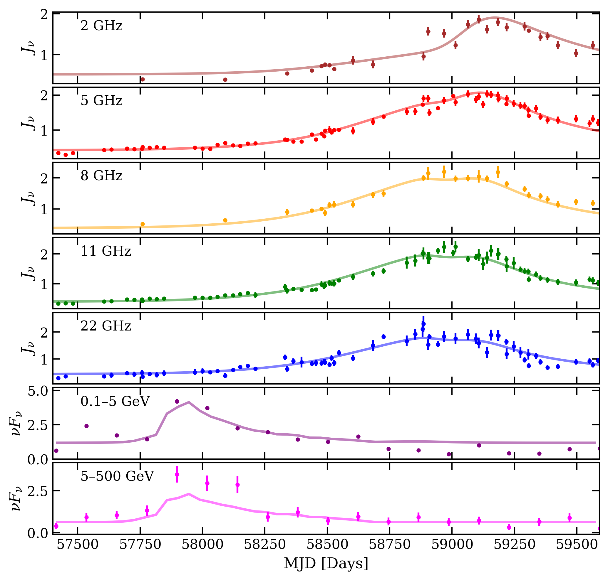
图注：Light curves of the highest-likelihood jet model explored in Monte Carlo sampling. We provide a comparison of our Fermi-LAT light curves in two energy bands and public RATAN-600 data across several frequencies with our highest-likelihood model result. We find good agreement for both the initial gamma-ray flare and later radio activity. Importantly, the frequency-dependent evolution of the radio flare is well described with our multiple zone parameterization.
对应解读：对应“建议重点查看的图表”第2项多频射电光变拟合图，以及“关键图表逐图导读”图2和模型拟合段落。
入选理由：这是全文最核心的时间域拟合图，直接把 Fermi-LAT 两个能段与 RATAN-600 多频射电数据同最高似然喷流模型对比，可检验模型是否同时解释初始伽马射线耀发和几年后射电活动，尤其是不同射电频率的延迟、峰值形状和多区参数化是否合理。
来源与置信度：\(arxiv_source\)；high；\(arxiv_source\) / main.tex:figure[3]
Fig01
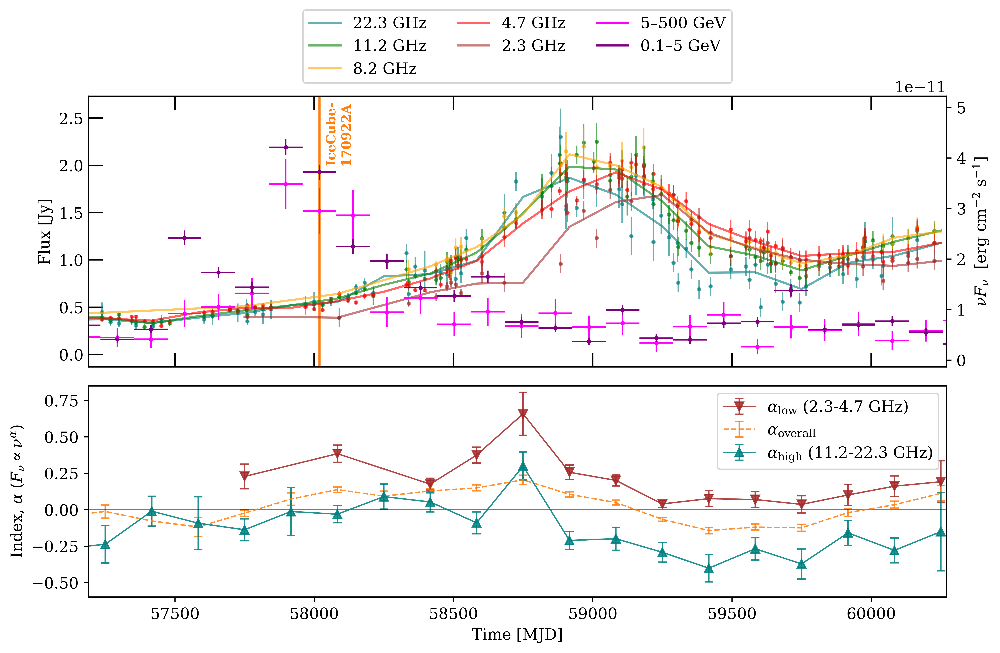
图注：Multi-frequency light curves from TXS~0506+056. \(\textit{Upper plot:}\) in purple and magenta, we show the Fermi light curves analyzed in this work in two energy bands. The uncertainties represent symmetrized 68$\%$ confidence intervals. The orange vertical line shows the time of the 2017 IceCube-170822A alert event. In other colors we show time-domain RATAN-600 data at several frequencies \(\citep{Sotnikova_2022}.\) For visual reference, we plot for each frequency band a coarsely binned light curve (cf. main text). From visual inspection, we can already see some frequency-dependent variation in the flare shape, with lower frequencies generally peaking at later times. \(\textit{Lower plot:}\) best-fit spectral index of the radio data, using the same binning scheme, calculated between the two lowest frequencies (brown), the two highest frequencies (teal), and the overall index obtained by fitting a single power law across all frequencies (orange). At the lowest frequencies, the index becomes positive-valued during the flare's rising period, which our model explains as the sum of contributions from regions with different levels of self-absorption in the parsec-scale jet.
对应解读：对应“建议重点查看的图表”第1项多波段光变总览图，以及“关键图表逐图导读”图1。
入选理由：该图给出 TXS 0506+056 的多频率光变总览，包含 IceCube 事件竖线、Fermi 伽马射线光变和多频 RATAN-600 射电数据，并在下方面板展示射电谱指数演化；它最适合说明中微子/高能活动与后续射电峰值之间的时间错位和频率依赖延迟。
来源与置信度：\(arxiv_source\)；high；\(arxiv_source\) / main.tex:figure[1]
Fig04
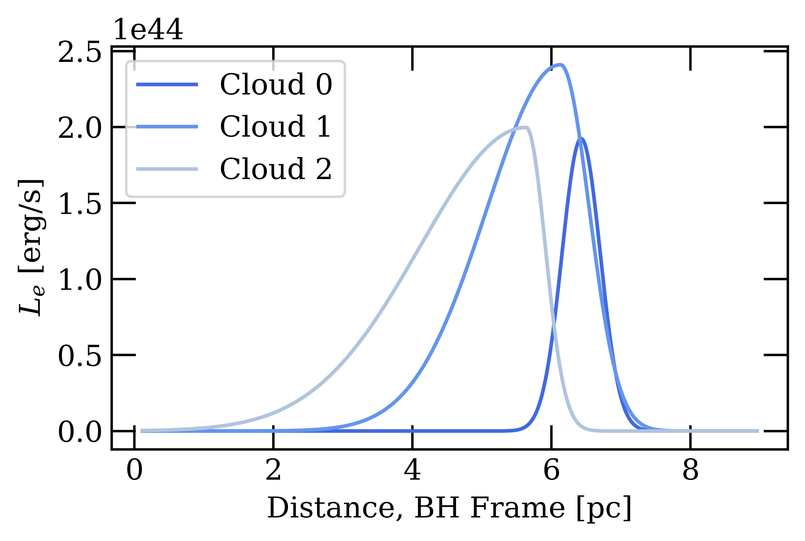
图注：Best-fit luminosity profiles of the electron clouds driving the radio flare, as a function of radial distance $x_\mathrm{BH}$. These profiles reflect the free parameters $L_{0, \textrm{cloud}\,0}, L_{0, \textrm{cloud}\,1}, L_{0, \textrm{cloud}\,2}$, as well as $\epsilon, \rho, \xi_{0}$ and $\xi_{1}$ (cf. Table~\ref{tab:jet}).
对应解读：对应“建议重点查看的图表”第4项喷流空间演化图，以及“关键图表逐图导读”图3中关于射电增强位置和电子云分布的讨论。
入选理由：该图展示驱动射电耀发的电子云 luminosity profiles 随距黑洞径向距离的变化，是判断模型中秒差距尺度电子群体空间分布的关键证据；相比纯示意图，它提供了拟合得到的空间结构参数化，更能支撑“传播扰动遇到高密度电子云并产生延迟射电耀发”的物理解释。
来源与置信度：\(arxiv_source\)；high；\(arxiv_source\) / main.tex:figure[4]
Fig07
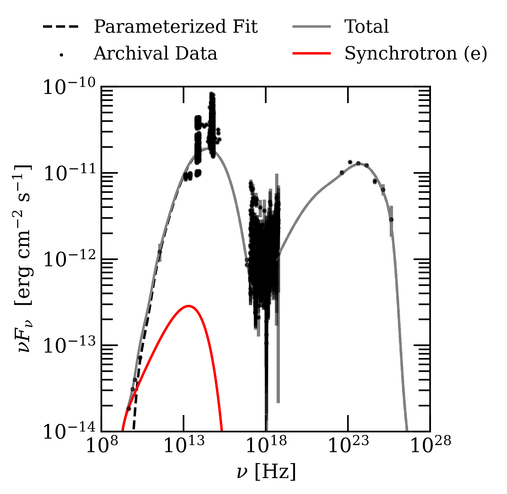
图注：Steady-state spectral model underlying our analysis of the evolving emission from TXS 0506+056. The gray curve shows the steady-state spectrum from the extended jet obtained in a previous work \(\citep{Rodrigues:2025cpm},\) fitted to archival source data, shown as black data points. Since the model undershoots the radio emission, we additionally considered synchrotron emission from a second population of steady-state electrons, shown in red. The sum of the two, shown as a solid gray curve, corresponds to the baseline steady-state spectrum used in this work.
对应解读：对应“建议重点查看的图表”第3项谱能量分布或频谱图，以及详细解读中关于稳态扩展喷流和额外电子群体的基线约束。
入选理由：该图给出分析所依赖的稳态谱模型，显示已有扩展喷流模型低估射电辐射，因此需要加入第二个稳态电子群体来建立本工作的基线谱；它有助于检查模型在解释射电拖尾时是否仍与归档多波段 SED 约束相容。
来源与置信度：\(arxiv_source\)；high；\(arxiv_source\) / main.tex:figure[7]
Fig05
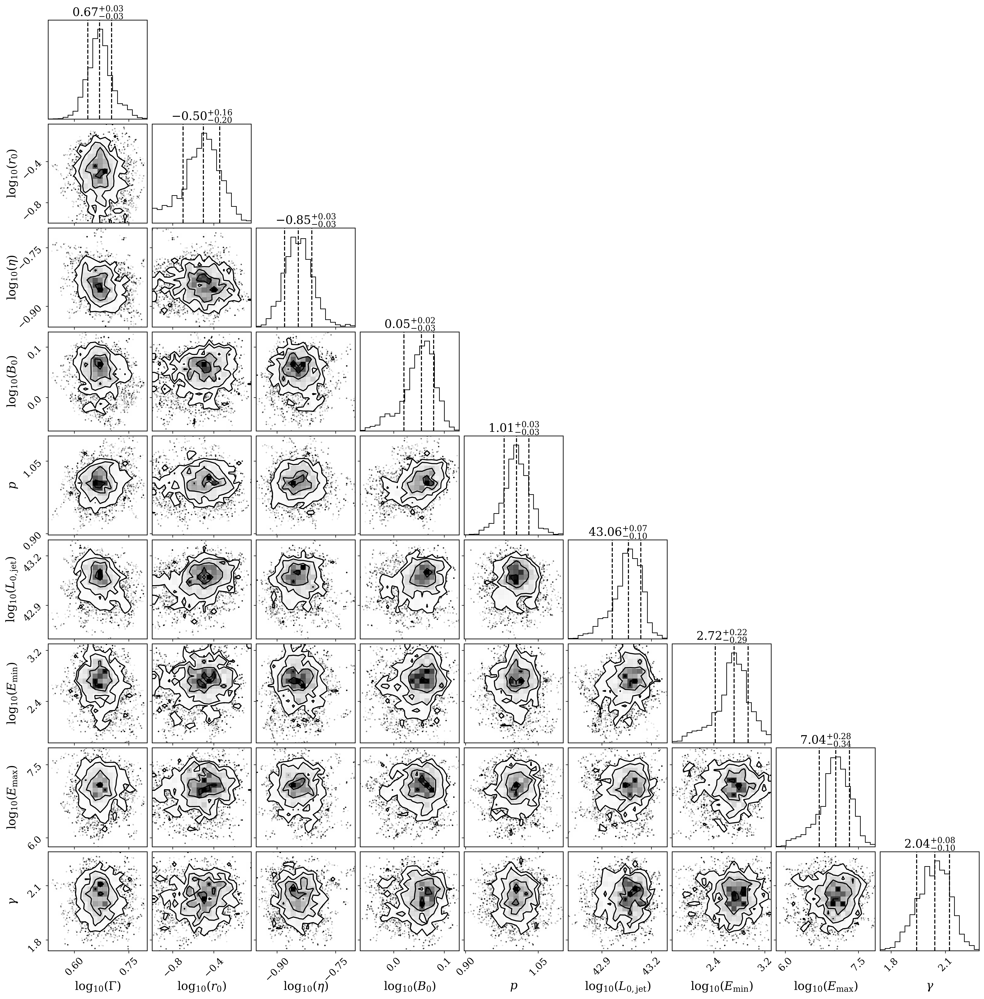
图注：Parameter values relevant to the jet stream explored through MCMC sampling. As our model has a high computational cost, we evaluate approximately $\sim$40,000 samples. The result is intended to represent exploration of the parameter space near a local, high-likelihood solution, as opposed to fully converged or globally representative Bayesian credible intervals. Contours correspond to the 1, 2, and 3$\sigma$ credible regions in two dimensions.
对应解读：对应“建议重点查看的图表”第5项参数后验或置信区间图，以及模型拟合段落中关于喷流参数退化的讨论。
入选理由：该图展示 MCMC 探索得到的喷流流参数分布和二维 1、2、3σ 等高线，可用于检查喷流相关参数在高似然区域内的协方差和退化；虽然作者说明这不是完全收敛的全局贝叶斯后验，但它仍是评估模型稳健性和局部参数相关性的主要图。
来源与置信度：\(arxiv_source\)；high；\(arxiv_source\) / main.tex:figure[5]
Fig06
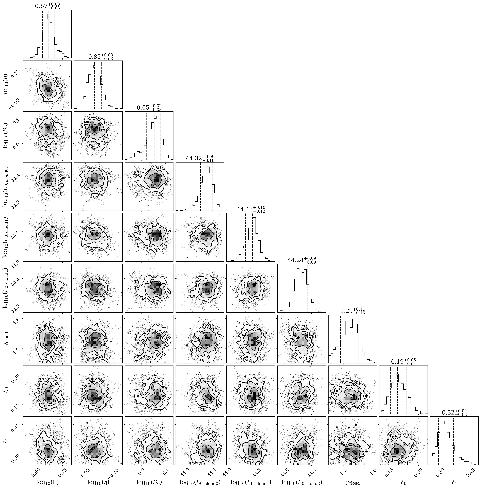
图注：Parameter values relevant to the radio clouds explored through MCMC sampling. We plot the distributions of parameter values sampled through our MCMC study, reflecting $\sim$40,000 realizations. This represents exploration of the parameter space near a local, high-likelihood solution. Contours represent the 1, 2, and 3$\sigma$ credible regions in two dimensions.
对应解读：对应“建议重点查看的图表”第5项参数后验或置信区间图，尤其是旧电子云/射电云参数之间的退化。
入选理由：该图专门展示射电云相关参数的 MCMC 分布和二维置信区域，直接关系到延迟射电耀发是否依赖特定的电子云 luminosity、空间分布和参数组合；与 Fig05 互补，可帮助读者判断旧电子群体是否是稳健需求还是局部高似然参数化结果。
来源与置信度：\(arxiv_source\)；high；\(arxiv_source\) / main.tex:figure[6]
强相关工作
这篇工作与 TXS 0506+056 的多信使观测论文直接相关，尤其是 IceCube-170922A 的 2017 年告警、多波段跟进，以及随后对 2014--2015 年方向性中微子超额的回溯分析。那些论文建立了“这个源为什么值得研究”的观测动机，而本文则试图解释电磁时间结构中最难被单区模型吸收的延迟射电部分。建议检索关键词包括 “TXS 0506+056 IceCube-170922A multimessenger”, “TXS 0506+056 delayed radio flare”, “neutrino blazar radio flare”, “parsec-scale jet neutrino blazar”。
在理论上，本文站在耀变体单区轻子模型、强子或光强子中微子模型、以及冲击波沿喷流传播射电耀发模型的交叉点。它并不直接替代中微子产生模型，而是为电磁辐射的空间时间演化提供更真实的背景。相反观点或张力主要来自两方面：一是 TXS 0506+056 与 IceCube 事件的统计关联强度仍受试验因子和源群体统计限制；二是某些强子模型要求的喷流功率可能很高，而轻子模型又不能自然产生中微子。本文的价值正是在这些张力之间加入射电延迟这一额外约束。
同一事件 / 同类源线索：
- https://arxiv.org/abs/2608.12696
- https://arxiv.org/pdf/2608.12696
- https://arxiv.org/abs/1807.08794
- https://arxiv.org/abs/1807.08816
相似工作：
基础理论 / 方法工作：
- https://ui.adsabs.harvard.edu/abs/1979ApJ...232...34B/abstract
- https://ui.adsabs.harvard.edu/abs/1981ApJ...243..700K/abstract
- https://ui.adsabs.harvard.edu/abs/1985ApJ...298..114M/abstract
相反观点 / 张力线索：
2. Radio Monitoring of Classical Novae using the ASKAP Variable and Slow Transients Survey
- 来源：arXiv / astro-ph.HE
- 链接：https://arxiv.org/abs/2608.13330v1
- 作者：Aishani Majumder, David L. Kaplan, Laura N. Driessen, Ashna Gulati, Tara Murphy, Dougal Dobie
- 评分：novelty 7/10，importance 7/10，relevance 9/10，final 8.70/10
- 推荐理由：ASKAP/VAST对经典新星的射电监测显示非热同步辐射和冲击粒子加速，并明确关联这些新星的伽马射线探测；对新星GeV辐射和冲击物理读者有较高价值。
中文题目：用 ASKAP/VAST 监测经典新星的射电辐射：单频光变也能识别冲击加速
做了什么：这篇论文用 ASKAP 的 VAST 巡天在 \(887.5\,\mathrm{MHz}\) 搜索经典新星射电辐射。作者把 \(2021\) 年 \(9\) 月到 \(2025\) 年 \(11\) 月间、落在约 \(1200\,\mathrm{deg^2}\) 银道面巡天区域内的 \(43\) 个光学发现经典新星与 VAST 数据交叉匹配，检出 \(3\) 个显著射电源：V6598 Sgr、V1716 Sco 和 V1723 Sco。论文用热自由-自由辐射模型和非热同步辐射模型分别拟合单频射电光变，并用 MCMC 约束喷出物质量、速度、质量损失率、爆炸能量、风速和填充因子等参数。核心结论是，这三个新星在 \(887.5\,\mathrm{MHz}\) 的早期射电辐射更像由冲击驱动的非热同步辐射主导；采用非均匀环双星介质的断裂幂律密度结构，比标准恒星风密度剖面更能解释光变。
为什么重要：经典新星过去常被当作热自由-自由射电源来分析，但近年的 \(\gamma\) 射线和低频射电观测显示，内部或外部冲击、粒子加速和非热辐射可能是普遍现象。这篇文章重要之处在于，它把 ASKAP/VAST 的宽视场、重复观测能力用于新星样本监测，并说明即使只有单一频率的射电光变，只要模型物理约束足够明确，也能对热辐射与非热辐射的主导机制作出有用判别。
理论 / 观测 / 仪器方法价值：对观测而言，论文展示了 VAST 这类低频宽场巡天可系统补足新星早期射电覆盖，尤其适合发现被传统厘米波随访漏掉的非热亮相。对理论而言，结果支持新星喷流或喷出壳与非均匀环双星物质相互作用产生强冲击，并为新星 \(\gamma\) 射线产生机制提供射电侧证。对方法而言，文章给出了在缺少多频谱指数信息时，如何通过单频光变形状、峰值时间和衰减斜率结合物理模型来限制发射机制的一个实际案例。
为什么应该关注：如果你关心新星作为低能量爆炸实验室、银河系瞬变源普查、冲击粒子加速或新星 \(\gamma\) 射线起源，这篇都值得看。它不是只报告三个射电检出，而是在问一个更普遍的问题：未来 SKA 时代大量单频或稀疏频率瞬变光变能否用于物理诊断？作者的回答是可以，但前提是把介质密度结构、吸收和观测选择效应认真纳入模型。
展开详细解读：文章讲解、背景、理论、重点章节、图表与相关工作
文章详细讲解
科学问题：经典新星是白矮星表面热核失控导致的爆发现象，传统射电图像通常把其厘米波辐射解释为膨胀、电离喷出物的热自由-自由辐射。然而，Fermi-LAT 对多颗新星的 \(\gamma\) 射线检出和若干新星早期低频射电亮化说明，新星环境中存在强冲击和非热粒子加速。本文要回答的是：在 ASKAP/VAST 的 \(887.5\,\mathrm{MHz}\) 单频监测数据中，能否从经典新星样本中识别射电辐射，并进一步判断辐射是热自由-自由主导还是非热同步辐射主导。
作者怎么做：论文从光学发现的新星目录中选出 \(2021\) 年 \(9\) 月至 \(2025\) 年 \(11\) 月爆发、位于 VAST 银道面约 \(1200\,\mathrm{deg^2}\) 覆盖区域内的 \(43\) 个经典新星，与 VAST \(887.5\,\mathrm{MHz}\) 图像和源表交叉匹配。对候选源，作者建立射电光变，检查爆发后时标、位置一致性和显著性。随后他们分别使用热自由-自由模型与非热同步辐射模型拟合三个检出源 V6598 Sgr、V1716 Sco 和 V1723 Sco。热模型主要约束喷出物质量和速度等量；非热模型则把冲击与环双星介质相互作用联系起来，拟合质量损失率、爆炸能量、风速、填充因子以及介质密度剖面。
关键结果：三个显著检出的新星都在 \(887.5\,\mathrm{MHz}\) 显示较强早期射电辐射。作者发现，单纯热自由-自由模型难以自然解释这些低频光变的峰值时间和亮度演化，而包含冲击加速电子的同步辐射模型表现更好。尤其重要的是，标准稳态风的密度剖面不如断裂幂律形式的非均匀环双星物质模型；这暗示新星周围介质并非简单、平滑、球对称的 \(r^{-2}\) 风，而可能包含由双星相互作用、过去质量损失或轨道结构塑造的密度变化。三个源都与 \(\gamma\) 射线新星背景有关，因此射电非热辐射与高能辐射之间的联系成为论文讨论的重点。
局限和下一步：这项工作最大的限制是频率维度单一。多频观测可直接测量谱指数、吸收转折和亮温演化，而本文需要依赖光变形状和模型先验来区分机制，因此存在热吸收、同步自吸收、介质密度结构和能量归一化之间的退化。样本方面，\(43\) 个光学新星中只有 \(3\) 个检出，检出率同时受到 VAST 巡天节奏、灵敏度、源距离、银河背景和爆发后覆盖时间影响，不能简单解释为非热辐射发生率。下一步最有价值的是把 ASKAP 单频监测与 ATCA、MeerKAT、VLA 或 uGMRT 的多频随访，以及 Fermi-LAT \(\gamma\) 射线光变联合起来，在同一套冲击模型中同时拟合射电谱、射电光变和高能辐射。
关键结果是怎么做出来的
样本选择是论文证据链的第一步。作者没有从射电瞬变目录反推新星，而是从光学发现的经典新星出发，要求爆发时间在 \(2021\) 年 \(9\) 月至 \(2025\) 年 \(11\) 月之间，并位于 ASKAP/VAST 银道面巡天约 \(1200\,\mathrm{deg^2}\) 区域内。这个筛选得到 \(43\) 个目标。这样做的优点是选择函数相对清楚：每个目标都有光学爆发时间和天区覆盖信息；缺点是结果依赖光学发现完整性，且银道面消光会影响原始新星样本。
在这 \(43\) 个目标中，作者找到 \(3\) 个显著射电检出：V6598 Sgr、V1716 Sco 和 V1723 Sco。关键不是只看某一次图像中是否有源，而是看射电源位置是否与光学新星一致、是否在爆发后合理时间窗口出现、光变是否呈现瞬变演化，以及信噪比是否超过 VAST 源检测门槛。非检出目标也构成约束，因为它们说明在相同巡天灵敏度和节奏下，并不是所有光学新星都会在 \(887.5\,\mathrm{MHz}\) 被看到。
最重要的统计比较来自光变拟合。作者用热自由-自由模型和非热同步辐射模型分别拟合同一组三个源的单频通量密度随时间变化。拟合采用 MCMC，因此结论不是来自某条手调曲线，而是来自参数后验、残差分布和模型对峰值时间、峰值通量、上升段与下降段斜率的联合解释能力。论文还比较了标准风密度剖面与断裂幂律环双星介质密度剖面，后者给出更好的光变匹配。
支持结论的图表通常包括：\(43\) 个新星在 VAST 覆盖中的检出与非检出分布；三个检出源的 \(887.5\,\mathrm{MHz}\) 光变及模型曲线；热模型和非热模型残差或后验约束；不同密度剖面模型的拟合优劣比较；以及参数后验的角图或置信区间表。读者应特别看单频光变是否存在足够长的时间基线：如果只有峰附近少数点，机制区分会很脆弱；如果同时有早期上升、峰值和后期衰减，则同步模型的优势更有说服力。
主要系统误差包括 ASKAP 图像在银道面复杂背景下的通量标定误差、源混淆、位置匹配偶然率、爆发时间与观测时刻之间的采样间隔、距离不确定性、热吸收与同步自吸收的混合效应，以及环双星介质几何的简化。稳健性方面，本文最值得关注的是作者是否测试了不同密度剖面、不同吸收处理、不同先验范围和非检出上限对参数后验的影响。因为单频数据没有直接谱指数，模型比较的可信度很大程度上取决于这些稳健性检验是否充分。
展开背景、理论、公式、模型、章节和图表导读
背景知识
经典新星发生在白矮星吸积伴星物质后，表面积累的富氢层达到热核失控条件，短时间内喷出质量通常在约 \(10^{-7}\) 到 \(10^{-4}\,M_\odot\) 的量级。与超新星相比，新星能量低很多，但距离近、发生率高、可重复观测，是研究非相对论爆炸、辐射转移和双星质量损失的理想实验室。
射电新星研究有较长历史。早期的标准解释是热自由-自由辐射：喷出物被电离并膨胀，光球随时间变化，射电光变先因光学厚区域增大而上升，后因光学深度降低和密度下降而衰减。这个模型在多颗经典新星的厘米波观测中取得过成功，因此长期成为默认框架。
过去十多年，Fermi-LAT 发现若干经典新星有 GeV \(\gamma\) 射线辐射，迫使领域重新评估新星中的冲击。新星喷出物可能不是单一速度、球对称壳层，而是由快慢不同的流、赤道密集物质、极向外流和伴星风共同塑造。快流追上慢流或喷出物撞击环双星介质时，会形成冲击，进而加速电子和离子。非热电子产生同步辐射，强子或轻子过程则可能产生 \(\gamma\) 射线。
为什么现在值得重新看？一方面，ASKAP/VAST、MeerKAT、VLASS、uGMRT 和未来 SKA 路径机提供了大视场、重复扫描能力，可以在新星爆发后无需逐个触发就积累射电光变。另一方面，低频射电对吸收和非热成分非常敏感，能够捕捉冲击相互作用的早期阶段。本文正是在这种巡天时代背景下，尝试把单频巡天光变转化为物理诊断。
一个常见误区是把新星射电检出直接等同于热喷出物质量测量。实际上，低频早期强辐射很可能被非热同步成分主导；若仍用热自由-自由模型解释，可能会高估喷出物质量或误判速度结构。另一个误区是认为只有多频观测才能做物理判断。多频当然更强，但本文强调，在物理模型约束、时间采样和上限信息足够时，单频光变也能提供有意义的机制判别，只是退化和系统误差必须明说。
基础理论 / 方法脉络
从基础图像看，新星喷出物向外膨胀时会携带动能并与周围介质相互作用。若辐射来自温度约 \(10^4\,\mathrm{K}\) 的电离气体，主要机制是电子在离子库仑场中加速产生的热自由-自由辐射。此时光变由发射量、光学深度和几何面积控制：早期低频可能光学厚，通量近似随投影面积增大而上升；后期光学薄，通量随密度平方积分下降。
非热图像不同。冲击把一部分动能转化为磁场湍动和非热电子，电子能谱可近似为幂律。相对论电子在磁场中回旋产生同步辐射，其谱形和光变取决于电子能谱指数、磁场强度、冲击半径、周围密度和吸收过程。低频同步辐射可能被自由-自由吸收或同步自吸收压低，所以峰值时间不只是爆发能量的函数，也受介质电离状态和密度剖面影响。
本文的关键模型假设是：三个检出新星的 \(887.5\,\mathrm{MHz}\) 光变可分别用热自由-自由模型和非热同步冲击模型描述，并通过拟合优劣比较主导机制。热模型把射电通量与喷出物质量、速度、温度、距离和膨胀几何相连；非热模型把通量与冲击能量、质量损失率、风速、填充因子、磁场能量分数和电子加速效率相连。因为论文只使用单一频率，模型假设本身承担了多频谱诊断本该提供的一部分信息。
环双星介质密度剖面是核心物理量。标准稳态风有 \(\rho\propto r^{-2}\)，但新星双星环境未必是平滑稳态风；伴星轨道、过去喷发、赤道物质堆积和非球对称外流都可造成密度断裂或斜率变化。作者用断裂幂律描述非均匀介质，允许光变上升和衰减斜率更灵活地匹配观测。
主要退化包括距离与能量归一化退化、密度与吸收退化、电子加速效率与磁场能量分数退化、喷出速度与爆发时间零点退化，以及热与非热成分叠加时的模型可辨识性问题。低频银道面观测还会受到扩展背景、旁瓣、混淆和通量标定系统误差影响，因此不能只看最佳拟合曲线，还要看残差、后验宽度和非检出上限是否一致。
公式与推导
第一步从热自由-自由辐射的局域发射率开始。对温度为 \(T\)、电子数密度为 \(n_e\)、离子数密度为 \(n_i\) 的电离气体，低频射电近似下有
其中 \(j_\nu^{\mathrm{ff}}\) 是单位体积、单位频率、单位立体角发射率，\(Z\) 是离子电荷数，\(g_{\mathrm{ff}}\) 是 Gaunt 因子，\(C_{\mathrm{ff}}\) 包含基本常数。这个式子说明热射电亮度主要随密度平方变化，因此对喷出物质量非常敏感。
第二步是吸收。自由-自由吸收系数可写成
其中 \(\alpha_\nu^{\mathrm{ff}}\) 控制光学深度，\(\nu\) 是观测频率。沿视线积分得到
这里的 \(\int n_e n_i\,ds\) 是发射量的线积分形式。对 \(887.5\,\mathrm{MHz}\) 这样的低频，\(\nu^{-2}\) 使吸收特别重要。
第三步把辐射转移连接到观测通量。若源函数接近热平衡，射电 Rayleigh-Jeans 极限下 \(B_\nu(T)\simeq 2kT\nu^2/c^2\)，角半径为 \(\theta=R/D\) 的均匀球面近似通量为
其中 \(R\) 是喷出物半径，\(D\) 是距离。光学厚时 \(F_\nu^{\mathrm{th}}\propto R^2\nu^2\)，光学薄时 \(F_\nu^{\mathrm{th}}\propto \tau_\nu R^2\nu^2\)。
第四步引入膨胀动力学。若喷出物以特征速度 \(v_{\mathrm{ej}}\) 自由膨胀，则
其中 \(t_0\) 是爆发时刻。若喷出质量为 \(M_{\mathrm{ej}}\)，壳层体积填充因子为 \(f\)，平均密度近似为
其中 \(\mu_e\) 是每个自由电子对应的平均分子量，\(m_p\) 是质子质量。代回上式可看出热模型中 \(M_{\mathrm{ej}}\)、\(v_{\mathrm{ej}}\)、\(f\) 和 \(D\) 强烈耦合。
第五步写出非热同步模型的基本假设。冲击加速电子能谱常取
其中 \(K_e\) 是归一化，\(p\) 是电子能谱指数。均匀磁场 \(B\) 中的光学薄同步辐射通量具有标度
其中 \(V\) 是辐射体积。虽然本文主要是单频，\(\nu\) 固定后，时间演化仍通过 \(K_e(t)\)、\(B(t)\) 和 \(V(t)\) 进入。
第六步把冲击能量与介质密度相连。若冲击速度为 \(v_s\)，半径为 \(R_s\)，外部密度为 \(\rho(R_s)\)，扫过质量的量级为
冲击可用能量尺度
描述，其中一部分进入非热电子和磁场。常用参数化为 \(U_e=\epsilon_e E_{\mathrm{sh}}\) 与 \(U_B=\epsilon_B E_{\mathrm{sh}}\)，\(\epsilon_e\) 和 \(\epsilon_B\) 分别是电子和磁场能量分数。
第七步是介质密度剖面。标准风为
其中 \(\dot{M}\) 是质量损失率，\(v_w\) 是风速。本文更偏好的非均匀环双星介质可用断裂幂律表示为
)
其中 \(r_b\) 是断裂半径，\(\rho_b\) 是断裂处密度，\(s_1\) 与 \(s_2\) 是内外区斜率。这个式子提供了比 \(s=2\) 稳态风更灵活的光变斜率。
第八步连接到拟合统计量。对观测通量 \(F_{\nu,i}^{\mathrm{obs}}\)、误差 \(\sigma_i\) 和模型 \(F_\nu(t_i|\boldsymbol{\theta})\)，高斯误差似然可写为
这里 \(\boldsymbol{\theta}\) 包括热模型或非热模型参数。MCMC 采样的是后验 \(P(\boldsymbol{\theta}|\mathrm{data})\propto \mathcal{L}(\boldsymbol{\theta})P(\boldsymbol{\theta})\)，模型比较则依赖残差、后验可接受区域和信息准则或证据近似。
模型拟合 / 应用方法
本文的拟合对象是三个检出新星在 \(887.5\,\mathrm{MHz}\) 的射电通量密度随时间变化。热模型的主要参数包括喷出物质量、喷出速度、温度或其固定假设、填充因子、距离以及爆发时间参考点。非热模型的参数包括冲击能量、质量损失率、风速、填充因子、介质密度剖面参数和辐射效率相关参数。由于只有单频，谱指数不能直接从数据测出，因此作者必须通过光变形状和物理先验约束参数空间。
MCMC 的价值在于展示参数相关性，而不是只给一个最佳值。热模型中，较大的喷出物质量会增加自由-自由光学深度，使低频峰值推迟；较大的速度会增大半径并加快密度下降，使峰值时间提前。这导致 \(M_{\mathrm{ej}}\) 与 \(v_{\mathrm{ej}}\) 存在明显退化。距离 \(D\) 与总能量或质量归一化也退化，因为通量基本按 \(D^{-2}\) 缩放。
非热模型中，\(\dot{M}\)、\(v_w\)、填充因子、\(\epsilon_e\)、\(\epsilon_B\) 和爆炸能量之间同样存在退化。提高周围密度可增强冲击功率和同步辐射，但也会增加自由-自由吸收，使早期低频通量降低。因此一个模型能否拟合光变，不仅取决于峰值亮度，也取决于上升段是否被吸收自然塑造，以及后期衰减是否与密度剖面一致。
残差诊断应重点看系统性偏离。若热模型在早期低估通量、在峰后下降过慢或需要不合理高的喷出物质量，就说明热解释可能不自然。若标准风非热模型能给出峰值但衰减斜率不对，则支持断裂幂律介质。本文结论中的“非热同步主导”并不等于完全没有热成分，而是说在 \(887.5\,\mathrm{MHz}\) 的观测窗口，主导光变形态和亮度的机制更可能是冲击同步辐射。
模型可能失败的地方包括：几何非球对称未被充分表示，多组分喷出物被压缩成单一速度或少数参数，热与非热成分在同一频率混合但被分别拟合，\(\gamma\) 射线约束没有与射电进行真正联合似然拟合，以及银道面射电图像的系统误差未完全进入后验。实际应用上，这套方法适合未来巡天先筛选出疑似冲击主导的新星，再决定哪些目标值得多频高 cadence 随访。
重点章节 / 结果段落怎么读
数据与样本部分应首先阅读。这里决定了检出率和选择函数的含义：\(43\) 个光学新星如何进入样本、VAST 银道面覆盖和观测频率是什么、每个目标爆发后有哪些观测 epoch、非检出的上限如何定义。读者应确认样本不是射电亮源偏选，而是从光学新星出发的交叉匹配。
源检出与光变构建部分是第二个重点。需要看 V6598 Sgr、V1716 Sco 和 V1723 Sco 的位置匹配、信噪比、图像质量和通量提取方法。低频银道面图像容易有背景和旁瓣问题，因此源是否稳定地出现在多个 epoch，以及是否与新星爆发时间相关，比单次高信噪比更重要。
热自由-自由模型部分要关注模型假设是否过于理想化。读者应看作者采用何种喷出几何、温度、速度结构和填充因子，以及喷出物质量后验是否落在经典新星合理范围内。如果热模型需要极端参数才能拟合低频早期强辐射，那么它的物理可信度就会下降。
非热同步模型与环双星介质部分是论文的核心。读者应重点看标准 \(r^{-2}\) 风和断裂幂律密度模型的比较，尤其是二者对光变上升、峰值和衰减的解释差异。这里的模型选择直接支撑“非均匀环双星物质更合适”的结论。
讨论与稳健性检验部分应与 \(\gamma\) 射线联系一起阅读。三个新星都显示与高能辐射相关的背景信息，因此作者把射电同步辐射解释为冲击加速证据。读者需要分清：射电数据本身证明了非热成分更优，而与 \(\gamma\) 射线的对应关系增强了冲击解释，但若没有联合高能建模，它还不是对 \(\gamma\) 射线产生通道的唯一证明。
建议重点查看的图表
-
样本覆盖图或目标列表表格：检查 \(43\) 个光学新星在 VAST 银道面区域内的分布、爆发时间、观测 epoch 和是否检出。重点看非检出目标是否有足够深的上限。
-
三个检出源的射电图像切片或位置匹配图：检查射电峰值与光学位置的偏移、局部背景复杂度、旁瓣或混淆源可能性。银道面低频图像中这一步非常关键。
-
\(887.5\,\mathrm{MHz}\) 光变图：横轴应为爆发后时间，纵轴为通量密度或上限。重点看每个源是否覆盖上升、峰值和衰减，而不是只有孤立检出。
-
热自由-自由模型拟合图：检查模型曲线是否系统性偏离早期或晚期数据，是否需要极端喷出物质量或速度。若图中有残差，下方残差面板比主图更有诊断价值。
-
非热同步模型拟合图：比较标准风密度剖面与断裂幂律密度剖面。重点看峰后衰减斜率、早期吸收导致的上升速度，以及模型不确定带是否覆盖数据。
-
参数后验角图或参数表：检查 \(M_{\mathrm{ej}}\)、\(v_{\mathrm{ej}}\)、\(\dot{M}\)、\(v_w\)、能量和填充因子的可信区间及相关性。宽后验或强相关说明单频模型判别仍有退化。
-
模型比较表或信息准则表：如果论文给出 \(\chi^2\)、AIC、BIC、证据或类似统计量，应看改进幅度是否足以抵消断裂幂律模型增加的自由参数。
-
与 \(\gamma\) 射线时间线对比图或讨论表：检查射电峰值、光学爆发和 \(\gamma\) 射线活动时间是否物理上相容。时间相关性可支持冲击图像，但不应被过度解读为唯一因果证明。
关键图表逐图导读
图 1：建议把它当作样本和选择函数图来读。横纵坐标可能是银经、银纬或天区覆盖，点表示 \(43\) 个光学新星，颜色或符号区分检出与非检出。关键结论是 VAST 的宽视场确实覆盖了一个可统计讨论的光学新星样本。读图陷阱是不要把 \(3/43\) 直接理解为银河新星射电发生率，因为覆盖深度、时间采样和距离分布都不均匀。
图 2：通常应是三个检出源的 ASKAP 图像或局部视场。坐标轴为赤经和赤纬，等值线或色标表示 \(887.5\,\mathrm{MHz}\) 亮度，标记显示光学新星位置。应检查射电峰与光学位置是否在 ASKAP 位置误差内，以及周围是否有扩展背景或邻近源。陷阱是低频银道面图像中旁瓣和弥散结构可能造成假源或通量偏差。
图 3：这是最核心的光变图。横轴为爆发后时间，纵轴为 \(887.5\,\mathrm{MHz}\) 通量密度，数据点带误差棒，上限用箭头表示，模型线可能区分热自由-自由、标准风同步和断裂幂律同步模型。读者应看模型是否同时解释峰值通量、峰值时刻和衰减斜率。陷阱是单频光变中不同物理模型可能在峰附近相似，真正的区分往往来自早期上限和晚期衰减。
图 4：若为模型比较或残差图，横轴仍多为时间，纵轴为残差或归一化残差。热模型若在某一时间段连续正残差或负残差，说明它不是随机散布地偏离数据，而是物理形状不对。非热断裂幂律模型若残差更接近零且没有明显时间趋势，就支持作者结论。陷阱是自由参数更多的模型天然更容易拟合，必须结合信息准则或物理合理性判断。
图 5：若为 MCMC 角图或后验图，坐标轴为模型参数两两组合，例如 \(M_{\mathrm{ej}}\) 与 \(v_{\mathrm{ej}}\)、\(\dot{M}\) 与 \(v_w\)、能量与填充因子。等高线表示 \(1\sigma\) 或 \(2\sigma\) 可信区域。关键是识别哪些参数被数据真正约束，哪些只是被先验截断。陷阱是把窄的一维边缘分布误认为参数独立可靠；二维相关性往往揭示物理退化。
图 6：若论文给出与 \(\gamma\) 射线或其他波段的时间线比较，横轴通常是爆发后时间，标注光学峰、射电检出、射电峰和 \(\gamma\) 射线活动。主要结论是三个新星的强低频射电与冲击加速图像相容。读图陷阱是时间相近不等于辐射区完全相同；射电还受吸收控制，峰值可能滞后于粒子加速本身。
论文原图 / 可嵌入图片
Fig01
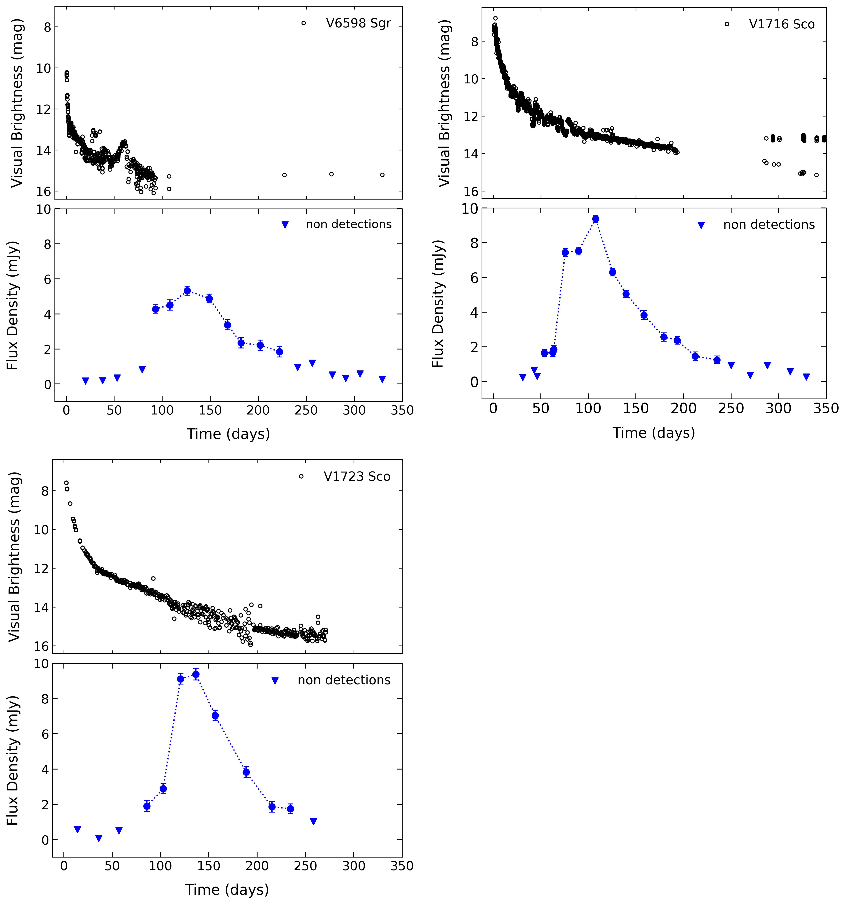
图注：Optical (top) and radio (bottom) light curves for V6598 Sgr, V1716 Sco, and V1723 Sco. Optical data are from AAVSO; radio data at $887.5\,\mathrm{MHz}$ are from ASKAP VAST. Triangles indicate $5\sigma$ upper limits.
对应解读：对应“建议重点查看的图表”第3项和“关键图表逐图导读”图3：887.5 MHz 光变图，以及详细解读中三个检出源的光变建立。
入选理由：这是全文最基础也最核心的观测图，直接给出 V6598 Sgr、V1716 Sco、V1723 Sco 的光学与 ASKAP/VAST 887.5 MHz 射电光变，并标出5σ上限。它能检验检出是否为孤立点、是否覆盖峰值和衰减，以及早期上限对模型判别的约束，比单独的参数图更直接支撑日报对单频光变诊断的讨论。
来源与置信度：\(arxiv_source\)；high；\(arxiv_source\) / main.tex:figure[1]
Fig02
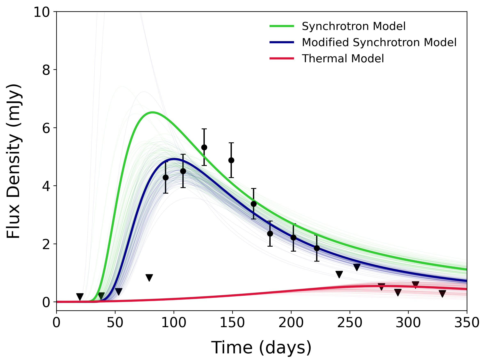
图注：Model fit of thermal, non-thermal, and modified non-thermal emission to V6598 Sgr at $887.5\,\mathrm{MHz}$, with the red, green, and blue light curves representing the respective model fits. Spaghetti plots based on 100 posterior samples from MCMC fitting are shown to illustrate the spread and uncertainty of the model, while the bold curve denotes the best-fit model.
对应解读：对应“建议重点查看的图表”第4、5项和“模型拟合”段落：V6598 Sgr 的热自由-自由、标准非热同步和修正非热同步模型比较。
入选理由：该图把三类模型曲线直接叠加在 V6598 Sgr 的887.5 MHz数据上，并用MCMC后验抽样的spaghetti曲线显示不确定性，正好用于判断热模型、标准风同步模型和断裂幂律同步模型在峰值、上升和衰减阶段的表现差异。
来源与置信度：\(arxiv_source\)；high；\(arxiv_source\) / main.tex:figure[2]
Fig04
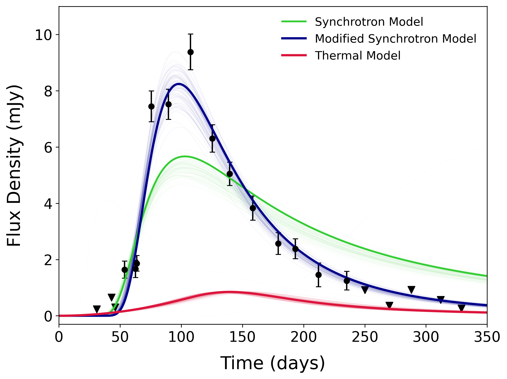
图注：Radio light curve fitting of V1716 Sco for thermal, non-thermal, and modified non-thermal emission models. Red, green, and blue curves show three different models. From the MCMC posterior distribution, 100 samples are used to generate a spaghetti plot illustrating the uncertainty ranges, with bold lines indicating the respective best-fit solutions.
对应解读：对应“建议重点查看的图表”第4、5项和“关键图表逐图导读”图4的模型比较/拟合诊断：V1716 Sco 的三种发射模型拟合。
入选理由：V1716 Sco 是三个检出源之一，此图展示热、非热和修正非热模型对同一单频光变的拟合差异及后验不确定范围。它有助于检验日报中关于标准风密度剖面不足、断裂幂律介质模型更合理但仍有退化的说法。
来源与置信度：\(arxiv_source\)；high；\(arxiv_source\) / main.tex:figure[4]
Fig06
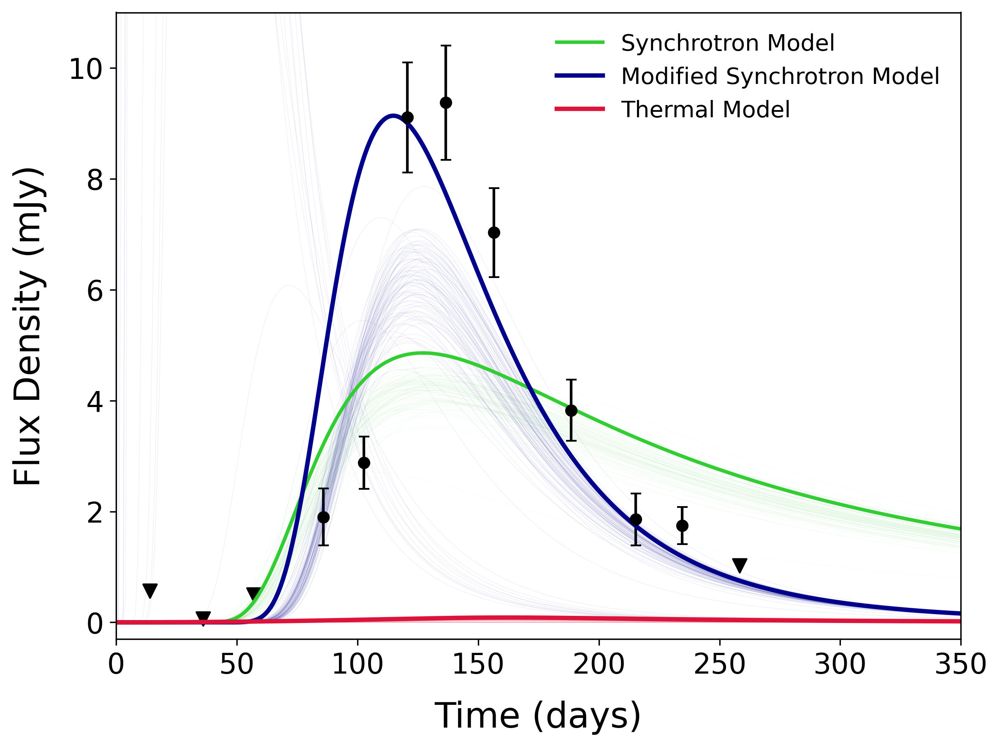
图注：Radio light curve fitting of V1723 Sco for thermal, non-thermal, and modified non-thermal emission models. Red, green, and blue curves show three different models. From the MCMC posterior distribution, 100 samples are used to generate a spaghetti plot illustrating the uncertainty ranges, with bold lines indicating the respective best-fit solutions.
对应解读：对应“建议重点查看的图表”第4、5项和“模型拟合”段落：V1723 Sco 的热模型与非热同步模型光变拟合。
入选理由：该图补全第三个检出新星的模型比较，是支撑“所有三个检出源均显示非热同步主导证据”这一核心结论所必需的图。与Fig02和Fig04并列阅读，可以判断结论是否只由单个源驱动，还是在三个源上都成立。
来源与置信度：\(arxiv_source\)；high；\(arxiv_source\) / main.tex:figure[6]
Fig05
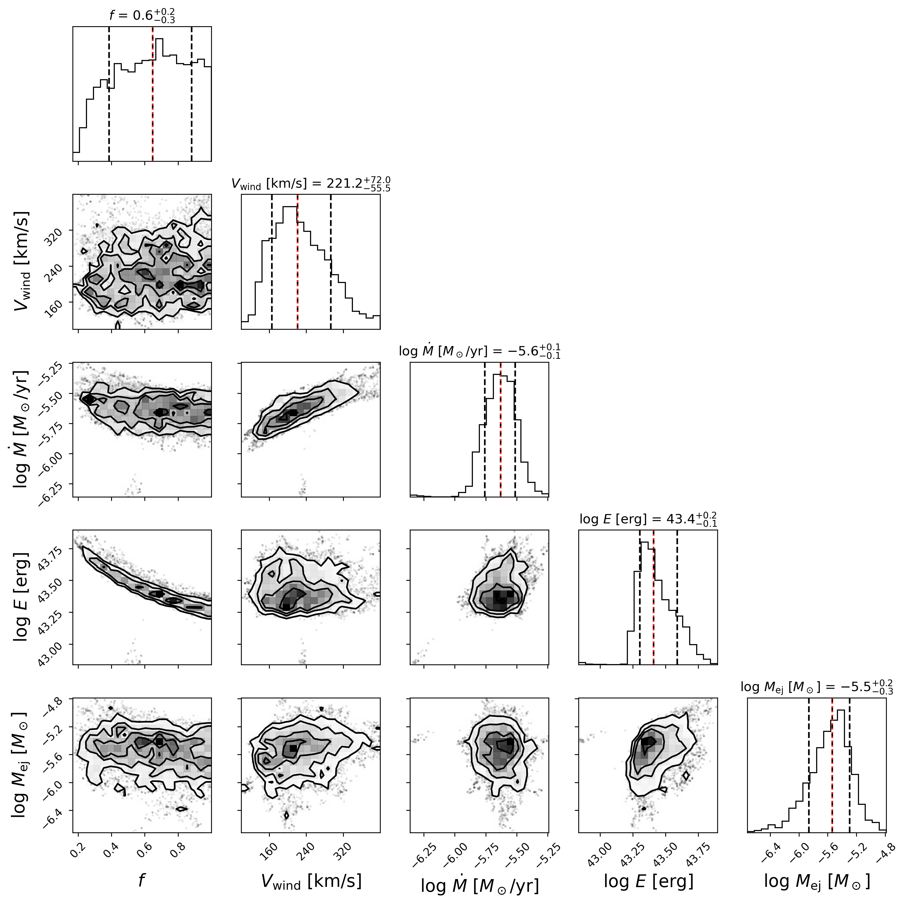
图注：Posterior distribution of the parameters in the broken power-law synchrotron model fit to V1716 Sco. These parameters are poorly constrained, resulting in a poor fit to the data. Mass loss rate $\dot{M}$ and wind velocity $V_{\mathrm{wind}}$ showed a positive correlation, reflecting the model degeneracy to sustain the observed radio flux, maintaining the $\rho\propto \frac{\dot M}{V_{\mathrm{wind}}}$ density profile. While the Energy and filling factor showed negative correlations, implying that if we make the shock more energetic, we need a smaller filling factor to produce the same radio flux peak.
对应解读：对应“建议重点查看的图表”第6项和“关键图表逐图导读”图5：MCMC角图/后验相关性，以及“模型拟合”中关于单频退化的讨论。
入选理由：该角图明确展示 V1716 Sco 断裂幂律同步模型参数约束差、质量损失率与风速正相关、能量与填充因子负相关等退化关系。它比只给最佳拟合曲线更能提醒读者：单频模型判别依赖先验和参数相关性，不能只看一维最佳值。
来源与置信度：\(arxiv_source\)；high；\(arxiv_source\) / main.tex:figure[5]
Fig10
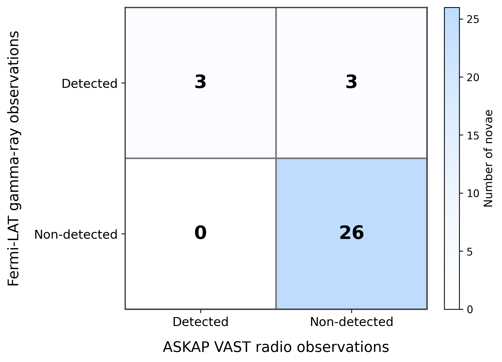
图注：Comparison of \(\textit{Fermi}-LAT\) $\gamma$-ray and ASKAP VAST radio detections of novae, to assess whether radio detections are preferentially associated with prior gamma-ray detections. Each cell gives the number of novae in the corresponding detection category. The colour intensity scales with the number of sources per cell, with darker shading indicating a higher count. The estimated $p\simeq0.004$ value from the binomial confidence interval shows that there is only about a $0.4\%$ chance of getting a distribution like this, where all 3 ASKAP radio-detected novae fall within 6 \(\textit{Fermi}-LAT\) gamma-ray-detected novae.
对应解读：对应“建议重点查看的图表”第8项和详细解读中射电检出与Fermi-LAT γ射线新星关联的讨论。
入选理由：虽然它不是严格的时间线图，但它直接量化 ASKAP 射电检出与Fermi-LAT γ射线检出的对应关系，并给出约p≈0.004的统计提示。该图能支撑日报中关于低频非热射电、冲击加速和高能辐射可能相关的讨论，同时也便于提醒读者相关性不等同于唯一因果证明。
来源与置信度：\(arxiv_source\)；high；\(arxiv_source\) / main.tex:figure[10]
强相关工作
这篇工作应放在两条文献线索中理解。第一条是经典新星射电热模型传统，包括用多频厘米波光变推断喷出物质量、温度和速度结构的研究。检索关键词可用“classical nova radio free-free emission ejecta mass Hubble flow model”。这些工作提供了热自由-自由解释的基准，也提醒读者喷出物质量推断高度依赖距离、填充因子和几何。
第二条是 \(\gamma\) 射线新星和非热射电新星。Fermi-LAT 发现新星 GeV 辐射之后，大量研究开始讨论内部冲击、外部冲击、强子过程、轻子过程和同步射电对应体。检索关键词可用“gamma-ray novae Fermi LAT shocks synchrotron radio”, “V959 Mon nonthermal radio nova”, “V1324 Sco gamma-ray nova radio”。本文的三个源 V6598 Sgr、V1716 Sco 和 V1723 Sco 属于具名事件，应查找同一事件的光学分类、电波随访和 Fermi-LAT 报告；如果没有正式论文，Astronomer’s Telegram、Fermi nova lists 和 nova catalog 也可能提供上下文。
与相反观点或张力相关的方向是：单频射电光变是否足以区分热与非热机制。传统观点会强调缺少谱指数和多频吸收转折时，模型判别不唯一；本文则展示在强物理先验和光变形状约束下仍能得到有用结论。读者可检索“single frequency radio transient model degeneracy”, “nova synchrotron self absorption free-free absorption degeneracy”。
同一事件 / 同类源线索：
- https://arxiv.org/abs/2608.13330
- https://arxiv.org/pdf/2608.13330
- https://vast-survey.org/
- https://heasarc.gsfc.nasa.gov/W3Browse/fermi/fermigtrig.html
相似工作：
基础理论 / 方法工作：
- https://ui.adsabs.harvard.edu/abs/2010ASPC..435..305B/abstract
- https://ui.adsabs.harvard.edu/abs/2014Sci...345..554A/abstract
- https://ui.adsabs.harvard.edu/abs/2015Natur.521..328C/abstract
相反观点 / 张力线索：
- https://ui.adsabs.harvard.edu/abs/2016MNRAS.457..887M/abstract
- https://ui.adsabs.harvard.edu/abs/2017MNRAS.469.4342M/abstract
3. X-ray Flaring and Variability in NGC 1275, the Heart of the Perseus Cluster
- 来源：arXiv / astro-ph.HE
- 链接：https://arxiv.org/abs/2608.13281v1
- 作者：Sarah Ketchum, Jon M. Miller, S. W. Allen, Doyee Byun, Tianyin Hu, Missagh Mehdipour, Veronica Tananko, Xin Xiang
- 评分：novelty 7/10，importance 8/10，relevance 8/10，final 8.70/10
- 推荐理由：20年Swift监测分离NGC 1275核区X射线变化并发现快速耀发及可能的盘-喷流延迟联系；NGC 1275是重要高能AGN/伽马射线源，相关性较高。
中文题目：英仙座星团核心 NGC 1275 的 X 射线耀发和长期变率
做了什么：这篇论文用 Neil Gehrels Swift Observatory 对 NGC 1275 长达约 20 年的 X 射线监测数据，尝试从明亮而复杂的英仙座星团热气体背景中分离出中央活动星系核的真实变率。作者把星团内介质的 X 射线成分视为在监测时间尺度上近似恒定，并在每次 Swift 观测中建模扣除，从而以约 \(3\%\) 的典型通量误差追踪黑洞吸积相关的 X 射线发射。他们发现从 \(\mathrm{MJD}=59956\)，即 2023 年 2 月 21 日开始，核区 X 射线在数天内出现约 \(2\) 倍增强；光变时标限制辐射区尺度不大于约 \(870(10^{8}M_{\odot}/M_{\rm BH})GM/c^{2}\)。该耀发曲线不像简单潮汐瓦解事件模型，且在约 \(300\) 天后似乎在 \(43\,\mathrm{GHz}\) 射电监测中出现对应增强，提示它可能是一次从内吸积流传播到喷流射电发射区的扰动。
为什么重要：NGC 1275 是最接近、最亮、也最被深入研究的星团中央 AGN 之一；它的喷流通过在英仙座星团热气体中吹出空洞，把黑洞附近的能量注入到数十至数百千秒差距尺度的星团气体中。真正困难的问题不是证明它有喷流反馈，而是把黑洞附近的吸积变化、喷流形成、射电核区响应和大尺度热气体加热放到同一条因果链上。本文的重要性在于，它用高时间采样的 Swift 数据证明，即使在强 ICM 背景下，也可以以中等空间分辨率长期追踪中央 AGN 的 X 射线变化，并捕捉到天级耀发。
理论 / 观测 / 仪器方法价值：对观测而言，本文给出了一种实用路线：不必每次都依赖 Chandra 级角分辨率，也可以通过对恒定 ICM 成分的联合建模，从 Swift 监测中提取稳定的核区通量。对理论而言，天级 X 射线耀发和约 \(300\) 天后的 \(43\,\mathrm{GHz}\) 射电响应，为吸积盘或内热冕扰动进入喷流、并沿喷流传播到射电自吸收面提供了可检验的时标。对方法而言，论文展示了在扩展热等离子体背景中测量点源变率时，背景模型、孔径选择、响应矩阵和长期仪器稳定性如何共同限制结果。
为什么应该关注：如果你关心 AGN 反馈，这篇文章值得看，因为它把通常以千万年计的星团空洞能量学，往回连到了天到年的吸积和喷流变化。如果你做高能时域天文，它展示了一个很难但常见的场景：目标点源嵌在强扩展 X 射线背景里，变率信号不大但科学意义很强。如果你研究喷流，它给出一个可跟踪的候选盘喷流延迟时标，而不是只比较非同时的多波段亮度。
展开详细解读：文章讲解、背景、理论、重点章节、图表与相关工作
文章详细讲解
科学问题：NGC 1275 位于英仙座星团中心，是一个强射电 AGN，也是星团冷却流和 AGN 反馈研究的标志性系统。它的喷流在 ICM 中吹出空洞，说明中央黑洞释放的机械能可以影响星团气体的热史。但在黑洞附近，吸积流怎样变化、这些变化何时进入喷流、又如何表现为射电亮度增强，一直缺少连续的时间域约束。本文聚焦的不是大尺度空洞本身，而是中央 AGN 的 X 射线耀发和长期变率，尤其是能否从明亮 ICM 背景中可靠分离出核区信号。
作者怎么做：作者收集了 Swift 对 NGC 1275 约 20 年的 X 射线监测数据。Swift 的优势是时间覆盖长、采样相对密集；劣势是空间分辨率不如 Chandra，中央点源和星团热气体在成像上更容易混合。论文的关键处理是把 ICM 发射视为在这些观测时间尺度上近似恒定，在每次观测中对该恒定成分建模，然后把剩余变化归因于 AGN 核区。这样做的目标是把强但稳定的热背景从弱一些但可变的吸积相关信号中剥离出来，并把单次通量误差控制到约 \(3\%\)。
关键结果：作者发现从 \(\mathrm{MJD}=59956\) 开始，NGC 1275 的 X 射线通量在数天内增强约 \(2\) 倍。由光变时标给出的因果尺度限制表明，发射区不可能是星团尺度或喷流远端结构，而应当位于黑洞附近，尺度上限约为 \(870(10^{8}M_{\odot}/M_{\rm BH})GM/c^{2}\)。论文还比较了简单潮汐瓦解事件模型，认为耀发轮廓与典型的幂律衰减预期不一致。更有意思的是，在约 \(300\) 天后，\(43\,\mathrm{GHz}\) 射电监测中出现一个可能对应的耀发，这为盘喷流连接提供了时间序列证据。
局限和下一步：这项工作的主要局限来自 Swift 的中等角分辨率、ICM 模型的系统误差、以及 X 射线与射电事件关联的统计唯一性。约 \(300\) 天延迟很诱人，但单个事件很难排除偶然射电变率或喷流内部独立扰动。下一步需要更系统的多波段监测，尤其是 X 射线、毫米波、厘米波和 VLBI 成像的同步覆盖，以判断 X 射线耀发是否总是对应向外传播的射电核区增强，并测量不同频率射电峰值的延迟序列。
关键结果是怎么做出来的
数据和样本选择方面，论文使用的是 Swift 对 NGC 1275 的长期监测，而不是少数深曝光观测。这个选择直接服务于科学目标：耀发和盘喷流延迟需要高时间采样，单次高信噪比图像并不能替代。样本跨度约 20 年，包含许多独立 Swift 观测；作者需要在每个 epoch 中从同一片强 X 射线星团背景里提取核区通量，因此样本的价值不只在总曝光量，更在时间轴上能否覆盖天级和年级变化。
事件识别的核心是 2023 年 2 月 21 日附近，即 \(\mathrm{MJD}=59956\) 开始的 X 射线增强。论文报告的幅度约为因子 \(2\)，上升发生在数天内。判断它是否真实的关键不是肉眼看光变曲线，而是每个数据点的误差是否已经包含 ICM 建模不确定性、Swift 响应和背景处理误差。作者声称典型通量误差约 \(3\%\)，因此因子 \(2\) 的变化远大于单点统计误差；读者应检查相邻 epoch 的误差条、是否存在同一时期仪器模式或背景异常，以及 flare 前后基线是否稳定。
显著性和模型比较的证据链主要来自时间序列拟合与替代解释排除。若把 ICM 视为恒定，AGN 通量变化可在多个观测点中一致出现；若把变化归因于背景或热气体结构，则需要解释为什么热 ICM 会在天级时标内产生中央集中增强，这在物理上很难。论文还将耀发轮廓与简单 TDE 模型比较，认为其时间结构不符合典型的 \(t^{-5/3}\) 或类似平滑衰减预期。这里需要注意：排除的是“简单 TDE 解释”，不是排除所有恒星瓦解、盘不稳定或喷流重联模型。
支撑结论的图表应包括长期 X 射线光变曲线、2023 年耀发局部放大图、ICM 加 AGN 的谱或计数率拟合残差、以及 X 射线和 \(43\,\mathrm{GHz}\) 射电光变的对比。最关键的是看耀发的时间采样是否足够约束上升时标，射电峰是否真的在约 \(300\) 天后出现，以及不同频段是否存在符合喷流自吸收面传播的延迟趋势。如果只有一个 \(43\,\mathrm{GHz}\) 峰，关联证据应被视作提示性而非决定性。
系统误差方面，最大的风险是中央 AGN 通量与 ICM 模型归一化之间的退化。Swift 的点扩散函数会把核区和周围热气体混在一起，若 ICM 温度、金属丰度、吸收柱密度或背景归一化处理不当，可能把缓慢变化误认为核区变化。不过天级因子 \(2\) 耀发比较难由 ICM 系统误差制造。稳健性检验应包括改变提取孔径、固定或释放 ICM 参数、使用不同能段、剔除低曝光或高背景 epoch、以及与 Chandra 或 XMM-Newton 的近邻观测交叉校准。
展开背景、理论、公式、模型、章节和图表导读
背景知识
NGC 1275 是英仙座星团的中央星系，也对应强射电源 Perseus A。这个系统在高能天体物理中很特殊：它既是一个活跃的中央黑洞，又嵌在全天最亮的星团 X 射线气体之一中。星团 ICM 发出的热轫致辐射和谱线非常强，使得中央 AGN 的 X 射线测量既有高信噪比潜力，也有严重背景混合问题。
历史上，英仙座星团一直是冷却流问题和 AGN 反馈问题的核心样本。没有加热时，星团核心的高密度热气体应当快速辐射冷却并形成大量冷气体和恒星，但实际观测到的冷却率远低于简单冷却流模型。Chandra 和 XMM-Newton 的观测显示，NGC 1275 的射电喷流在 ICM 中挖出空洞，并通过激波、声波、湍流或浮升气泡把能量传给热气体。
本文重新审视这个源的原因是时域信息变得越来越重要。过去的 AGN 反馈研究常用空洞焓和浮升时间估算平均机械功率，时间尺度可达 \(10^{7}\) 至 \(10^{8}\,\mathrm{yr}\)。但黑洞吸积和喷流发射的真正变化发生在天、月、年尺度。若要理解反馈的“发动机”，需要把核区吸积状态和喷流响应直接连起来，而长期 Swift 监测正好提供了这种时间轴。
该领域常见误区之一，是把星团核心 X 射线亮度变化直接等同于 AGN 变化。对于 NGC 1275 这样的源，ICM 热发射占比很高，且空间结构复杂；如果不建模恒定热成分，核区光变会被稀释或污染。另一个误区是看到 X 射线耀发就立即归因于 TDE。中央 AGN 本身有盘不稳定、热冕变化、喷流基底耗散、磁重联等多种变率机制，TDE 只是候选之一，必须通过光变形状、多波段延迟和能谱演化来区分。
基础理论 / 方法脉络
从物理图像上看，NGC 1275 的 X 射线信号至少包含两类成分：一类是星团热气体的扩展发射，主要来自温度为 \(\mathrm{keV}\) 量级等离子体的热轫致辐射和金属线；另一类是 AGN 核区的非热或热 Compton 化发射，来自黑洞附近吸积流、热冕或喷流基底。前者在天到年尺度上近似稳定，后者可以快速变化。
本文的关键假设是 ICM 成分在 Swift 监测期间对单次观测而言可视为时间不变，而 AGN 成分允许随时间变化。这个假设不是说 ICM 永远不演化，而是说星团气体的声速穿越时间、冷却时间和动力学时间都远长于天级耀发时标。因此，若中央孔径内出现快速因子级变化，最自然的来源是紧凑核区。
光变时标给出发射区尺度约束。若观测到通量在 \(\Delta t_{\rm obs}\) 内显著变化，则辐射区线性尺度不能大于光在源系时间内走过的距离，即 \(R\lesssim c\Delta t_{\rm obs}/(1+z)\)，除非存在强相对论 Doppler 压缩。把这个尺度除以引力半径 \(r_{\rm g}=GM_{\rm BH}/c^{2}\)，就得到以黑洞尺度为单位的限制。本文给出的 \(870(10^{8}M_{\odot}/M_{\rm BH})r_{\rm g}\) 说明耀发很可能发生在内吸积流、热冕或喷流发射区，而非星团气体。
X 射线和射电延迟的基本解释是扰动传播。一次吸积流扰动可能先改变 X 射线热冕或喷流基底，随后沿喷流向外运动，到达在 \(43\,\mathrm{GHz}\) 处光学深度约为 \(1\) 的射电核心区域时才产生射电峰。不同射电频率看到的“核心”并非同一物理位置；频率越低，自吸收面通常越远，峰值出现越晚。因此，单个 \(43\,\mathrm{GHz}\) 延迟只是盘喷流连接的第一步证据，更强检验来自多频延迟序列和 VLBI 结构变化。
公式与推导
第一步是把观测计数和源通量联系起来。对 Swift XRT 这类光子计数仪器，第 \(i\) 次观测在探测器通道 \(j\) 的期望计数可写为
其中 \(t_i\) 是曝光时间，\(R_{ij}(E)\) 是能量重分布矩阵，\(A_i(E)\) 是有效面积，\(F_i(E)\) 是入射光子谱，\(B_{ij}\) 是背景计数。这个式子说明，通量变化不能直接从原始计数读出，必须经过仪器响应和背景模型。
第二步是分解中央区域的光谱成分。本文思想可概括为
其中 \(F_{\rm ICM}(E)\) 在不同 epoch 中近似固定，而 \(F_{{\rm AGN},i}(E)\) 随时间变化。若 ICM 的温度、丰度和归一化固定或由联合拟合约束，AGN 的归一化变化就能被更稳定地提取。
第三步，AGN X 射线谱常可用吸收幂律近似表示为
其中 \(K_i\) 是第 \(i\) 次观测的归一化，\(\Gamma\) 是光子指数，\(N_{\rm H}\) 是氢柱密度，\(\sigma(E)\) 是光电吸收截面。若数据质量不足以让 \(\Gamma\) 每次自由变化，固定或层级约束 \(\Gamma\) 可以降低 \(K_i\) 与谱形之间的退化。
第四步，ICM 热发射可抽象为碰撞电离平衡等离子体模型
其中 \(D_L\) 是光度距离，\(n_e\) 和 \(n_H\) 是电子与氢数密度，\(\Lambda_E(T,Z)\) 是温度 \(T\) 和金属丰度 \(Z\) 决定的谱发射率。这个式子解释了为什么 ICM 强而稳定：它来自大体积热气体的体积分发射量。
第五步，给定计数服从 Poisson 统计，合适的似然可写为
其中 \(n_{ij}\) 是观测计数，\(\mu_{ij}\) 是模型期望计数。通过最大化 \(\mathcal{L}\) 或等价地最小化 Cash statistic，可以估计每个 epoch 的 \(K_i\) 及其误差。
第六步，通量变率幅度可以用相对变化表示为
其中 \(F_{\rm peak}\) 是耀发峰值通量，\(F_{\rm base}\) 是耀发前基线通量。本文报告 \(A_{\rm flare}\sim2\)，而典型通量误差约 \(3\%\)，因此该变化不是边缘效应。
第七步，光变时标给出因果尺度
其中 \(R\) 是辐射区尺度，\(\Delta t_{\rm obs}\) 是观测到的变化时间，\(\delta\) 是 Doppler 因子，\(z\) 是红移。在未假定强 beaming 或取 \(\delta\sim1\) 时，这个限制可直接说明源区紧凑。
第八步，把尺度写成引力半径单位，使用
这里 \(M_{\rm BH}\) 是黑洞质量。本文给出的上限约 \(870(10^{8}M_{\odot}/M_{\rm BH})\) 表明，即使黑洞质量存在不确定性，耀发区仍在相当靠近中央引擎的尺度。
第九步，若检验 TDE 型衰减，一个常用近似是
其中 \(t_0\) 是回落开始时间，\(\dot{M}\) 是回落率。在最简单情况下，X 射线光度 \(L_X\) 会随 \(\dot{M}\) 平滑衰减；若观测耀发呈现多峰、快速再增强或不匹配该斜率，就会削弱简单 TDE 解释。
第十步，X 射线与射电延迟可用传播距离粗略估计
其中 \(\beta c\) 是喷流中扰动速度，\(\theta\) 是视线夹角，\(\Delta t_{\rm lag}\) 是观测延迟。若 \(\Delta t_{\rm lag}\sim300\,\mathrm{d}\)，这个式子可把延迟转化为 \(43\,\mathrm{GHz}\) 射电核心相对 X 射线源区的投影传播尺度，但结果强烈依赖 \(\beta\) 和 \(\theta\)。
模型拟合 / 应用方法
本文这类分析的拟合核心是多 epoch 谱或计数率模型：一个时间恒定的 ICM 成分，加上每个 epoch 可变的 AGN 成分。实际拟合量通常包括 AGN 幂律归一化 \(K_i\)、可能固定或部分共享的光子指数 \(\Gamma\)、吸收柱密度 \(N_{\rm H}\)、ICM 温度 \(T\)、丰度 \(Z\) 和热模型归一化。若单次曝光较短，过多自由参数会让通量误差被低估，因此共享参数或使用外部高分辨率观测约束 ICM 是合理策略。
似然选择应尊重计数统计。对于低计数通道，Cash statistic 或 Poisson likelihood 比传统 \(\chi^2\) 更合适；对于合并后的高计数谱，\(\chi^2\) 近似也可能可用。读者需要关注论文是否把响应矩阵、有效面积、背景区域、坏像素、pile-up 或曝光修正纳入处理。NGC 1275 的核区亮但嵌在强扩展背景中，系统误差往往比单纯 Poisson 误差更重要。
参数退化主要有三类。第一，ICM 归一化与 AGN 归一化退化：二者都能改变中央孔径的总计数。第二，吸收柱密度 \(N_{\rm H}\) 与光子指数 \(\Gamma\) 退化：软 X 射线的下降既可能来自更强吸收，也可能来自更硬谱。第三，提取孔径和 PSF 翼影响会把空间混合转化为谱归一化偏差。论文通过假设 ICM 时间恒定并追踪快速变化，部分打破了第一类退化。
残差诊断比单个最佳拟合值更有信息。若模型正确，耀发 epoch 的残差应主要体现为点源谱成分增强，而不是只在某些热谱线附近出现结构性偏差。若残差集中在 Fe-L 或 Fe-K 复合线附近，可能提示 ICM 温度或丰度模型不足。若软能段残差异常，则需要重新检查吸收、背景或校准。长期光变中若只有少数低质量观测点偏离，也要警惕曝光、视场位置和背景异常。
模型可能失败的场景包括：ICM 在中央小尺度上并非完全恒定、AGN 谱形在耀发期间显著变硬或变软、喷流相关 X 射线和盘冕 X 射线混合、以及 Swift 的空间分辨率不足以隔离邻近结构。实际应用中，最稳健的做法是用 Chandra 的高分辨率图像定义 ICM 空间模板，用 Swift 提供时间采样，再用射电监测和 VLBI 判断 X 射线事件是否进入喷流。
重点章节 / 结果段落怎么读
数据和样本部分应先看 Swift 观测如何筛选、总时间跨度、单次曝光分布、能段选择和提取孔径。对于 NGC 1275，样本定义直接影响结论：若某些 epoch 处于异常背景或离轴角较大，PSF 和有效面积变化会影响核区通量。
ICM 与 AGN 分离方法是全文方法核心。读者应重点看作者如何把 ICM 设为时间恒定，哪些参数在所有 epoch 共享，哪些参数逐次自由变化，是否使用外部 Chandra 或 XMM-Newton 结果校准热气体模型。这里决定了约 \(3\%\) 通量误差是否可信。
X 射线光变结果部分应关注长期基线和 2023 年耀发的局部放大。关键问题是耀发是否由连续多个数据点支撑，还是由单个异常点驱动；上升和衰减时标是否被采样解析；光谱是否随通量变化。
TDE 模型比较部分应作为排除替代解释来读。作者认为耀发轮廓不符合简单 TDE 预期；读者应检查比较的是哪种 TDE 光变参数化、是否允许盘再处理或 AGN 盘中 TDE 的复杂行为，以及该排除结论的强弱。
多波段讨论部分应重点看 \(43\,\mathrm{GHz}\) 射电数据与 X 射线耀发的时间对齐。约 \(300\) 天延迟若成立，物理意义很大；但必须结合射电监测采样、历史射电变率频率、峰值误差和是否有多频一致性来判断关联可信度。
建议重点查看的图表
-
长期 Swift X 射线光变曲线：看约 20 年中 AGN 通量基线、长期趋势、异常点分布，以及 2023 年耀发相对历史变率是否罕见。
-
2023 年耀发局部放大图：看 \(\mathrm{MJD}=59956\) 附近上升是否由多个连续 epoch 支撑，误差条是否远小于因子 \(2\) 变化，上升时标如何给出尺度约束。
-
谱模型或计数模型残差图：看 ICM 加 AGN 模型在不同能段是否有系统残差，尤其是热谱线区域和软能段残差是否会影响 AGN 通量。
-
ICM 恒定模型的稳健性表或参数图：看改变孔径、能段、背景、ICM 参数后，AGN 光变幅度是否保持。
-
TDE 模型比较图：看简单 \(t^{-5/3}\) 衰减或其他 TDE 模板是否真的不能贴合耀发形状，残差集中在哪里。
-
X 射线与 \(43\,\mathrm{GHz}\) 射电光变对比图：看射电峰是否约在 X 射线后 \(300\) 天出现，射电采样是否足够密，历史上类似射电峰出现频率如何。
-
若有多频射电或 VLBI 诊断：看峰值延迟是否随频率系统变化，是否有新喷流组分出现，这比单频射电峰更能证明盘喷流传播。
关键图表逐图导读
图 1：建议首先看长期 X 射线光变。横轴应是时间，通常为 \(\mathrm{MJD}\) 或年份；纵轴应是核区 X 射线通量或计数率。数据点代表每个 Swift epoch，经 ICM 模型扣除后的 AGN 成分。读图重点是 2023 年事件相对历史基线的幅度，以及误差条是否足够小。陷阱是不要把总孔径计数率等同于 AGN 通量，必须确认图中量是否已经扣除了恒定 ICM。
图 2：耀发局部放大图应展示 \(\mathrm{MJD}=59956\) 附近的天级变化。横轴时间范围应缩小到耀发前后若干天或若干周，纵轴为 X 射线通量。若图中有基线水平线或模型曲线，应检查峰值约为基线的 \(2\) 倍是否由多个点支撑。读图陷阱是采样间隔可能只给出上升时标上限，因此由此得到的 \(R/r_{\rm g}\) 也是上限而非直接测量半径。
图 3：谱拟合或残差图通常横轴为能量，纵轴为计数谱、 unfolded spectrum 或数据与模型比值。模型线应包括 ICM 热等离子体和 AGN 幂律成分。关键是耀发时是否表现为连续谱增强，而非热线残差。陷阱是 unfolded spectrum 视觉上容易受模型先验影响，应同时看计数空间残差。
图 4：TDE 比较图若存在，横轴为相对峰值时间，纵轴为通量或归一化 luminosity。模型线可能是 \(t^{-5/3}\) 衰减或其他简单 TDE 模板。重点看模型是否能同时解释上升、峰值和衰减；若只在衰减尾部类似，不足以支持 TDE。陷阱是 AGN 背景上的 TDE 光变可比经典静默星系 TDE 更复杂，所以这里的反证应理解为针对简单模型。
图 5：X 射线与 \(43\,\mathrm{GHz}\) 射电对比图应有两条时间序列，可能使用双纵轴或归一化通量。重点看 X 射线峰和射电峰之间的约 \(300\) 天间隔，以及射电峰是否超过射电自身历史噪声和常规变率。陷阱是双纵轴图容易制造视觉相关，最好检查离散相关函数、峰值不确定度或 Monte Carlo 随机化检验。
图 6：若论文给出稳健性检验表或图，读者应看不同模型设定下耀发幅度、峰值时间和误差是否稳定。横轴可能是模型版本或孔径选择，纵轴是拟合通量或归一化差异。若结果只在某一种背景设定下成立，就需要谨慎；若所有合理设定都保留因子级耀发，则结论较强。
论文原图 / 可嵌入图片
Fig01
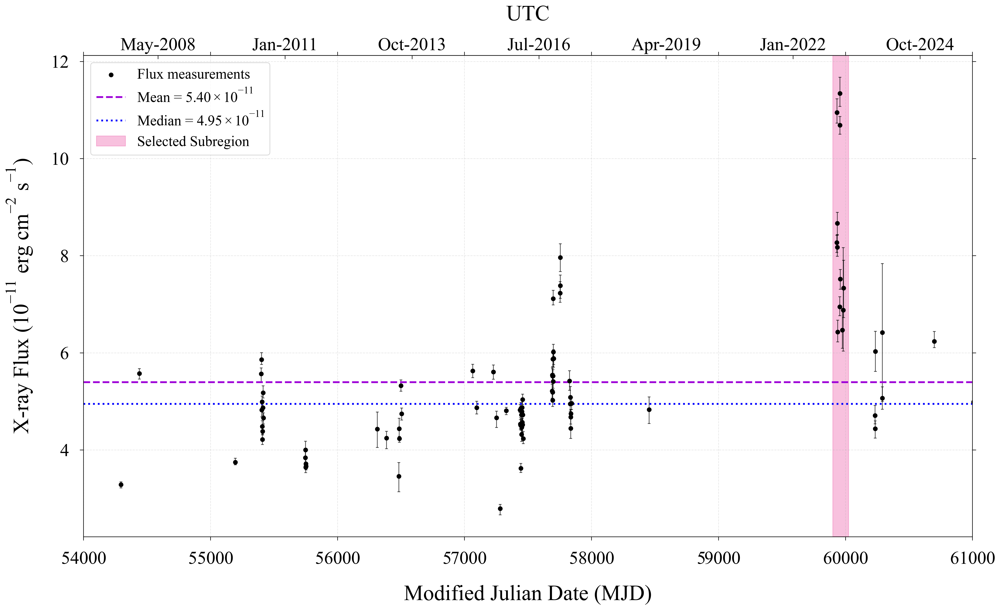
图注：NGC 1275 X-ray flux (in $\text{ erg cm}^{-2} \text{ s}^{-1}$) versus time (in MJD). $1\sigma$ flux errors are shown. The purple line corresponds to the mean flux value over this time period, and the blue line corresponds to the median flux during the same time period. The large flare around MJD 60000 is highlighted in pink.
对应解读：对应“建议重点查看的图表”第1项和“关键图表逐图导读”图1：长期 Swift X 射线光变曲线。
入选理由：这是论文最核心的长期时间域结果，直接展示约20年 Swift/XRT 扣除或建模 ICM 后的 NGC 1275 X射线通量、均值/中位数基线、1σ误差以及 MJD 60000 附近的大耀发。它最能支撑日报中关于2023年事件相对历史基线是否罕见、因子约2增强是否显著的解读。
来源与置信度：\(arxiv_source\)；high；\(arxiv_source\) / main.tex:figure[1]
Fig03
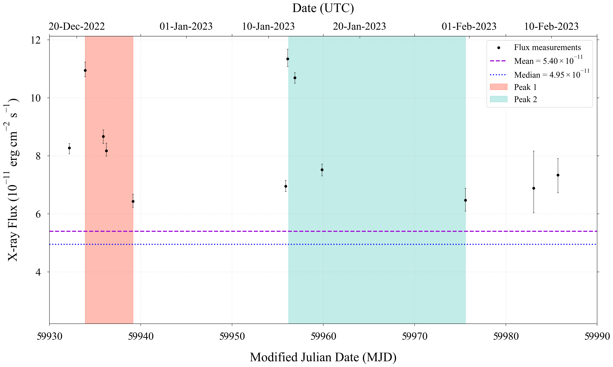
图注：Zoomed-in view of the peak at 60000 MJD highlighted in Fig. 1. The large peak at 60000 MJD is composed of two smaller subregions, which are highlighted in red and blue, respectively. Each of the two peaks was analyzed for similarities to the known behavior of a tidal disruption event. The highlighted regions span the maximum to minimum values of the decay regions of each peak. The graph still displays NGC 1275 X-ray flux (in $\text{ erg cm}^{-2} \text{ s}^{-1}$) versus time (in MJD). The purple line corresponds to the mean flux value, and the blue line corresponds to the median flux.
对应解读：对应“建议重点查看的图表”第2项和“关键图表逐图导读”图2：2023年耀发局部放大图。
入选理由：该图是 Fig01 中 MJD 60000 附近耀发的局部放大，并把大峰分解为两个子峰，直接用于判断天级/周级变化、峰值结构、误差相对耀发幅度是否足够小，以及由快速上升或衰减时标推导发射区尺度上限的可靠性。
来源与置信度：\(arxiv_source\)；high；\(arxiv_source\) / main.tex:figure[3]
Fig06
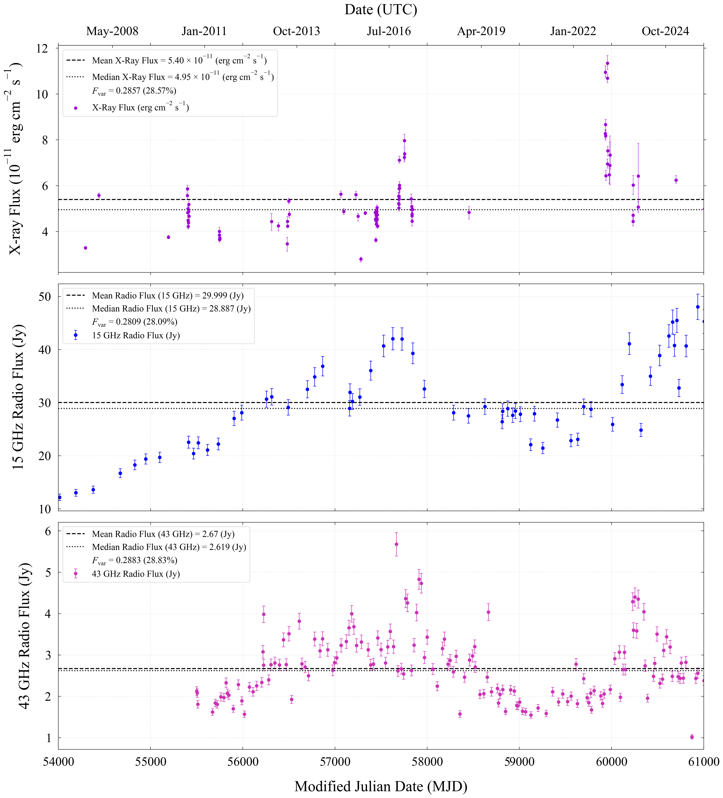
图注：The Swift/XRT, MOJAVE, and VLBA-BU-BLAZAR light curve of NGC~1275 over the same time span. The MOJAVE data are based on observations made using the VLBA at 15~Ghz \(\citep{lister2018}.\) The VLBA-BU-BLAZAR data is based on observations made using the VLBA at 43~GHz \(\citep{Weaver2022}.\) The X-ray and radio data have roughly the same fractional variability over similar time frames. The X-ray flare near to MJD 60000 does not have a clear counterpart in the radio data, but it is notable that contemporaneous radio flux points are below the local mean and median values. The subsequent increase in radio flux density over $\sim1000$~days could be tied to the X-ray flare, if the flare marked a sudden increase in the mass accretion rate onto the black hole that subsequently propagated into the jet.
对应解读：对应“建议重点查看的图表”第6、7项和“关键图表逐图导读”图5：X射线与15 GHz、43 GHz射电光变对比。
入选理由：这是唯一同时给出 Swift/XRT、MOJAVE 15 GHz 和 VLBA-BU-BLAZAR 43 GHz 光变的候选图，直接支撑日报关于盘—喷流连接、射电是否滞后于X射线耀发、射电采样和历史变率背景的讨论。虽然图注说明X射线耀发没有清晰的同步射电对应体，但后续约1000天射电增强仍是论文讨论喷流传播的关键证据。
来源与置信度：\(arxiv_source\)；high；\(arxiv_source\) / main.tex:figure[6]
Fig02
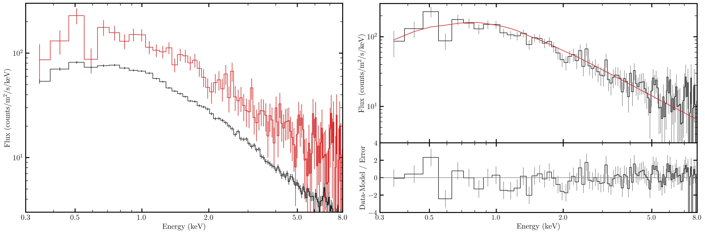
图注：Left: Swift/XRT spectra of the Perseus Cluster and NGC~1275, illustrating variability in the AGN. A time-averaged spectrum is shown in black. The brightest single observation is shown in red (ObsID 34765023). Right: The difference spectrum (ObsID 34765023 minus the time-averaged spectrum), fit with an absorbed $\Gamma = 1.7$ power-law over the band with sufficient signal.
对应解读：对应“建议重点查看的图表”第3项和“模型拟合”中关于 ICM 加 AGN 谱模型、连续谱增强和系统残差诊断的段落。
入选理由：该图展示 Swift/XRT 总谱、最亮单次观测谱以及最亮观测减去平均谱后的差分谱，并用吸收幂律拟合差分成分。它是候选图中最接近谱模型诊断的图，可检验耀发是否主要表现为AGN连续谱增强，而不是单纯热ICM谱线或软能段系统残差造成的假信号。
来源与置信度：\(arxiv_source\)；high；\(arxiv_source\) / main.tex:figure[2]
Fig04
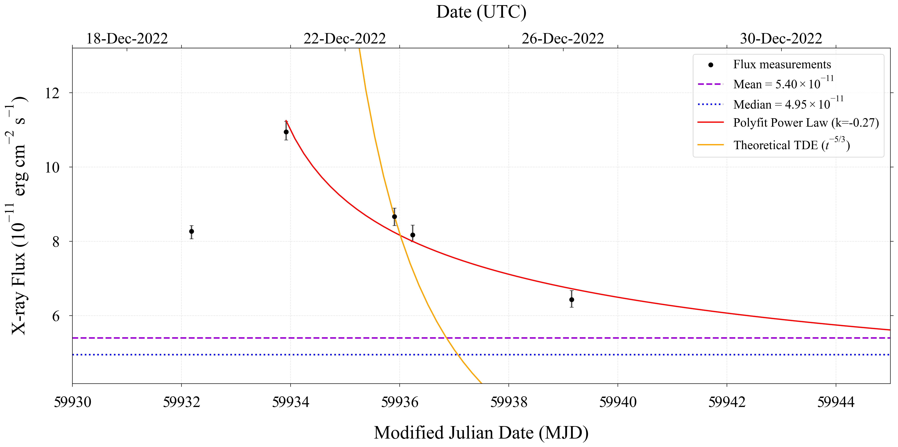
图注：Close-in look at the first subregion (the red region of Fig. 3) of the large flare (highlighted in Fig. 1). We attempted to fit the data as a tidal disruption event (TDE) by using a polyfit power law and comparing to a theoretical model. The red line corresponds to the calculated polyfit, and the orange line corresponds to the theoretical shape of the data if the data was a TDE. Notably, the fit to the data points within this peak does not resemble a TDE.
对应解读：对应“建议重点查看的图表”第5项和“关键图表逐图导读”图4：第一子峰的 TDE 模型比较。
入选理由：该图对 Fig03 中第一个耀发子峰进行 TDE 形状比较，包含数据的经验幂律拟合线和理论 TDE 衰减形状，直接支撑日报中‘简单TDE模型不能贴合耀发轮廓’的判断，尤其适合展示模型在局部峰形和衰减段上的不匹配。
来源与置信度：\(arxiv_source\)；high；\(arxiv_source\) / main.tex:figure[4]
Fig05
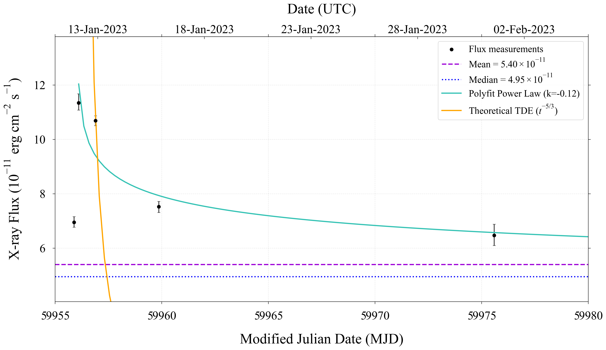
图注：Close-in look at the second subregion (the blue region of Fig. 3) of the large flare highlighted in pink in Fig. 1. We again attempted to fit the data as a TDE by using a polyfit power law and comparing to a theoretical model. The blue line corresponds to the calculated fit, and the orange line corresponds to the theoretical fit of the data if the data was a TDE. Once again, the fit to this peak does not resemble the theoretical decay pattern of a TDE.
对应解读：对应“建议重点查看的图表”第5项和“关键图表逐图导读”图4：第二子峰的 TDE 模型比较。
入选理由：该图对第二个耀发子峰重复 TDE 比较，补充说明不一致并非只出现在单个局部峰。它的科学信息与 Fig04 部分重复，但可增强论文关于两个子结构都不像简单TDE衰减模式的论证。
来源与置信度：\(arxiv_source\)；high；\(arxiv_source\) / main.tex:figure[5]
强相关工作
这篇工作属于 NGC 1275、Perseus A 和英仙座星团 AGN 反馈研究的同源延伸。应把它与 Chandra 对英仙座核心空洞、激波、涟漪和湍流限制的研究一起读，因为那些工作说明喷流确实能影响 ICM，但时间尺度偏长；本文则补上黑洞附近天到年尺度的输入端。检索关键词可用“NGC 1275 X-ray variability Swift”、“Perseus cluster AGN feedback cavities”、“Perseus A jet radio monitoring”和“NGC 1275 disk jet connection”。
在同类源层面，它也可与 M87、3C 84 和其他 brightest cluster galaxy 中央 AGN 的多波段监测比较。M87 的 X 射线和 TeV 活动常被用来讨论喷流基底和下游 knot 的关系；NGC 1275 则因为星团 X 射线背景更强、射电反馈更醒目而有不同挑战。相反观点或张力主要在于：X 射线耀发是否一定代表吸积盘扰动，还是可能来自喷流基底；约 \(300\) 天射电延迟是否是因果联系，还是射电源本身随机变率。检索关键词可用“AGN X-ray radio lag jet propagation”、“TDE in active galactic nuclei”和“3C 84 radio flare X-ray”。
同一事件 / 同类源线索：
- https://arxiv.org/abs/2608.13281
- https://simbad.cds.unistra.fr/simbad/sim-id?Ident=NGC%201275
- https://ned.ipac.caltech.edu/byname?objname=NGC%201275
相似工作：
（未提供）
基础理论 / 方法工作：
相反观点 / 张力线索：
（未提供）
4. The low luminosity end of Galactic HMXBs with eROSITA: Establishing a luminosity floor for accreting BeXRBs
- 来源：arXiv / astro-ph.HE
- 链接：https://arxiv.org/abs/2608.13259v1
- 作者：Aafia Zainab, Philipp Thalhammer, Nico Zalot, Artur Avakyan, Jakob Stierhof, Ekaterina Sokolova-Lapa, Victor Doroshenko, Victoria Grinberg
- 评分：novelty 7/10，importance 8/10，relevance 8/10，final 8.70/10
- 推荐理由：eROSITA首次系统延伸银河HMXB光度函数到低光度端，提出BeXRB低光度持续吸积可能普遍存在；对X射线双星种群和吸积物理较重要。
中文题目：用 eROSITA 探到银河系高质量 X 射线双星的低光度端：为吸积型 Be X 射线双星建立光度下限
做了什么：这篇文章利用 SRG/eROSITA 前四次全天巡天观测，重新审视银河系已知高质量 X 射线双星在低光度端的分布。eROSITA 的宽天区灵敏度约为 \(10^{-13}\,\mathrm{erg}\,\mathrm{s}^{-1}\,\mathrm{cm}^{-2}\)，对多数银河系 HMXB 等价于 \(10^{32}\) 到 \(10^{34}\,\mathrm{erg}\,\mathrm{s}^{-1}\) 的 X 射线光度范围，这是以往全天监视器难以系统覆盖的区间。作者给出延伸到 \(10^{32}\,\mathrm{erg}\,\mathrm{s}^{-1}\) 的 \(\log N-\log L\) 分布，并按超巨星 X 射线双星和 Be X 射线双星分型比较，同时重分析 RXTE/ASM 和 MAXI 数据作为高光度、长时标监测参照。核心结论是：大多数、超过 \(80\%\) 的已知 BeXRB 在非爆发期仍被 eROSITA 探测到，且光度至少比最亮的普通 Be 星预期高一个数量级，说明低水平吸积很可能是 BeXRB 的常态，而不是少数源的例外。
为什么重要：BeXRB 通常被称为瞬变源，因为传统全天监视器只在爆发时看见它们；但这可能主要是仪器灵敏度造成的选择效应。本文把样本整体推进到 \(10^{32}\,\mathrm{erg}\,\mathrm{s}^{-1}\) 量级后，直接检验“非爆发期是否真的关闭吸积”这个长期问题。若低光度吸积普遍存在，BeXRB 的占空比、质量转移、磁层截断、冷盘吸积和推进器机制的理论边界都需要重新标定。
理论 / 观测 / 仪器方法价值：对观测而言，本文提供了银河系已知 HMXB 在 eROSITA 灵敏度下的低光度端基准样本，并把 eROSITA 与 RXTE/ASM、MAXI 的选择函数差异放在同一框架比较。对理论而言，它把 BeXRB 的静默态光度分布与普通 Be 星冠层或风活动的 X 射线上限区分开来，为判断是否仍有中子星吸积提供了统计依据。对方法而言，论文强调同一源的本征变源性会显著拉宽 \(\log N-\log L\)，因此不能把单次低光度测量简单解释为固定种群函数。
为什么应该关注：如果你研究 HMXB 种群合成、Be 星盘物理、中子星磁层吸积或银河 X 射线源普查，这篇文章值得看，因为它把过去被监视器阈值遮住的“常态”光度区间系统打开了。它可能改变我们对 BeXRB 低态的默认图像：许多所谓瞬变系统也许不是在爆发外完全停吸积，而是在 \(10^{32}\) 到 \(10^{34}\,\mathrm{erg}\,\mathrm{s}^{-1}\) 之间持续低水平供给。
展开详细解读：文章讲解、背景、理论、重点章节、图表与相关工作
文章详细讲解
科学问题：高质量 X 射线双星，特别是 Be X 射线双星，长期被经验上分成爆发期和静默期。爆发期可由 RXTE/ASM、MAXI、Swift/BAT 等全天监视器捕捉；静默期则通常低于这些仪器的灵敏度，因此很多系统在爆发外是否仍在吸积并不清楚。本文的核心问题不是发现某一个新源，而是问：对已知银河系 HMXB 整体而言，低光度端的真实分布是什么？BeXRB 是否存在一个由持续吸积维持的光度下限？
作者怎么做：文章利用 SRG/eROSITA 前四次全天巡天数据，对已知银河系 HMXB 进行系统交叉匹配和光度估计。eROSITA 的巡天深度约为 \(10^{-13}\,\mathrm{erg}\,\mathrm{s}^{-1}\,\mathrm{cm}^{-2}\)，使许多源即使不在爆发期，也能在银河系尺度内被探测到。作者构建了延伸到 \(10^{32}\,\mathrm{erg}\,\mathrm{s}^{-1}\) 的 \(\log N-\log L\) 分布，并按源类型区分超巨星 X 射线双星和 BeXRB。为了避免把 eROSITA 的低态结果孤立看待，他们还重新分析 RXTE/ASM 与 MAXI 数据，比较长期监测器在较高光度端看到的分布。
关键结果：超巨星系统和 BeXRB 在光度分布中占据不同区域，这与供质方式不同相符：前者主要受强恒星风和轨道调制影响，后者则与 Be 星盘、中子星轨道穿盘、爆发占空比和磁层门控相关。最重要的统计结论是，大多数 BeXRB 在 eROSITA 低光度巡天中被探测到，且超过 \(80\%\) 的 BeXRB 光度比最明亮孤立 Be 星可能产生的 X 射线光度至少高一个数量级。因此，低态辐射更自然地解释为中子星仍在吸积，而不是普通 Be 星自身的 X 射线活动。
局限和下一步：本文研究的是已知 HMXB 样本，而不是完整的盲搜索银河 HMXB 种群；因此样本本身带有历史发现偏差，尤其偏向曾经爆发或较亮的系统。光度估计还依赖距离、吸收柱密度、谱型假设和巡天时相；BeXRB 的强变源性会让单次或少数次巡天光度偏离长期平均值。下一步需要用完整 eROSITA 巡天、更精细的能谱拟合、同源多历元光变曲线、Gaia 距离和光学 Be 星盘指标联合分析，区分冷盘吸积、推进器泄漏吸积、风吸积和 Be 星自身活动。
关键结果是怎么做出来的
本文最重要的证据链从样本定义开始：作者不是随机选取 X 射线点源，而是从已知银河系 HMXB 出发，利用 eROSITA 前四次全天巡天数据检查这些源在低光度状态下是否被探测到。这里的“事件数”不是瞬变爆发事件数，而是已知 HMXB 样本中各源在 eROSITA 巡天中的检测、非检测和光度分布计数。对 BeXRB 子样本，摘要给出的关键计数结果是超过 \(80\%\) 的源达到高于普通 Be 星 X 射线上限至少一个数量级的光度。
光度分布的支撑图应是扩展后的 \(\log N-\log L\) 图和按子类拆分的光度直方图或累积分布。读者需要注意作者是否使用同一能段、同一距离估计和同一吸收修正来换算光度。eROSITA 的低通量灵敏度把检测阈值压到 \(10^{32}\) 到 \(10^{34}\,\mathrm{erg}\,\mathrm{s}^{-1}\)，而 RXTE/ASM 与 MAXI 更适合约束较亮和爆发状态；三者合并时，选择函数不同是核心系统误差。
显著性或置信度在这类工作中通常不是单一的 \(5\sigma\) 新源发现，而是来自群体分布和阈值比较：如果 BeXRB 的低态光度系统性高于孤立 Be 星的 X 射线光度包络，并且这种差异对距离误差、吸收修正和谱型假设稳健，那么“存在吸积成分”的解释就比“全由 Be 星自身辐射贡献”更可信。本文的强陈述来自超过 \(80\%\) 的 BeXRB 落在该阈值之上，而非少数极端源。
模型比较的关键在于三类解释：普通 Be 星 X 射线活动、冷盘或低温吸积盘维持的低水平吸积、以及磁层推进器机制下仍有少量物质泄漏至中子星表面或磁极附近。若观测光度低于经典爆发但高于 Be 星本底，则低态吸积模型有优势；若某些源接近孤立 Be 星光度，则需要更谨慎，可能是非吸积、距离偏差或紧凑星伴星尚未确认。
稳健性检查应包括：改变谱模型后通量换算是否改变结论；采用不同距离估计后光度排序是否保持；去掉高吸收或拥挤银河面区域源后 \(\log N-\log L\) 是否仍有低光度平台；把 eROSITA 单次巡天光度与多次巡天平均或最大值比较后，超过 \(80\%\) 的结论是否仍成立。由于摘要强调本征变源性可导致大散布，读者尤其应检查论文中是否用多历元 eROSITA 点位而非单点来量化这种散布。
展开背景、理论、公式、模型、章节和图表导读
背景知识
高质量 X 射线双星由一颗紧凑天体，通常是中子星或黑洞，和一颗大质量伴星组成。银河系 HMXB 中最常见的子类之一是 BeXRB：伴星是快速旋转的 Be 星，周围有准开普勒赤道盘；中子星沿偏心轨道运动，在接近或穿过 Be 星盘时发生增强吸积，产生 X 射线爆发。
历史上，BeXRB 的认识强烈受全天监视器选择效应影响。RXTE/ASM、MAXI、Swift/BAT 等仪器擅长长期监测亮爆发，但对 \(10^{32}\) 到 \(10^{34}\,\mathrm{erg}\,\mathrm{s}^{-1}\) 的银河系低态源并不敏感。因此许多 BeXRB 被贴上“瞬变”标签，实际含义常常只是“爆发外低于监视器阈值”，而不等价于“完全没有吸积”。
低态吸积问题长期重要，因为它连接了 Be 星盘供质、中子星磁场、自转周期和磁层半径。若磁层半径超过共转半径，离心屏障可阻止物质落到中子星表面，即所谓推进器机制。但观测上不少源在理论上应进入推进器后仍有低水平 X 射线辐射，这提示可能存在冷盘吸积、磁层泄漏、不完全推进器或风吸积残余。
现在值得重新看，是因为 eROSITA 首次在全天巡天模式下达到过去需要指向观测才能获得的低通量深度。指向观测虽然灵敏，但样本选择通常偏向有趣源、近期爆发源或少数代表性系统；eROSITA 则能对已知银河系 HMXB 做更均一的低态普查。它填补的是宽天区和低光度之间长期缺失的参数空间。
该领域常见误区包括：把非探测当成无辐射，把 Be 星自身 X 射线活动和中子星吸积混为一谈，把单次观测光度当成长期平均吸积率，以及忽略距离误差和吸收柱密度对低能 X 射线通量的影响。本文的价值正是在群体层面降低这些误区的影响，但并不能完全消除历史样本选择和谱模型系统误差。
基础理论 / 方法脉络
基本物理图像是引力势能释放。若中子星从 Be 星盘或恒星风中捕获物质，物质最终在中子星表面、磁极柱或磁层边界释放能量，产生 X 射线。对典型中子星，单位质量释放的引力能远高于普通恒星磁活动或风碰撞，因此即使吸积率很低，也可能达到 \(10^{32}\) 到 \(10^{34}\,\mathrm{erg}\,\mathrm{s}^{-1}\)。
BeXRB 的供质不是稳定 Roche-lobe overflow，而主要与 Be 星赤道盘和偏心轨道相互作用有关。爆发期光度高，可能对应中子星经过盘密度高区域或形成暂态吸积盘；低态则可能由稀薄盘尾、风成分或残余冷盘供给。冷盘吸积模型强调，在光度低到盘无法保持充分电离时，盘的黏滞性质和截断半径改变，可能允许低水平、较稳定的吸积继续存在。
推进器机制的关键量是磁层半径和共转半径。磁层半径由磁压与吸积流动压平衡决定；共转半径由中子星自转角速度与开普勒角速度相等决定。如果磁层半径大于共转半径，磁场线在局部转得比开普勒物质快，物质可能被甩出，表面吸积受抑制。但实际系统可能存在部分泄漏、各向异性、非稳态盘和磁场几何复杂性。
本文的观测逻辑是把 eROSITA 测得的计数率或通量转换为源光度，再与普通 Be 星 X 射线光度包络和 HMXB 子类分布比较。关键量包括通量 \(F_X\)、距离 \(d\)、吸收修正后光度 \(L_X\)、检测阈值、能段差异、源分类和多历元变幅。常见退化包括：较高吸收会让软 X 射线通量低估；距离误差按 \(d^2\) 放大到光度；假设谱型不同会改变计数率到通量的转换；拥挤银河面可能带来源混淆或背景估计偏差。
公式与推导
第一步从吸积能量释放开始。若质量吸积率为 \(\dot M\)，中子星质量和半径为 \(M_{\rm NS}\) 与 \(R_{\rm NS}\)，则表面吸积光度近似为
这里 \(G\) 是引力常数，\(\eta\) 表示辐射效率和几何修正。该式说明即使 \(\dot M\) 很低，中子星深引力势也能产生可观的 \(L_X\)。
观测上由通量换算光度，若吸收修正后的能段通量为 \(F_X\)，距离为 \(d\)，各向同性近似下
该式是本文建立低光度 \(\log N-\log L\) 的核心换算。其主要系统误差来自 \(d\)、吸收修正和谱模型，而不是计数统计本身。
巡天灵敏度给出可探测的最低光度。若通量阈值为 \(F_{\rm lim}\)，则距离 \(d\) 处的光度阈值为
取 \(F_{\rm lim}\sim10^{-13}\,\mathrm{erg}\,\mathrm{s}^{-1}\,\mathrm{cm}^{-2}\) 时，银河系内不同距离的 HMXB 会对应 \(10^{32}\) 到 \(10^{34}\,\mathrm{erg}\,\mathrm{s}^{-1}\) 的阈值范围。
从计数到通量需要仪器响应。若能谱光子通量为 \(S(E)\)，有效面积为 \(A_{\rm eff}(E)\)，曝光为 \(T\)，背景计数为 \(B\)，则期望源计数近似为
实际分析还要加入能量响应矩阵和点扩散函数；该式帮助理解为什么软能段吸收和谱型假设会影响 eROSITA 的通量估计。
若观测总计数为 \(C\)，背景期望为 \(B\)，简单泊松似然可写为
检测显著性、上限和通量误差都可从这类泊松统计或其推广形式得到。低计数源不能简单使用高斯误差。
\(\log N-\log L\) 的累积分布可表示为
其中 \(H\) 是阶跃函数，\(L_i\) 是第 \(i\) 个源的光度。若考虑未探测源或上限，应使用生存分析或把检测概率 \(p_i(L)\) 纳入分布估计。
推进器边界由磁层半径和共转半径比较给出。磁层半径量级为
其中 \(\mu\) 是磁偶极矩，\(\xi\) 是几何因子。吸积率越低，\(r_{\rm m}\) 越大。
共转半径为
其中 \(P_{\rm s}\) 是中子星自转周期。当 \(r_{\rm m}>r_{\rm co}\) 时进入推进器条件，表面吸积应受抑制；当 \(r_{\rm m} 把 \(r_{\rm m}=r_{\rm co}\) 与吸积光度关系联立，可得到推进器临界光度的尺度关系 这说明同样的低态光度在不同自转周期和磁场强度的 BeXRB 中物理含义不同：有些可能仍处于直接吸积，有些可能是推进器泄漏或磁层辐射。 本文这类工作首先要拟合或假设每个源的 X 射线谱模型，把 eROSITA 计数率转换为能段通量。低计数源通常难以逐个做复杂能谱拟合，因此常采用典型 HMXB 谱型、吸收柱密度估计或分组谱模型。拟合量包括通量、吸收修正通量、光度和不确定度；残差主要体现在计数谱与响应卷积模型的偏差，以及源位置附近背景是否被正确估计。 参数估计的统计基础多为泊松似然或 Cash statistic，而不是简单 \(\chi^2\)，特别是在低光度端。若源很弱，应该同时报告检测显著性或上限。对于未探测源，不能把光度设为零；应使用上限参与 \(\log N-\log L\) 或检测分数分析，否则会人为抬高或压低低光度端。 主要退化关系包括 \(N_{\rm H}\) 与软能段通量、谱斜率与通量换算、距离与光度、源混淆与背景、以及巡天采样相位与真实长期平均光度。BeXRB 本身变幅大，eROSITA 四次巡天给到的是几个离散时刻；若某源恰好处于低级别活动或小爆发尾端，单点光度不能代表“地板”。因此本文强调散布本身就是结果的一部分。 群体模型方面，可以把 BeXRB 和 SgXB 分别拟合为不同的光度分布，例如对数正态、幂律截断或混合模型。真正需要比较的是低态 BeXRB 分布是否显著高于孤立 Be 星 X 射线分布，以及是否在某一范围出现积累或平台。若存在平台，可解释为低水平吸积地板；若只是检测阈值附近堆积，则可能是选择效应。 实际应用上，这套拟合框架可用于 HMXB 种群合成校准、银河 X 射线背景源预算、未来 eROSITA 或 Athena 源表分类，以及寻找“孤立 Be 星”样本中的隐藏紧凑伴星。模型失败的典型情形是：源分类错误、距离严重错误、强吸收导致软 X 射线漏检、或者低光度辐射并非吸积而来自 Be 星异常磁活动或伴星混淆。 数据和样本部分应首先读。重点看作者采用哪个已知 HMXB 目录、如何处理源位置交叉匹配、是否排除混淆源、如何区分 BeXRB、SgXB 和其他 HMXB。这里决定了 \(\log N-\log L\) 的母样本，历史发现偏差也主要隐藏在这里。 eROSITA 数据处理和通量换算部分是第二个重点。读者应检查巡天次数、曝光分布、能段选择、背景处理、检测阈值、计数率到通量的转换因子，以及对吸收和谱型的处理。对银河面源而言，这些技术细节会直接影响 \(10^{32}\,\mathrm{erg}\,\mathrm{s}^{-1}\) 量级结论。 光度分布结果部分是全文核心。应重点阅读整体 HMXB 的 \(\log N-\log L\)、按 SgXB 和 BeXRB 分型后的分布，以及多历元 eROSITA 光度散布。作者关于本征变源性会拉宽分布的论点，通常会在这些图或表中体现。 与 RXTE/ASM 和 MAXI 的比较部分用于理解选择函数。读者不要把 eROSITA、ASM、MAXI 的非同时光度直接当成同一物理状态，而应看作者如何用它们分别代表低态巡天深度和长期监测亮态行为。 讨论部分应关注三件事：BeXRB 低态是否普遍吸积、冷盘吸积与推进器机制如何解释观测光度、以及“孤立 Be 星”中是否存在隐藏紧凑伴星候选。最后还应看附录或稳健性检验中距离、谱型、非检测上限和源分类对结论的影响。 整体 HMXB 的 \(\log N-\log L\) 累积分布：看低光度端是否真实延伸到 \(10^{32}\,\mathrm{erg}\,\mathrm{s}^{-1}\)，以及是否有阈值造成的弯折。 按子类拆分的光度分布图：比较 SgXB 与 BeXRB 的分布峰值、低光度尾和重叠区域，判断不同供质机制是否被观测区分。 eROSITA 与 RXTE/ASM、MAXI 的光度或检测率比较图：看不同仪器的灵敏度和时间采样如何改变“瞬变”判定。 BeXRB 低态光度相对普通 Be 星 X 射线上限的图：这是超过 \(80\%\) 结论的关键，应检查阈值线、误差条和距离不确定度。 多历元光变或光度散布图：看同一源在四次 eROSITA 巡天中的变幅，避免把单历元光度误认为地板。 非检测和上限表：低光度端结论同样依赖未探测源的处理方式，应检查上限是否足够深以及是否集中在高吸收或远距离源。 候选“孤立 Be 星”高 X 射线光度对象列表：看其光度是否真的接近低光度 BeXRB，是否有位置重合、光学分类或 Gaia 距离问题。 图 1：预期应是银河系已知 HMXB 在天空中的分布或样本概览。横纵坐标可能为银经和银纬，符号颜色区分 BeXRB、SgXB 和其他类型。读图时要注意银河面拥挤区和高吸收区，因为这些区域的 eROSITA 软 X 射线探测效率较低，非检测不一定代表低光度。 图 2：核心图很可能是整体 \(\log N-\log L\) 累积分布。横轴为 \(L_X\)，纵轴为高于该光度的源数 \(N(>L_X)\)。数据点或阶梯线显示 eROSITA 扩展出的低光度端，可能还叠加 ASM/MAXI 的分布。读图陷阱是把低端弯折直接解释为物理截断；它也可能来自距离相关阈值和非检测上限。 图 3：按子类型拆分的光度分布。横轴为 \(L_X\)，纵轴为源数、概率密度或累积分数，颜色区分 SgXB 和 BeXRB。若 BeXRB 在 \(10^{32}\) 到 \(10^{34}\,\mathrm{erg}\,\mathrm{s}^{-1}\) 有大量检测，而 SgXB 分布不同，就支持供质机制差异。需注意样本量不均衡和源分类不确定性。 图 4：多仪器比较图。横轴可能为源名、eROSITA 光度或时间，纵轴为 ASM/MAXI 与 eROSITA 推得的光度或检测率。模型线或阈值线代表各仪器灵敏度。关键是看过去被称为静默的 BeXRB 是否只是低于 ASM/MAXI 阈值，而非低于 eROSITA 阈值。 图 5：BeXRB 与孤立 Be 星光度比较图。横轴可能为源类别或距离，纵轴为 \(L_X\)。图中应有表示普通 Be 星最高 X 射线光度的参考线；多数 BeXRB 位于该线以上至少一个数量级，是本文论证低态吸积普遍性的关键。读图时要看误差条是否可能跨过该参考线。 图 6：理论解释或相图，可能展示 \(L_X\)、自转周期、磁场或推进器临界线。横轴可能为 \(P_{\rm s}\) 或 \(\dot M\)，纵轴为 \(L_X\) 或半径比 \(r_{\rm m}/r_{\rm co}\)。如果存在这样的图，读者应检查低态 BeXRB 落在直接吸积、冷盘吸积还是推进器区间；但不要过度解读，因为磁场和几何因子通常未知。模型拟合 / 应用方法
重点章节 / 结果段落怎么读
建议重点查看的图表
关键图表逐图导读
论文原图 / 可嵌入图片
Fig04
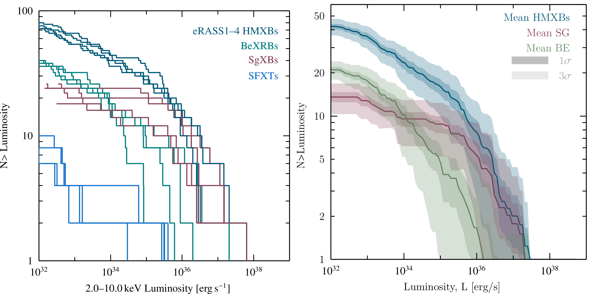
图注：\(\textbf{Left:}\) The \(\lognl\) distributions of HMXBs and their subclasses as detected by \(\ero\) in eRASS1 to eRASS4, multiplied by 2 to project to the whole sky. The subclasses show marked variability in eRASS1--4, depending on the flaring states of individual sources. \(\textbf{Right:}\) The fits to eRASS1--4 data of the HMXB sample, as well as the BeXRB and SgXB subclass samples, shown along with 1000 iterations of \(\lognl\) distributions computed by sampling randomly from an eRASS observation for each source. The intrinsic source variability results in significant scatter of the overall HMXB distribution, while there is an evident distinction in the luminosity range occupied by BeXRBs and SgXBs.
对应解读：对应“整体 HMXB 的 log N-log L 累积分布”“按子类拆分的光度分布图”以及关键图表导读中的图2、图3。
入选理由：这是本文最核心的群体结果图，直接展示 eRASS1--4 的 HMXB、BeXRB、SgXB 光度累积分布，并包含随机抽样体现的源内禀变光散布；同时给出 BeXRB 与 SgXB 所占光度范围的差异，比单纯样本概览或通量分布更能支撑低光度端和子类差异的解读。
来源与置信度：\(arxiv_source\)；high；\(arxiv_source\) / main.tex:figure[4]
Fig06
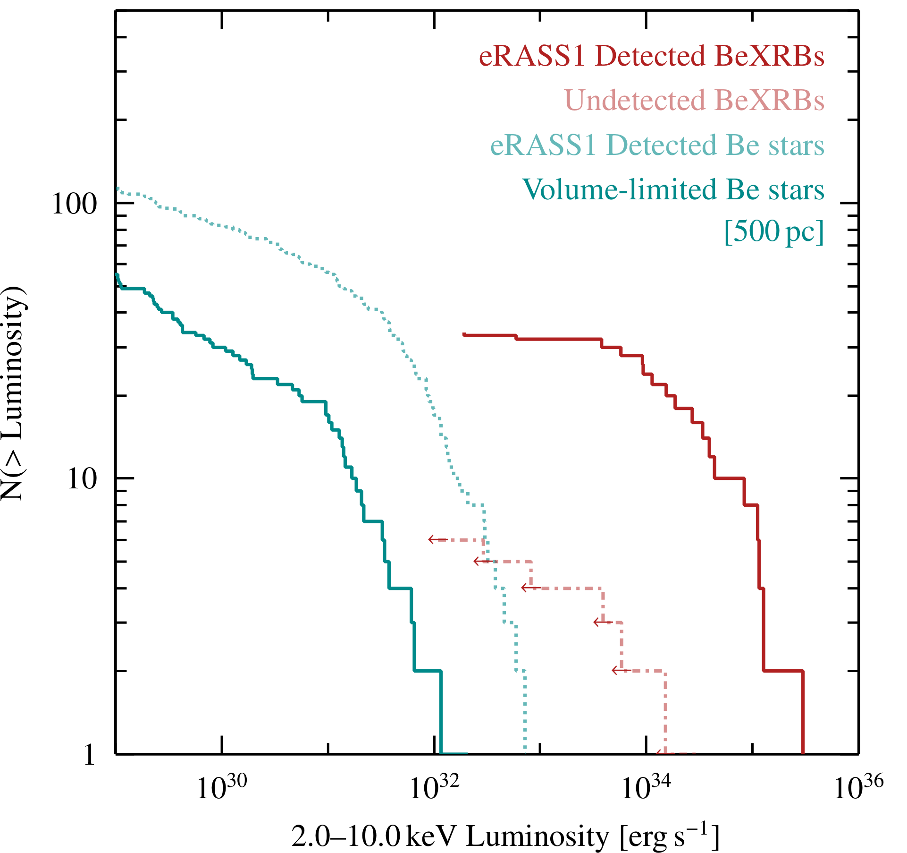
图注：\(\ero\) \(\lognl\) distributions of BeXRBs (red) shown alongside that of Be stars (teal), using eRASS1 as a representative case. A volume-limited sample of Be stars within 500\,pc (teal, dashed) is also shown in lieu of a volume-corrected distribution. BeXRBs are evidently detected at higher luminosity by at least an order of magnitude compared to the volume-limited isolated Be star sample. The luminosity upper limits on the BeXRBs not detected in any eRASS (red, dashed) are also in excess of the volume-limited sample. There is however, a region of overlap between the least luminous BeXRBs and the most luminous Be stars.
对应解读：对应“BeXRB 低态光度相对普通 Be 星 X 射线上限的图”和关键图表导读中的图5。
入选理由：这张图直接支撑论文最重要的结论之一：多数 BeXRB 的低态 X 射线光度比孤立 Be 星高至少一个数量级，并且同时展示未探测 BeXRB 的上限和与最亮 Be 星的重叠区域，是判断低态吸积是否普遍存在的关键证据。
来源与置信度：\(arxiv_source\)；high；\(arxiv_source\) / main.tex:figure[6]
Fig05
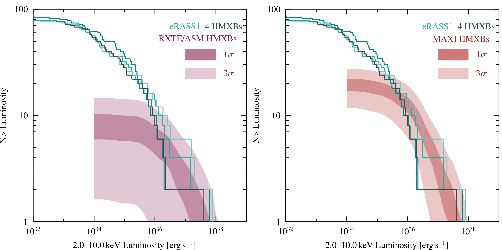
图注：\(\rxte/ASM\) (left) and \(\maxi\) (right) \(\lognl\) taking variability into account by random sampling from the monitoring lightcurves of each source, along with the eRASS1--4 distributions. \(\rxte/ASM\) is sensitive up to $10^{36}\,\mathrm{erg}\,\mathrm{s}^{-1}$, while \(\maxi\) reaches a few $10^{35}\,\mathrm{erg}\,\mathrm{s}^{-1}$. Both are consistent with the \(\ero\) distribution above this threshold. The large variance of the HMXB \(\lognl\) distribution is evident in both cases.
对应解读：对应“eROSITA 与 RXTE/ASM、MAXI 的光度或检测率比较图”和关键图表导读中的图4。
入选理由：该图把 RXTE/ASM、MAXI 的 log N-log L 分布与 eROSITA 结果并列比较，并明确显示 ASM/MAXI 只能到约 10^36 或数 10^35 erg/s，能够解释许多 BeXRB 过去被称为静默或瞬变是由监测器灵敏度限制造成的。
来源与置信度：\(arxiv_source\)；high；\(arxiv_source\) / main.tex:figure[5]
Fig08
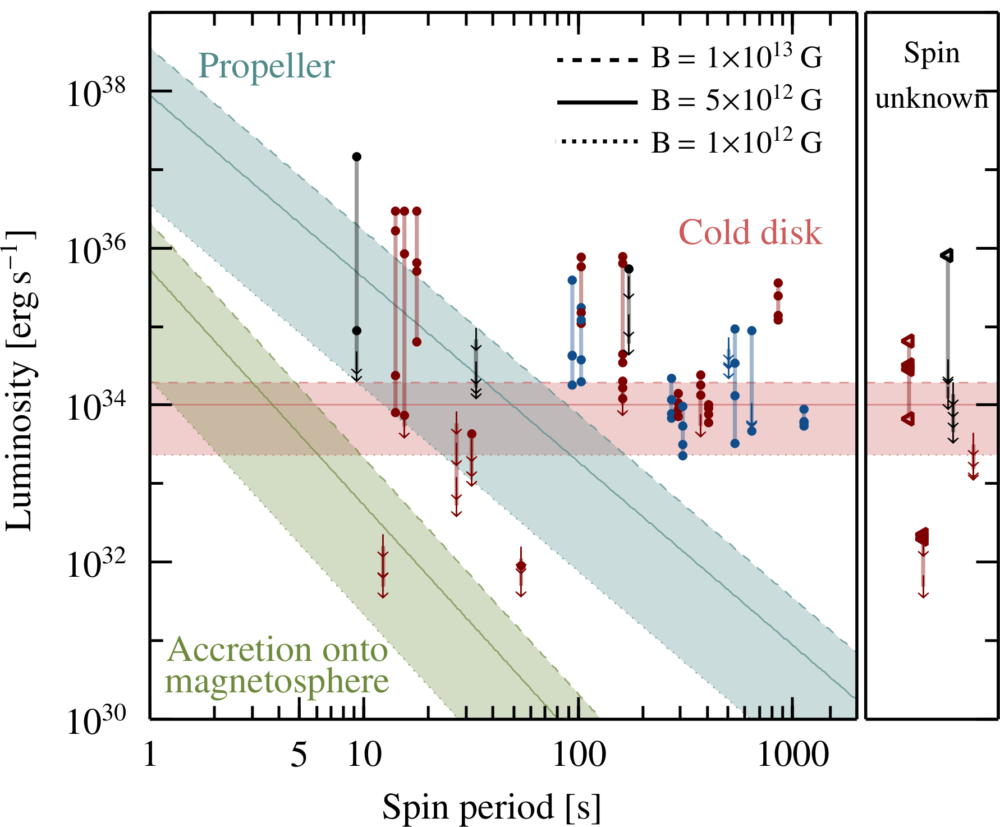
图注：Luminosities and NS spins of Galactic BeXRBs. Points from each eRASS scan are connected for readability. A separate panel shows luminosities of systems without a known spin period. The transition luminosities towards cold disk accretion according to \(\citet\)[][salmon]{tsygankov2017} and into propeller regime \(\citep\)[][teal]{illarionov1975} are shown for a range of $B$-fields, as well as the minimum luminosity that can be expected from accretion onto the magnetosphere \(\citep\)[][olive green]{corbet1997}. Sources without known spin periods are indicated as triangles or arrows on the right, depending on if they are detected or not detected in eRASS1--4. The maroon data points correspond to eRASS1--4 detections of sources with no confirmed hard X-ray emission, while the dark blue data points are confirmed to show hard X-rays by \(\nustar\) \(\citep\)[][and references therein]{zalot2026}. We observe most BeXRBs straddling the cold disk regime, several that are often detected around the propeller limit and above the estimates for emission due to accretion onto the magnetosphere, and a few that go mostly undetected and have upper limits below $10^{33}\mathrm{erg}\,\mathrm{s}^{-1}$.
对应解读：对应关键图表导读中的图6，以及理论解释段落中关于冷盘吸积、推进器机制和磁层吸积下限的讨论。
入选理由：该图把 BeXRB 的 eRASS 光度与中子星自转周期放在同一相图中，并叠加冷盘吸积、推进器临界线和磁层吸积最低光度等理论边界，是连接观测低光度地板与物理吸积机制的最重要图。
来源与置信度：\(arxiv_source\)；high；\(arxiv_source\) / main.tex:figure[8]
Fig03
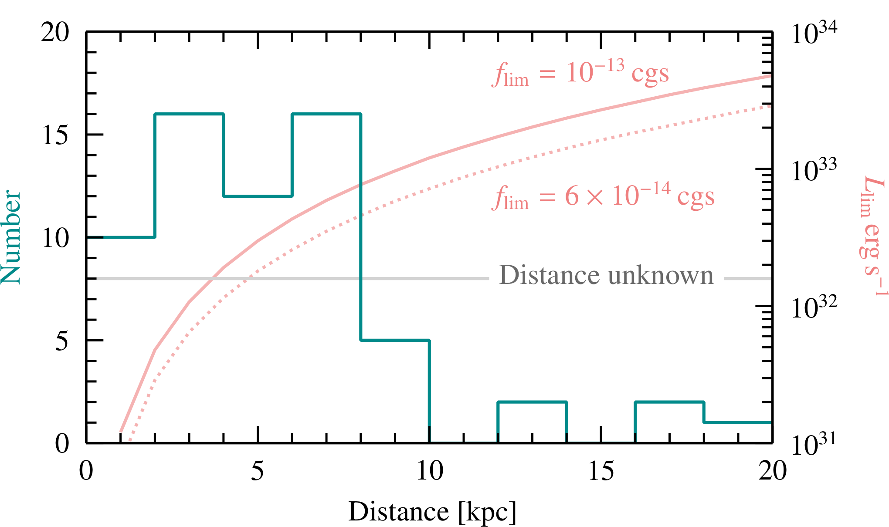
图注：Left hand axis and histogram: Number of sources in a given distance range (teal) and number of sources with unknown distances (grey). Right hand axis: Limiting luminosity to which \(\ero\) is complete within a sensitivity limit of $10^{-13}\mathrm{erg}\,\mathrm{s}\,\mathrm{cm}^{-2}$ marked for the 0.2--10.0\,keV (solid) and the 0.2--2.3\,keV (dashed) bands. \(\ero\) is complete down to a 0.2--10.0\,keV luminosity of $10^{33}\,\mathrm{erg}\,\mathrm{s}^{-1}$ within $\sim10\,\mathrm{kpc}$.
对应解读：对应“整体 HMXB 的 log N-log L 累积分布”中关于低光度端完整性、阈值弯折和距离选择效应的检查。
入选理由：这张图给出样本距离分布以及 eROSITA 在不同距离处对应的完整性光度下限，能直接检验 10^32--10^33 erg/s 低光度端是否受灵敏度、距离和未知距离源影响，是避免把观测阈值误解为物理截断的关键辅助图。
来源与置信度：\(arxiv_source\)；high；\(arxiv_source\) / main.tex:figure[3]
Fig11
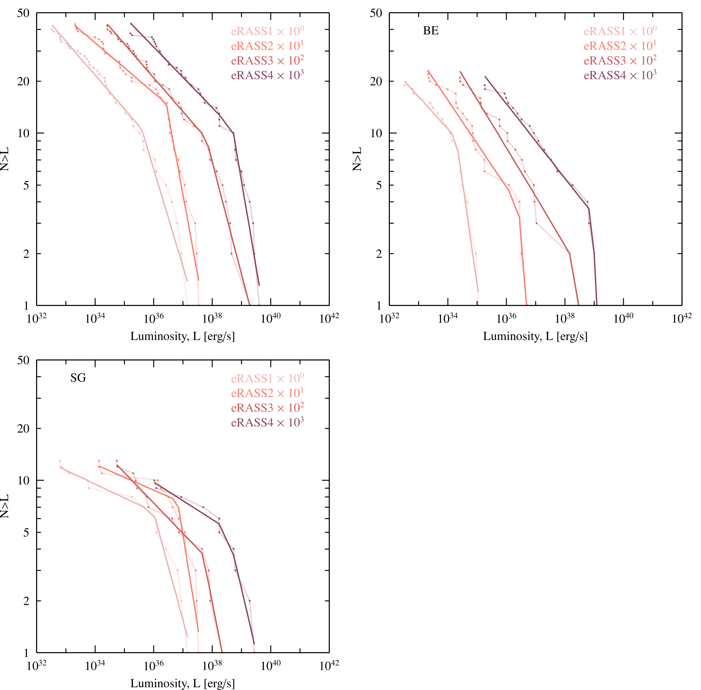
图注：Results of broken power law fits to the eRASS1--4 luminosity distributions of HMXBs (left), BeXRBs (middle) and SgXBs (right). The luminosities in the eRASS2--4 distributions are multiplied by an order of magnitude each, for clarity.
对应解读：对应模型拟合段落中关于 HMXB、BeXRB、SgXB 光度分布的群体拟合，以及低光度端是否存在弯折或平台的讨论。
入选理由：该图展示 HMXB、BeXRB 和 SgXB 在 eRASS1--4 光度分布上的 broken power-law 拟合结果，可用于检查低光度端斜率变化是否需要物理解释，或是否可能只是统计与选择效应；它比单源谱拟合图更贴合日报的群体分布解读。
来源与置信度：\(arxiv_source\)；high；\(arxiv_source\) / main.tex:figure[11]
强相关工作
这篇工作与 BeXRB 综述、银河 HMXB 目录和低光度中子星吸积理论直接相关。同类观测包括 RXTE/ASM、MAXI、Swift/BAT 对 BeXRB 爆发和长期光变的监测，以及 Chandra、XMM-Newton、NuSTAR 对个别 BeXRB 静默态的指向观测。建议检索关键词包括 “Be X-ray binary quiescence”, “eROSITA HMXB”, “low luminosity BeXRB”, “cold disk accretion neutron star”, “propeller regime BeXRB”。
理论联系主要在推进器机制、磁层半径、冷盘吸积和 Be 星盘供质。相反或需谨慎的观点是：某些低光度 X 射线辐射可能来自 Be 星本身、未解析邻近源、背景 AGN 或距离误差造成的光度高估；此外，已知 HMXB 样本不是无偏银河样本，不能直接推出真实银河 HMXB 总数。读者应把本文看作对“已知 BeXRB 低态是否普遍发光”的强约束，而不是完整种群合成的最终答案。
同一事件 / 同类源线索：
相似工作：
基础理论 / 方法工作：
- https://ui.adsabs.harvard.edu/abs/1975A%26A....39..185I/abstract
- https://ui.adsabs.harvard.edu/abs/1986MNRAS.220.1047S/abstract
相反观点 / 张力线索：
（未提供）
5. 3D Radiative Transfer of Lyman-series Lines with SKIRT
- 来源：arXiv / astro-ph.HE
- 链接：https://arxiv.org/abs/2608.12527v1
- 作者：N. Sameshima, A. Lauwers, B. Vander Meulen, M. Tsujimoto, L. -Y. Gu, M. Baes, P. Camps
- 评分：novelty 8/10，importance 7/10，relevance 8/10，final 8.65/10
- 推荐理由：将SKIRT扩展到X射线H样离子Lyman线3D辐射转移、共振散射和偏振，面向XRISM/IXPE时代致密天体光电离等离子体诊断；可复用方法价值较高。
中文题目：用 SKIRT 做莱曼系谱线的三维辐射转移
做了什么：这篇论文把三维蒙特卡罗辐射转移程序 SKIRT 扩展到 X 射线光电离等离子体中的类氢离子莱曼系谱线，覆盖 \(Z=1\)--\(30\)、最高到 \(n=10\) 的跃迁，并加入精细结构、共振散射线偏振以及辐射复合产生的线光子。作者用解析极限和 Cloudy 结果做验证，然后展示三维几何、各向异性照明和速度场如何改变莱曼系线比、线型和偏振。核心结论是：在 XRISM 和 IXPE 能测到的高分辨谱线与偏振信号里，一维模型容易把几何和运动学效应误读成电离态或丰度变化；三维辐射转移能直接把这些效应纳入拟合。
为什么重要：紧凑天体周围的盘风、照射气体、双锥外流和吸积盘大气通常不是一维球对称结构。XRISM 的高分辨 X 射线谱和 IXPE 的偏振观测正在把问题从“有没有谱线”推进到“线型、线比、速度场和几何是什么”。如果解释工具仍停留在一维或逃逸概率近似，就会低估共振散射、遮挡、速度梯度和非各向同性照明带来的系统误差。
理论 / 观测 / 仪器方法价值：方法价值在于把类氢离子莱曼系的原子跃迁、共振散射、复合线发射和线偏振放进成熟的三维蒙特卡罗框架 SKIRT 中，使 X 射线再处理问题可与尘埃、连续谱、复杂几何和任意速度场一起处理。对观测而言，它给 XRISM 谱线诊断和 IXPE 偏振诊断提供了可前向建模的工具；对理论而言，它能检验一维 Cloudy/XSTAR 类模型在非球对称介质中的适用边界。
为什么应该关注：如果你研究 X 射线双星、活动星系核、超软源、吸积盘风、光电离外流或高分辨 X 射线谱，这篇文章值得关注，因为它针对的是未来几年数据解释中最容易被忽略的误差源：几何和辐射转移。它不是报告某个源的新发现，而是提供一种可复用的建模能力，帮助判断观测到的莱曼系线比和 P Cygni 线型究竟来自电离结构、柱密度、速度场，还是来自三维遮挡和散射。
展开详细解读：文章讲解、背景、理论、重点章节、图表与相关工作
文章详细讲解
科学问题：类氢离子莱曼系谱线是 X 射线光电离等离子体中最常用的诊断之一，尤其是氧、氖、镁、硅、硫、铁等离子的 \(1s\rightarrow np\) 共振跃迁。传统 X 射线光电离建模常把局部离子平衡和辐射场计算得很细，但在几何上经常采用一维 slab、球壳或逃逸概率近似。这对低光谱分辨率数据可能够用；但在 XRISM 时代，线心位移、非对称线翼、P Cygni 吸收与发射组合、不同视线角的线比变化都会进入可观测范围。一维模型很难回答：同一个电离参数和柱密度，在盘风、双锥、团块介质或各向异性照明下会不会给出完全不同的线型。
作者怎么做：论文把 SKIRT 这一本来以三维蒙特卡罗辐射转移见长的程序扩展到 X 射线类氢离子莱曼系。实现内容包括 \(Z=1\)--\(30\) 的类氢离子、最高 \(n=10\) 的莱曼系跃迁、精细结构分裂、共振散射中的线性偏振，以及两类线光子来源：第一类是入射连续谱或线光子被离子共振散射后再发射，第二类是自由电子与裸核或高电离态离子辐射复合后级联产生莱曼线。蒙特卡罗光包在三维网格中传播，按照局部离子密度、速度场、截面和发射率抽样相互作用，并记录逃逸方向上的谱线和偏振。
关键结果：作者先用解析预期检查基本过程，例如光学薄极限下的线强、散射角分布和偏振行为；再与 Cloudy 这类成熟光电离代码比较，确认在接近一维或局部近似成立的场景下，SKIRT 的莱曼系发射与线比没有明显偏离。随后他们展示三维辐射转移特有的效应：光学厚介质中共振线会出现线型扭曲和多次散射造成的方向依赖；带有径向速度或外流速度场的介质能自然产生 P Cygni 型轮廓；各向异性照明会改变不同方向逃逸的莱曼系线比。这些不是后处理修正，而是在光子传播中自洽产生。
局限和下一步：这篇文章主要是方法论文，而非对某个真实天体的完整拟合。它的物理完整性仍取决于输入的离子分布、温度结构、速度场和照射谱；如果这些来自外部一维光电离平衡或参数化模型，那么三维辐射转移虽然更真实，但还不是完整的辐射流体解。下一步最自然的是把该模块用于具体 XRISM 光谱和 IXPE 偏振数据，尤其是盘风和活动星系核暖吸收体；同时也需要与 XSTAR、SPEX、Cloudy 以及辐射流体模拟输出做系统交叉检验，量化在何种柱密度、速度梯度和覆盖因子下，一维解释会显著偏差。
关键结果是怎么做出来的
本文最重要的证据链不是某个单一观测样本，而是代码实现与验证链条。作者选择的“样本”是一组受控物理测试：类氢离子莱曼系跃迁覆盖 \(Z=1\)--\(30\)、最高主量子数 \(n=10\)，并在不同光学深度、几何、速度场和照明方式下生成模拟谱线。关键是这些测试既包含解析可解的极限，也包含可与 Cloudy 比较的一维或准一维情形，还包含 Cloudy 这类常规一维模型难以直接处理的三维情形。
验证的第一层是原子与散射物理。对于共振散射，代码必须在给定离子柱密度、振子强度和速度展宽时重现实验或解析预期的线中心光学深度，并在散射角分布中给出正确的线性偏振依赖。对于辐射复合，代码必须把复合到不同能级后的级联贡献正确分配到莱曼系各条线中。论文通过与解析计算和 Cloudy 结果比较来证明实现没有明显归一化错误或线比错误。
结果的第二层是辐射转移效应。作者展示了在光学厚介质中，莱曼系线比不再只是局部发射率比值，而会被共振俘获、多次散射、逃逸方向和速度梯度改变。P Cygni 轮廓是特别重要的诊断：蓝移吸收来自视线方向外流气体对背景连续谱的吸收，红侧或近系统速度的发射来自离开视线方向的再发射。这个线型在蒙特卡罗传播中自然出现，因此比人工叠加吸收线和发射线更适合解释高分辨谱。
统计显著性方面，作为方法论文它不是用某个观测事件给出 \(5\sigma\) 探测，而是通过模型间可分辨性来论证观测价值。作者强调 XRISM 的能量分辨率足以分辨由三维速度场和光学深度造成的线型差异，因此应检查模拟谱经过仪器响应卷积后，残差是否仍可观测。若论文中的图表包含 Cloudy 对比、线轮廓随视角变化、线比随几何或速度场变化的面板，这些就是支撑结论的关键图。
主要系统误差来自四个层面：原子数据，包括振子强度、能级和复合级联概率；输入等离子体结构，包括电离态、电子温度和密度；几何与速度场参数化，包括覆盖因子、团块化和湍流展宽；仪器响应，包括 XRISM 的线扩散函数和有效面积。稳健性检验应关注在改变网格分辨率、光包数、速度展宽、视角采样和输入离子分布后，线比与线型是否收敛。
展开背景、理论、公式、模型、章节和图表导读
背景知识
研究对象是光电离等离子体中的类氢离子莱曼系线。所谓类氢离子，是只剩一个束缚电子的离子，其能级结构相对简单，跃迁能量随核电荷大致按 \(Z^2\) 缩放。在 X 射线波段，常见的 O VIII、Ne X、Mg XII、Si XIV、S XVI、Fe XXVI 等离子的莱曼线可用于测量电离态、柱密度、速度、湍流和辐射场形状。
历史上，X 射线光电离谱的解释高度依赖一维模型和表格化光电离代码。Cloudy、XSTAR、SPEX 等工具对离子平衡、热平衡和原子过程非常强，但常见应用场景是 slab、球壳或若干吸收区叠加。这样的模型方便拟合数据，却把复杂三维问题压缩成少数电离参数、柱密度和速度分量。当谱线信噪比不高时，这种压缩是实用的；当线型细节可见时，它可能把几何效应误归因为额外吸收区或异常丰度。
现在值得重新看这个问题，是因为仪器进入了不同阶段。XRISM 的 Resolve 微量热计能在软硬 X 射线之间提供数 eV 级能量分辨率，足以解析许多盘风和暖吸收体的速度结构；IXPE 则把 X 射线偏振从少数亮源的特殊测量变成系统诊断。谱线强度、线型和偏振本质上都依赖三维辐射传播路径，因此它们不应被分开解释。
该领域一个常见误区是把莱曼系线比直接等同于局部温度或电离参数。光学薄、各向同性、无速度梯度时，这种直觉可能近似成立；但共振线很容易变得光学厚，多次散射会改变逃逸概率，不同视角看到的线比也会不同。另一个误区是认为偏振只属于连续谱问题。事实上，共振散射线本身可以携带几何信息，特别是在非球对称照明或外流结构中。
基础理论 / 方法脉络
基本物理图像可以从一个中心 X 射线源照亮周围气体开始。高能光子把原子或离子电离，形成高度电离的等离子体；自由电子与离子复合后会产生级联线发射；同时，已有类氢离子可以吸收特定能量的光子，把电子从 \(1s\) 激发到 \(np\)，随后再发射莱曼系光子。这两条通道分别对应辐射复合和共振散射。
类氢离子谱线之所以适合做诊断，是因为能级结构相对可控。跃迁能量主要由 \(Z\) 和主量子数 \(n\) 决定，振子强度控制吸收截面，局部速度场把吸收频率通过多普勒效应移到观测频率。光学薄时，线通量近似追踪发射率体积分；光学厚时，线光子会在介质中多次散射，最终从哪个方向逃逸取决于几何、速度梯度和遮挡。
本文的模型假设是把等离子体的空间分布、离子丰度、温度、速度场和照明源作为输入，然后用蒙特卡罗光包追踪传播。每个光包携带能量、频率、方向和偏振状态，在网格中根据局部总消光系数抽样自由程；一旦发生共振相互作用，就按照跃迁概率、速度投影和散射相函数决定再发射方向与偏振。辐射复合线则按局部复合发射率产生新光包。
观测上，真正拟合的不是代码输出的理想谱线，而是经过仪器响应卷积后的计数谱和偏振量。XRISM 对线心、线宽、非对称线翼和线比敏感；IXPE 对斯托克斯参数随能量的变化敏感。常见退化包括柱密度与覆盖因子的退化、湍流速度与速度梯度的退化、电离参数与各向异性照明的退化，以及几何倾角与偏振角的退化。
公式与推导
第一步是把类氢离子的能级尺度写清楚。在非相对论近似下，束缚能级可写为
其中 \(E_n\) 是主量子数为 \(n\) 的能级能量，\(Z\) 是核电荷数。莱曼系 (n\
ightarrow 1) 跃迁的光子能量近似为
其中 \(h\) 是普朗克常数，\(\nu_{n1}\) 是跃迁频率。精细结构会在这个基础上进一步分裂线心，本文实现中需要逐条处理这些子跃迁。
第二步是写出共振吸收截面。对从下能级 \(l\) 到上能级 \(u\) 的跃迁，频率相关截面可表示为
其中 \(e\) 是电子电荷，\(m_e\) 是电子质量，\(c\) 是光速，\(f_{lu}\) 是振子强度，\(\phi(\))
u)) 是归一化线型函数且满足 \(\(\int\) \phi(\
u)d\nu=1)。这条公式决定蒙特卡罗光包在某一频率下被类氢离子吸收或散射的概率。
第三步是把截面变成光学深度。沿路径 \(s\) 的线光学深度为
其中 \(n_i(s)\) 是相关离子的数密度，\(\nu'\) 是气体局部共动系中的频率。若气体速度为 \({\bf v}(s)\)、光子传播方向为 \({\bf \hat n}\)，低速近似下
这说明速度场不仅移动线心，还会通过不同位置的速度投影改变有效光学深度。
第四步是辐射复合线的体发射率。若电子密度为 \(n_e\)、复合母离子密度为 \(n_{i+1}\)，复合到能级 \(n\) 并最终产生某条莱曼线的发射率可写成
其中 \(\alpha^{\rm eff}_{n1}(T)\) 是包含级联贡献的有效复合系数，\(T\) 是电子温度。这个量决定代码中新产生线光包的空间分布和相对线强。
第五步是散射偏振。对理想偶极散射，散射角为 \(\theta\) 时线性偏振度的典型形式为
其中 \(P\) 是线偏振度。实际精细结构跃迁会稀释或改变这个表达式，但它给出直觉：接近 \(90^\circ\) 的散射最容易产生强线偏振，因此偏振对三维几何特别敏感。
第六步是把三维发射转为观测通量。距离为 \(D\) 的源在观测方向 \({\bf \hat n}_{\rm obs}\) 上的单色通量可形式化写作
其中 \(j_\nu\) 是方向相关发射率，\({\bf r}\) 是空间位置，\(dV\) 是体积元。这不是简单局部积分，因为 \(j_\nu\) 本身可由多次散射历史决定。
第七步是仪器计数预测。给定有效面积和响应矩阵，能道 \(k\) 的模型计数为
其中 \(t_{\rm exp}\) 是曝光时间，\(R_k(E)\) 是能量 \(E\) 到能道 \(k\) 的响应，\(A_{\rm eff}(E)\) 是有效面积，\(F_E\) 是能量通量谱，\(b_k\) 是背景计数。XRISM 是否能区分三维线型差异，最终要看这些 \(\mu_k\) 的差别相对于统计误差和系统误差是否足够大。
第八步是拟合诊断。若计数服从泊松统计，可用 Cash 统计量
其中 \(d_k\) 是观测计数。比较一维模型和三维模型时，可检查
若 \(\Delta C\) 明显为正且残差集中在谱线核心、线翼或 P Cygni 吸收槽，就说明三维辐射转移效应可能是必要成分。
模型拟合 / 应用方法
这类模型拟合的直接输出通常不是单个物理参数，而是一组前向模拟谱。可调量包括中心源谱形和光度、气体几何、总柱密度、离子丰度或电离结构、速度场、微湍流速度、覆盖因子、倾角以及可能的团块化参数。对偏振数据，还要拟合能量相关的 Stokes 参数或偏振度与偏振角。
似然层面，XRISM 谱线拟合通常使用泊松计数似然或 Cash 统计量；若计数足够高，也可在响应卷积后的谱上使用近似 \(\chi^2\) 诊断。IXPE 偏振数据则更适合在 Stokes 空间中建模，避免把低信噪比偏振度当作高斯量。实际拟合时，SKIRT 模拟成本较高，常见做法可能是先建立模型网格或仿真训练集，再用插值器、仿真基代理模型或机器学习 emulator 接入采样器。
残差怎么看很关键。若一维模型在连续谱上拟合良好，但在共振线线心、蓝移吸收槽、红翼发射峰或高阶莱曼线比上有系统残差，这通常说明问题不只是电离参数微调。若不同视角模型能改变同一组线的相对强度和偏振角，而不需要引入不合理丰度，就说明几何解释更自然。反过来，如果三维模型只能通过极端覆盖因子或非物理速度场改善残差，就应怀疑输入结构或原子数据。
退化关系包括：较高柱密度与较大覆盖因子都能增强散射发射；较大微湍流速度会降低线中心光学深度并改变饱和吸收槽形状；速度梯度和多个离散吸收区都能产生宽线或多峰结构；电离参数变化和遮挡造成的局部照明变化都能改变莱曼系线比。加入偏振后，一些退化可被打破，因为偏振对散射角和几何不对称性敏感，而对局部离子平衡的依赖相对间接。
模型可能失败的地方也很明确。如果输入电离结构来自一维平衡，而真实系统存在强时间变化、热不稳定或辐射流体反馈，那么三维转移只能正确传播错误的介质。若忽略碰撞激发、卫星线、非热电子或复杂谱线混合，在高信噪比数据中也会产生偏差。实际应用中应把 SKIRT 结果与 Cloudy/XSTAR 的局部发射率、XRISM 响应矩阵、以及独立速度诊断一起使用，而不是把三维模型视为自动正确。
重点章节 / 结果段落怎么读
数据/物理输入与原子实现：读者应先看作者如何定义类氢离子莱曼系跃迁清单，包括 \(Z=1\)--\(30\)、最高 \(n=10\)、精细结构和振子强度。重点检查是否区分共振散射与辐射复合两类光子来源，以及级联概率如何进入有效线发射。
蒙特卡罗辐射转移方法：这一部分应关注光包如何抽样自由程、如何在运动介质中计算共动系频率、如何处理散射相函数与偏振状态。对专业读者来说，最重要的是确认速度场、各向异性照明和三维网格不是事后修正，而是参与每一步传播。
验证章节：应优先阅读与解析解和 Cloudy 的对比。这里不是看曲线是否“差不多”，而是看在哪些光学深度、电离条件和几何设定下吻合，在哪些条件下开始出现差异。若差异只在三维效应应当出现的区域出现，说明代码实现更可信。
三维应用示例：重点看 P Cygni 轮廓、线比随视角变化、各向异性照明和速度场造成的线型畸变。这些结果直接对应 XRISM 可测量的观测量，因此比单纯代码验证更能说明方法价值。
讨论与展望：读者应检查作者如何界定适用范围，尤其是输入离子结构是否自洽、与光电离平衡代码如何耦合、对 IXPE 线偏振的预期是否需要更高信噪比，以及未来能否用于真实源的参数反演。
建议重点查看的图表
-
原子跃迁或实现流程图：看 \(Z=1\)--\(30\)、\(n\leq 10\)、精细结构、共振散射和辐射复合是否在同一框架内处理。
-
解析验证图：看线光学深度、散射角分布、偏振度或光学薄线强是否跟理论曲线一致；尤其检查高光学深度端的蒙特卡罗噪声。
-
Cloudy 对比图或表：看各条莱曼线通量、线比和随电离状态变化的趋势是否一致；重点关注高阶莱曼线和强共振线是否有系统偏差。
-
P Cygni 线型示例：看横轴速度或能量、纵轴通量中蓝移吸收槽和发射峰的位置；判断速度场是否与线型非对称性对应。
-
三维几何或视角依赖图：看不同倾角、不同照明方向下线比和线型如何变化；这类图最能说明一维模型的局限。
-
偏振诊断图：看偏振度和偏振角随能量或线中心的变化，尤其要区分连续谱偏振与线散射偏振。
-
收敛或稳健性诊断：看光包数、网格分辨率、速度采样改变后结果是否稳定；如果只有主结果没有收敛检验，真实应用需谨慎。
关键图表逐图导读
图 1：如果论文给出 SKIRT 新模块的流程或物理过程示意，横向应理解为光包从源发射、在三维网格中传播、发生共振散射或辐射复合发射、最后逃逸并记录谱线与偏振的流程。读图重点不是美观，而是确认谱线产生和谱线传播没有被拆成互不耦合的两个步骤。陷阱是把示意图误读为特定天体几何；方法论文中的几何通常只是测试模型。
图 2：解析验证图通常会把横轴设为光学深度、散射角、频率偏移或主量子数，纵轴设为线强、逃逸概率或偏振度。数据点代表 SKIRT 蒙特卡罗结果，曲线代表解析预期。应检查误差棒是否随光包数合理缩小，以及偏差是否集中在线心高光学深度区域；后者可能来自有限频率采样或多次散射统计噪声。
图 3：Cloudy 对比图的横轴可能是线编号、能量或电离参数，纵轴可能是线通量或相对线比。读者应关注强线和弱线是否都一致，因为只匹配最强的 Lyα 类线不足以证明级联和高阶线实现正确。若高阶线有偏差，要判断是原子数据、复合级联处理还是 Cloudy 与 SKIRT 的几何假设不同导致。
图 4：P Cygni 或光学厚线型图通常以速度偏移为横轴、归一化通量为纵轴。蓝移侧吸收槽说明视线方向外流气体吸收背景辐射，发射峰说明被吸收的光子在其他方向散射后重新进入视线。读图陷阱是用单个高斯吸收线解释整个轮廓；对于共振线，吸收与再发射是同一个辐射转移问题。
图 5：视角或三维几何依赖图可能以倾角为不同颜色，展示各条莱曼线线比或线轮廓。关键是看同一物理介质在不同观察方向下能否产生接近不同电离参数的表观线比。如果可以，这就直接说明一维谱拟合中的电离参数并不总是局部物理量的唯一解释。
图 6：偏振图如果存在，通常横轴为能量或速度，纵轴为偏振度、偏振角或 Stokes 参数。应看偏振信号是否集中在共振线附近，以及与线通量峰或吸收槽是否错位。陷阱是只看总偏振度；线偏振的能量结构往往比宽带平均值更有诊断力。
论文原图 / 可嵌入图片
Fig12
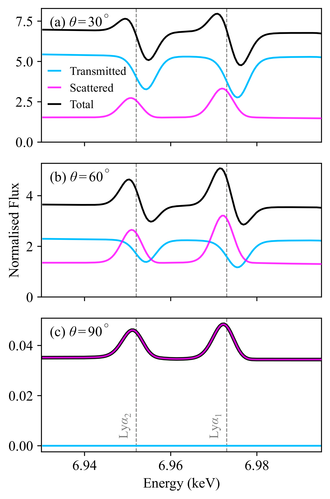
图注：Close-up view of the synthesised spectra of the Fe Ly$\alpha$ doublet with \(\texttt{SKIRT}\) at different viewing angles: (a) $\theta=30^{\circ}$, (b) $\theta=60^{\circ}$ and (c) $\theta=90^{\circ}$. The transmitted, scattered, and total spectra are shown as cyan, magenta, and black curves, respectively. For display purposes, the spectra are convolved with a 5~eV FWHM Gaussian and binned to 0.5 eV to be comparable to the XRISM resolution. The vertical dashed lines mark the rest-frame energies of the two lines.
对应解读：建议重点查看的图表第5项；关键图表逐图导读图5；模型拟合段落中关于不同视角改变线型、线比和残差的讨论。
入选理由：这是最直接展示三维几何与观测倾角影响的结果图，比较了同一盘风/外流模型在30、60、90度视角下的Fe Lyα双线近景谱，并分解出透射、散射和总谱。它比单纯几何示意图更能支撑日报中“一维模型局限”和“视角可改变表观谱线诊断”的核心解读。
来源与置信度：\(arxiv_source\)；high；\(arxiv_source\) / aa60568-26.tex:figure[12]
Fig09
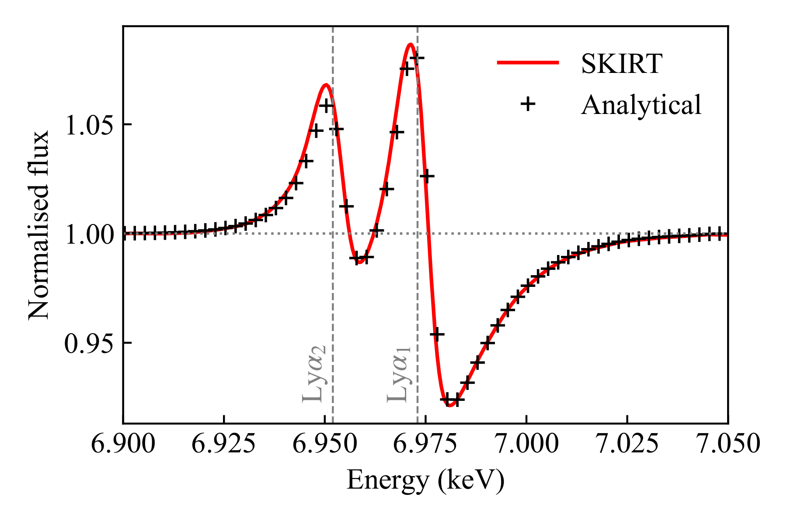
图注：P Cygni profile of the Fe Ly$\alpha$ doublet in a homologously expanding sphere calculated using \(\texttt{SKIRT}\) (red solid curve) and an analytical solution \(\citep{J1990}\) (black plus). For display purposes, the spectra are convolved with a 5~eV FWHM Gaussian and binned to 0.5 eV to be comparable to the XRISM resolution. The horizontal dotted line shows the incident continuum level and the vertical dashed lines mark the rest-frame energies of the two lines. The parameters of the code are set as follows: time since explosion (3000~s), maximum ejecta velocity ($0.01c$), photospheric velocity ($5 \times 10^{-4} c$), line optical depth (0.1), and a parameter for the density stratification ($5.0 \times 10^{7}$~cm~s$^{-1}$).
对应解读：建议重点查看的图表第4项；关键图表逐图导读图4；模型拟合段落中关于蓝移吸收槽、红翼/发射峰系统残差的讨论。
入选理由：该图明确给出Fe Lyα双线的P Cygni轮廓，并与解析解对比，还按XRISM分辨率卷积和重bin。它直接对应日报强调的速度场、蓝移吸收与散射再发射耦合，是证明SKIRT能处理一维逃逸概率难以描述线型的关键图。
来源与置信度：\(arxiv_source\)；high；\(arxiv_source\) / aa60568-26.tex:figure[9]
Fig05
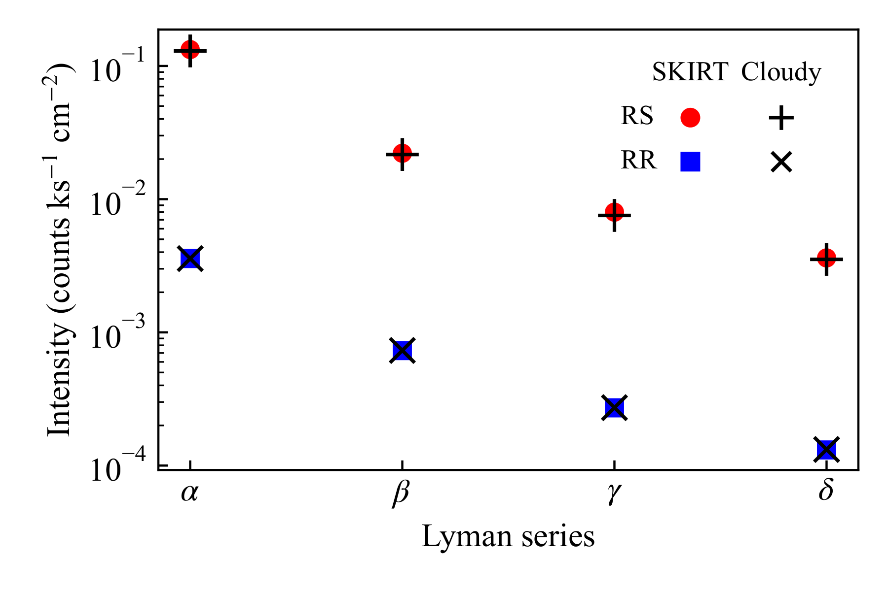
图注：Photon flux of the Fe Lyman-series lines from the RS and RR channels calculated with \(\texttt{SKIRT}\) (red circle and blue square, respectively) and \(\texttt{Cloudy}\) (black plus and cross, respectively). The incident source has $L_{\mathrm{X}}=10^{38}$~erg~s$^{-1}$ and the lines are observed at a 2.5~kpc distance.
对应解读：建议重点查看的图表第3项；关键图表逐图导读图3；详细解读中与Cloudy交叉验证莱曼系线通量和线比的部分。
入选理由：该图把SKIRT和Cloudy的Fe莱曼系光子通量逐线比较，并区分共振散射与辐射复合通道。它比只看单条Lyα验证更有价值，因为能检验高阶莱曼线、级联和两种产线机制是否整体一致。
来源与置信度：\(arxiv_source\)；high；\(arxiv_source\) / aa60568-26.tex:figure[5]
Fig06
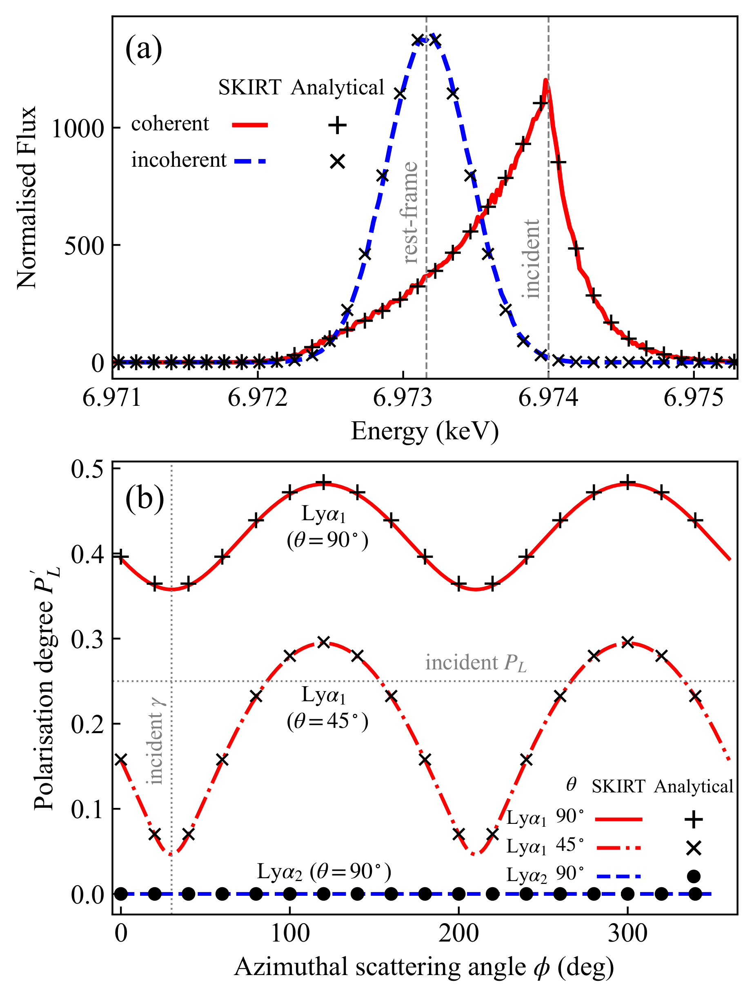
图注：(a) Frequency redistribution for coherent (red solid curve) and incoherent (blue dashed curve) scattering of Fe Ly$\alpha_1$ calculated with \(\texttt{SKIRT}.\) Analytical solutions are compared in black: the type II redistribution function of \(\cite{H1962}\) (coherent), and the Maxwellian distribution with a $10^6$~K temperature (incoherent). The vertical dashed lines mark the rest-frame energy of the line and the energy of the incident photons for the coherent scattering. (b) Polarisation degree as a function of the azimuthal scattering angle $\phi$ for Ly$\alpha_1$ observed at $\theta=90^{\circ}$ and 45$^{\circ}$ and for Ly$\alpha_2$ at $\theta=90^{\circ}$ calculated with \(\texttt{SKIRT}.\) Analytical solutions (Eq.~(\ref{e16})) are compared with points. The incident polarisation degree $P_{L}=0.25$ and angle $\gamma=30^{\circ}$ are also shown with dotted lines.
对应解读：建议重点查看的图表第2项和第6项；关键图表逐图导读图2和图6；详细解读中关于共振散射频率再分布和线性偏振实现的部分。
入选理由：该图同时验证频率再分布函数和散射偏振角依赖，SKIRT结果与解析曲线/点直接对照。它是候选图中唯一明确覆盖偏振诊断的图，也支撑日报中XRISM光谱与IXPE偏振联合诊断的论点。
来源与置信度：\(arxiv_source\)；high；\(arxiv_source\) / aa60568-26.tex:figure[6]
Fig08
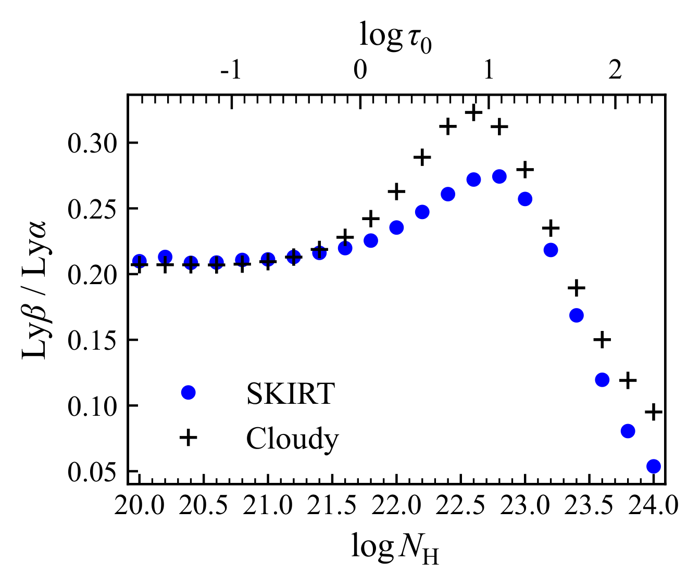
图注：Fe Ly$\beta$/Ly$\alpha$ ratio calculated with \(\texttt{SKIRT}\) (blue circle) and \(\texttt{Cloudy}\) (black plus). The top axis shows the Ly$\alpha_1$ optical depth ($\tau_0$), while the bottom axis shows the equivalent column density ($N_{\mathrm{H}}$). The offset at $\tau_0\sim1$ is presumably due to the different treatment of the line-photon escape or the spherical geometry.
对应解读：建议重点查看的图表第3项和模型拟合段落；关键图表逐图导读图3中关于线比、光学深度和系统偏差的讨论。
入选理由：该图展示Fe Lyβ/Lyα线比随柱密度和Lyα线心光学深度变化，并直接标出SKIRT与Cloudy在τ0约为1附近的偏移。它非常适合支撑日报中关于高阶线比、光学厚效应和Cloudy/SKIRT系统差异来源的解读。
来源与置信度：\(arxiv_source\)；high；\(arxiv_source\) / aa60568-26.tex:figure[8]
Fig01
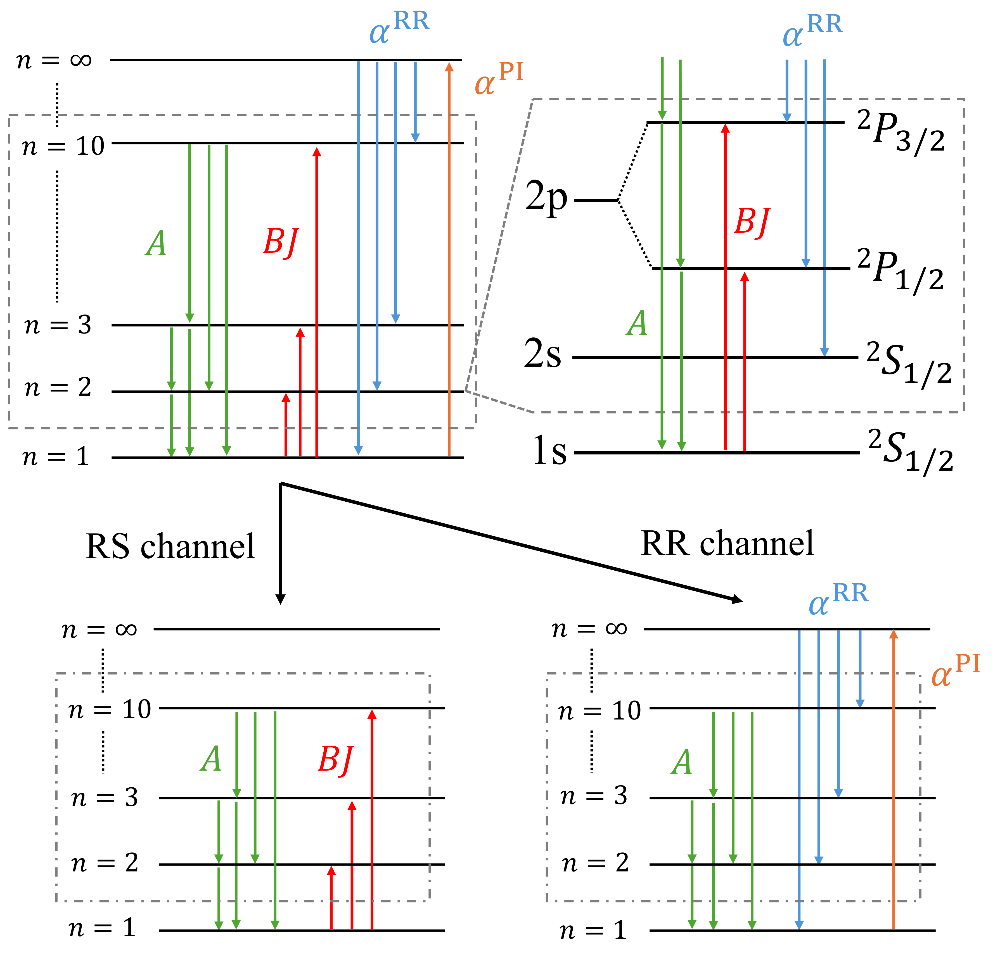
图注：Levels and atomic processes considered in the present implementation. $A$ and $B$ are the Einstein coefficients, $J$ is the radiation field strength and $BJ$ represents the radiative excitation rate. RS, RR and PI denote resonance scattering, radiative recombination and photo-ionisation, respectively. Other symbols are defined in the main text.
对应解读：建议重点查看的图表第1项；关键图表逐图导读图1；详细解读中关于Z=1--30、n≤10、共振散射、辐射复合和光电离统一实现的部分。
入选理由：该图概括了论文实现的能级与原子过程，明确标出RS、RR、PI以及Einstein系数和辐射场耦合。它虽然不是结果图，但能帮助读者确认谱线产生和传播过程被放在同一物理框架中，是理解后续验证和三维应用图的基础。
来源与置信度：\(arxiv_source\)；high；\(arxiv_source\) / aa60568-26.tex:figure[1]
强相关工作
这项工作与 Cloudy、XSTAR、SPEX 等光电离谱工具属于同一问题域，但重点不同。Cloudy 和 XSTAR 的强项是局部微物理、热平衡和离子平衡；SKIRT 扩展后的优势是三维几何、任意速度场、共振散射路径和偏振传播。建议检索关键词包括 “X-ray photoionized plasma radiative transfer”, “hydrogen-like Lyman series resonance scattering”, “XRISM Resolve disk wind”, “IXPE line polarization”, “SKIRT Monte Carlo radiative transfer”。
相似观测背景包括活动星系核暖吸收体、X 射线双星盘风、超软源外流和高电离铁线观测。相反或张力观点通常不是否定三维辐射转移，而是认为在许多数据质量下，一维多区吸收模型已经足够解释谱线。本文真正要挑战的是这种“足够”的边界：当 XRISM 解析线型、IXPE 提供偏振后，几何与速度场可能不再是可忽略的二阶效应。
这篇论文不对应单一命名事件或单一天体源，因此没有同一事件论文；应把它放在同类方法论文、XRISM/IXPE 仪器能力论文、以及 Cloudy/XSTAR/SPEX 光电离建模文献的上下文中阅读。
同一事件 / 同类源线索：
- https://arxiv.org/abs/2608.12527
- https://arxiv.org/pdf/2608.12527
- https://skirt.ugent.be
- https://heasarc.gsfc.nasa.gov/lheasoft/xstar/xstar.html
相似工作：
- https://ui.adsabs.harvard.edu/abs/2017RMxAA..53..385F/abstract
- https://heasarc.gsfc.nasa.gov/lheasoft/xstar/xstar.html
- https://skirt.ugent.be
基础理论 / 方法工作：
- https://ui.adsabs.harvard.edu/abs/2015A%26C....9...20C/abstract
- https://ui.adsabs.harvard.edu/abs/2017RMxAA..53..385F/abstract
相反观点 / 张力线索：
（未提供）
6. JWST Detects a Dusty AGB-like Source Before the Type Ia-CSM Supernova 2026sqf
- 来源：arXiv / astro-ph.HE
- 链接：https://arxiv.org/abs/2608.13321v1
- 作者：Tamás Szalai, Dan Milisavljevic, Noah Zimmer, Braden Garretson, Thomas Moore, Schuyler D. Van Dyk, Anan Lu, Selcuk Topal
- 评分：novelty 9/10，importance 8/10，relevance 6/10，final 8.60/10
- 推荐理由：可能是最近的Ia-CSM并首次在JWST爆前图像中识别热核超新星候选前身系统，结果新颖且重要；虽非伽马/宇宙线重点，但作为相互作用超新星和致密双星通道论文值得保留。
中文题目：JWST 在 Ia-CSM 型超新星 2026sqf 爆发前图像中发现一个多尘、类似 AGB 星的候选伴星系统
做了什么：这篇文章研究了近邻正面旋涡星系 NGC 3310 中新近爆发的超新星 SN 2026sqf。作者用早期光谱、光变曲线和爆发前 JWST 成像共同判断，它很可能属于罕见的 Ia-CSM 子类：热核爆炸的白矮星与致密星周物质发生强相互作用。最关键的新信息是，JWST 爆发前图像在超新星位置附近看到一个多尘、类似富碳 AGB 星的红外源，可能是给白矮星供质的伴星或共同包层系统残迹。如果后续定位和晚期成像确认，这是热核超新星候选前身系统首次在 JWST 爆发前图像中被识别，也会把 Ia-CSM 的形成通道从“抽象模型”推向可直接检验的恒星系统。
为什么重要：Ia-CSM 超新星同时触及两个长期难题：Ia 型超新星前身系统到底是什么，以及强星周相互作用如何在热核爆炸中出现。普通 Ia 型超新星通常缺少氢线和强星周相互作用，而 Ia-CSM 源显示窄氢发射、较高光度和缓慢演化，暗示白矮星爆炸前处在富氢、致密、非稳态的物质环境中。SN 2026sqf 若确认为距离约 \(19\,\mathrm{Mpc}\) 的 Ia-CSM，将是最近的同类事件，爆发前 JWST 图像又给出了前身系统的直接约束，因此重要性超过一次普通分类发现。
理论 / 观测 / 仪器方法价值：对理论而言，本文把白矮星加 AGB 星、共同包层、爆发前短时标抛射等模型与一个具体近邻事件相连。对观测而言，它展示了如何把早期光谱线宽、光变曲线、星周尘埃红外辐射和爆发前高分辨率成像合并成前身系统证据链。对方法而言，这类工作为 Roman、Rubin、JWST 档案图像和近邻星系瞬变搜索提供了模板：不仅要看爆发后的光谱分类，还要回到爆发前红外图像中寻找被尘埃包裹的供质星。
为什么应该关注：如果你关心 Ia 型超新星宇宙学、白矮星双星演化、共同包层物理或尘埃包裹恒星的瞬变前兆，这篇都值得读。它的核心价值不是简单说“发现一个前身星”，而是提出一个可被证伪的近邻样本：晚期 JWST 若看到该红外源消失或显著变暗，前身识别会大幅增强；若仍然存在，则可能是邻近恒星或星团污染。这个事件有机会把 Ia-CSM 从少数奇特光谱样本变成可做恒星考古的物理通道。
展开详细解读：文章讲解、背景、理论、重点章节、图表与相关工作
文章详细讲解
科学问题：SN 2026sqf 的主要问题有两层。第一，它的爆发性质是否真是 Ia-CSM，也就是热核超新星与富氢星周介质强相互作用的混合现象，而不是一个普通核心坍缩 IIn 或其他相互作用型瞬变。第二，若它是 Ia-CSM，爆发前系统里提供富氢星周物质的对象是什么。作者特别关注 JWST 爆发前图像中的红外源是否能解释为一个被尘埃包裹的 AGB 类供质星或共同包层阶段的双星系统。
作者怎么做：文章把三类证据放在同一框架中。第一类是早期光谱，包括谱形、发射线强度、窄线宽度和与 Ia-CSM 样本的相似性。第二类是光变曲线，包括早期亮度演化、相互作用供能导致的缓慢衰减或高光度特征。第三类是爆发前 JWST 成像，作者在超新星位置附近识别出一个红外明亮、尘埃显著、类似 AGB 星的候选源，并用其颜色和亮度推断尘埃环境与供质星性质。这里的关键不是单一指标，而是光谱分类、星周物质质量尺度、尘埃含量和前身候选体性质是否相互一致。
关键结果：早期光谱的整体形态、发射线强度和光变曲线演化都支持 SN 2026sqf 属于 Ia-CSM 子类。文章强调，如果分类被晚期光谱进一步确认，它将是已知最近的 Ia-CSM 事件之一，距离约 \(D\sim19\,\mathrm{Mpc}\)。爆发前 JWST 图像中的候选源红外颜色与多尘 AGB 类天体相容，并且可能偏向富碳 AGB 供体。作者还指出，估计的星周物质质量和尘埃含量符合 AGB 环境的量级，但窄线速度高于典型 AGB 超风速度，更像是双星相互作用或共同包层阶段中的阶段性抛射。
局限和下一步：现阶段最关键的局限是前身候选源的关联性仍需验证。爆发前图像中的源可能是真正的前身系统，也可能是近邻源、未分辨星团、背景污染或同一局部恒星形成环境中的另一个红外天体。Ia-CSM 分类也需要晚期光谱和多波段持续监测确认，尤其要看热核爆炸特征与持续相互作用特征如何演化。最直接的下一步是晚期 JWST 复访：如果候选红外源随超新星消退后消失或显著变暗，前身解释会很强；如果源保持不变，则需要重新评估定位、污染和物理解释。
关键结果是怎么做出来的
本文证据链的第一环是事件选择和分类。SN 2026sqf 位于近邻正面旋涡星系 NGC 3310，距离约 \(D\sim19\,\mathrm{Mpc}\)，近距离使早期光谱、光变曲线和爆发前空间分辨成像都具有较强约束力。作者并不是只用一个氢发射线就给出分类，而是比较早期谱形、发射线强度、窄线和连续谱演化是否接近已知 Ia-CSM 事件。读者应特别检查分类是否排除了 IIn 型核心坍缩超新星，因为二者在窄氢线和相互作用光度上容易混淆。
第二环是光变曲线和相互作用强度。Ia-CSM 的光度演化通常比普通 Ia 型更受星周介质相互作用控制，因此早期和峰值附近的多波段光变曲线可以约束相互作用供能、扩散时间和星周介质密度尺度。文章摘要没有给出完整事件数或测光点数，但逻辑上依赖多历元光度随时间的演化，而不是单次发现光度。关键诊断是光变曲线是否表现出高光度、较慢衰减和颜色演化，这些特征需要与已知 Ia-CSM 样本、IIn 样本和普通 Ia 型模板比较。
第三环是 JWST 爆发前源的识别。作者报告的是候选前身系统，而不是最终确认的前身星。证据包括超新星天体测量位置与爆发前红外源的位置一致性、JWST 波段中的颜色和亮度、以及由尘埃辐射推断出的 AGB 类环境。这里统计显著性通常来自位置重合概率、局部源密度下的偶然重合概率、测光误差、宿主背景估计和不同配准方案下的偏移。读者应看作者是否给出误差圆、相对天体测量残差和候选源与误差圆的相对位置。
第四环是星周物质和速度约束。文章指出星周物质质量和尘埃含量与 AGB 环境相容，但窄线宽度超过典型 AGB 超风速度。这个对比很重要：若速度只有 \(10\) 到 \(30\,\mathrm{km\,s^{-1}}\)，普通 AGB 风即可解释；若窄线对应更高速度，则更可能需要双星相互作用、共同包层喷出或爆发前短时标非稳态抛射。读者应重点检查线宽是否经过仪器分辨率修正，以及线宽是否可能被电子散射、不对称剖面或多组分拟合影响。
第五环是稳健性。最有力的检验不是更复杂的早期模型，而是晚期复访：当超新星相互作用光逐渐变暗后，爆发前 JWST 源是否仍存在。若源消失，说明它很可能与爆炸系统有关；若仍存在，可能代表未爆炸伴星、邻近恒星、星团或背景污染，不同解释会导向不同通道。文章的结论因此应读作“强候选、可检验”，而不是已经完全闭合的前身确认。
展开背景、理论、公式、模型、章节和图表导读
背景知识
Ia 型超新星通常被解释为碳氧白矮星的热核爆炸，其经验光度关系使它们成为宇宙学距离标尺。但“白矮星如何达到爆炸条件”仍未定论，候选通道包括单简并、双简并、亚钱德拉塞卡质量双爆轰、合并残骸延迟爆炸等。普通 Ia 型光谱缺少氢和氦的强线，因此长期以来富氢伴星是否普遍存在一直是争议焦点。
Ia-CSM 是 Ia 型超新星家族中的稀有、极端分支。它们表现出类似 Ia 型的某些热核爆炸特征，同时又有强氢发射线和相互作用供能，说明爆炸抛射物撞上了富氢星周介质。历史上 SN 2002ic、PTF11kx、SN 2012ca 等事件推动了这一子类讨论，但样本少、分类边界模糊，且常与 IIn 型核心坍缩超新星混淆。
AGB 星是低到中等质量恒星晚期演化阶段，具有强质量损失、低温大气和显著尘埃形成。若白矮星伴星从 AGB 星或其共同包层环境中获得物质，系统周围可自然形成富氢、富尘的星周介质。富碳 AGB 供体尤其会在中红外表现出强尘埃辐射，这正是 JWST 爆发前成像能够敏感探测的对象。
现在重新看这个问题有两个原因。其一，JWST 在近邻星系中积累了高空间分辨率红外图像，使被尘埃遮蔽的前身系统不再完全不可见。其二，时域巡天发现瞬变越来越早，早期光谱可以抓住窄线、闪光电离和相互作用初始阶段。SN 2026sqf 结合了近距离、早期观测和爆发前 JWST 档案图像，是少见的证据链完整事件。
该领域常见误区包括：看到窄氢线就自动判为核心坍缩 IIn；看到 Ia 型特征就忽略星周介质的供能；把爆发前图像中的位置重合直接等同于前身确认；以及把 AGB 风速度、共同包层抛射速度和辐射转移造成的线宽混为一谈。本文的重要性恰在于把这些模糊点显式放进同一个检验框架中。
基础理论 / 方法脉络
基本物理图像是：超新星抛射物以约 \(10^4\,\mathrm{km\,s^{-1}}\) 的速度向外膨胀，若周围存在高密度星周介质，外向激波和反向激波会把动能转化为辐射。窄氢线通常来自尚未被激波加速的慢速星周气体，宽线或中等宽线来自激波后气体、电子散射或更高速组分。Ia-CSM 的难点在于爆炸核心像热核事件，但外部环境像富氢大质量损失系统。
AGB 供体的核心特征是强质量损失和尘埃再处理。恒星光被尘埃吸收后在中红外重新辐射，因而爆发前 JWST 的红外颜色可以约束尘埃温度、光度、光学深度和质量损失历史。富碳 AGB 星的尘埃化学组成会影响光谱能量分布，因此多波段颜色不是简单温度计，还包含尘埃成分、粒径和几何分布的信息。
本文所用的关键假设可以概括为：超新星位置处的爆发前红外源若与爆炸系统物理相关，其颜色和亮度应能用一个多尘 AGB 类源或双星共同包层环境解释；早期光谱线宽和光变曲线相互作用强度应能给出星周介质密度、速度和质量的近似约束；这些约束应彼此量级一致。若尘埃源需要的质量损失率远低于相互作用光度所需值，或线宽完全不符合 AGB 环境，就会削弱该解释。
观测方法上，爆发后数据提供时间域和谱线诊断，爆发前 JWST 图像提供空间位置和红外颜色。天体测量配准误差是核心系统误差之一，因为在近邻星系的拥挤区域，一个亚角秒偏差就可能改变候选源身份。测光系统误差还包括宿主星系背景、未分辨星团、邻近源混合、尘埃模型选择以及滤光片零点。
常见退化关系包括尘埃温度与发光面积的退化、尘埃质量与不透明度的退化、质量损失率与风速的退化、相互作用光度与辐射效率的退化，以及 Ia-CSM 与 IIn 分类之间的谱形退化。本文的推理价值不在于完全消除这些退化，而在于提出一个能够被晚期成像和持续光谱逐步打破的近邻案例。
公式与推导
第一步从星周风密度开始。若供体以质量损失率 \(\dot{M}\) 和风速 \(v_{\mathrm{w}}\) 稳定外流，半径 \(r\) 处的密度为
这里 \(\rho_{\mathrm{CSM}}\) 是星周介质密度，\(\dot{M}\) 是质量损失率，\(v_{\mathrm{w}}\) 是未受激波影响的外流速度。这个式子适合近似稳态、球对称风；若实际是共同包层或壳层抛射，\(r^{-2}\) 只应看作基准模型。
第二步估计激波相互作用可提供的功率。若超新星激波速度为 \(v_{\mathrm{s}}\)，通过激波的质量通量约为 \(4\pi r^2\rho_{\mathrm{CSM}}v_{\mathrm{s}}\)，动能通量转化为辐射的量级为
其中 \(L_{\mathrm{int}}\) 是相互作用光度，\(\epsilon\) 是辐射效率。这个关系说明，同一光度可由较高 \(\dot{M}\)、较低 \(v_{\mathrm{w}}\) 或较高 \(v_{\mathrm{s}}\) 产生，因此存在明显退化。
第三步把窄线宽度与未激波气体速度联系起来。观测到的谱线宽度需要扣除仪器分辨率，近似可写为
这里 \(v_{\mathrm{line}}\) 是速度宽度，\(\Delta\lambda_{\mathrm{obs}}\) 是观测线宽，\(\Delta\lambda_{\mathrm{inst}}\) 是仪器线宽，\(\lambda_0\) 是静止波长。若 \(v_{\mathrm{line}}\) 明显高于典型 AGB 超风速度，就提示非稳态抛射或额外展宽机制。
第四步估计壳层位置和抛射时标。若相互作用在爆发后时间 \(t\) 发生于半径 \(R\simeq v_{\mathrm{s}}t\)，该星周物质由速度 \(v_{\mathrm{w}}\) 的外流产生，则爆发前抛射时间约为
这个式子把早期光谱和光变曲线时间尺度转化为爆发前质量损失历史。若 \(v_{\mathrm{w}}\) 很小，则同一半径对应更早的 AGB 风；若 \(v_{\mathrm{w}}\) 较高，则可对应爆发前较短时标的双星相互作用。
第五步用尘埃热辐射连接 JWST 测光。对于温度 \(T_{\mathrm{d}}\)、半径 \(R_{\mathrm{d}}\) 的近似黑体尘埃光球，单频通量量级为
其中 \(F_\nu\) 是观测通量密度，\(D\) 是距离，\(B_\nu(T_{\mathrm{d}})\) 是普朗克函数。这个式子用于直观理解红外颜色如何给出 \(T_{\mathrm{d}}\)，而归一化如何给出发光面积或光度。
第六步若尘埃是光学薄的，尘埃质量可由
估计。这里 \(M_{\mathrm{d}}\) 是尘埃质量，\(\kappa_\nu\) 是质量吸收系数。该估计强烈依赖 \(\kappa_\nu\)、尘埃化学成分和 \(T_{\mathrm{d}}\)，因此富碳或富氧 AGB 解释会影响质量推断。
第七步把爆发前源与超新星位置的关联写成偶然重合概率。若局部表面源密度为 \(\Sigma\)，天体测量误差半径为 \(r_{\mathrm{err}}\)，则至少一个无关源落入误差圆的概率近似为
\(P_{\mathrm{cc}}\) 越小，位置关联越可信。实际分析还应考虑亮度阈值、颜色筛选和宿主背景非均匀性。
第八步是多波段测光拟合。给定模型通量 \(F_{i,\mathrm{mod}}(\boldsymbol{\theta})\) 和观测通量 \(F_{i,\mathrm{obs}}\)，常用高斯误差似然为
参数 \(\boldsymbol{\theta}\) 可包括 \(T_{\mathrm{d}}\)、\(M_{\mathrm{d}}\)、光度、消光和背景项。这个似然让读者检查候选 AGB 模型是否真的优于普通恒星、星团或背景源模型。
模型拟合 / 应用方法
本文涉及两组拟合问题。第一组是爆发后超新星数据的分类与相互作用建模，拟合量包括光变曲线峰值、衰减率、颜色演化、谱线中心、线宽、线通量和谱线等值宽度。模型可从经验模板比较开始，即把 SN 2026sqf 与已知 Ia-CSM、普通 Ia 型和 IIn 型事件比较；也可进一步用相互作用模型拟合 \(\dot{M}/v_{\mathrm{w}}\)、激波速度、辐射效率和星周介质半径分布。
第二组是爆发前 JWST 源的红外 SED 拟合。参数通常包括尘埃温度、总光度、尘埃质量、光学深度、尘埃成分和距离。若数据只有少数 JWST 滤光片，模型自由度会明显受限，因此结论更应依赖颜色和亮度是否落在 AGB 类天体区域，而不是声称唯一确定了恒星质量或精确演化阶段。
统计上，位置关联需要单独处理。一个红外源在误差圆内并不自动等于前身系统，必须估计局部源密度下的偶然重合概率，并检查天体测量配准的残差。若宿主背景复杂，误差分布可能不是理想高斯，系统误差会主导结果。实际读图时应把误差圆、候选源中心、参考星残差和不同配准方案下的位置偏移作为关键诊断。
主要退化包括：\(T_{\mathrm{d}}\) 与发光面积退化，\(M_{\mathrm{d}}\) 与 \(\kappa_\nu\) 退化，\(\dot{M}\) 与 \(v_{\mathrm{w}}\) 退化，线宽与真实外流速度、电子散射和多组分结构之间的退化。对于 Ia-CSM 分类，还有热核谱特征被相互作用连续谱稀释的问题；早期若相互作用太强，底层 Ia 型特征可能不明显，导致与 IIn 型混淆。
模型可能失败的场景也很清楚。若晚期 JWST 发现爆发前红外源未变暗且位置与超新星精确定位不一致，它可能只是邻近 AGB 星或小星团。若晚期光谱显示更像核心坍缩产物而缺少可靠热核特征，Ia-CSM 解释会被削弱。若相互作用所需星周质量远超 AGB 或共同包层模型合理范围，则需要其他前身通道或非球对称结构。
重点章节 / 结果段落怎么读
一、发现、距离和观测资料部分应先读。重点确认 SN 2026sqf 所在宿主 NGC 3310 的距离、爆发历元约束、测光波段、光谱历元和 JWST 爆发前图像的具体滤光片。距离约 \(D\sim19\,\mathrm{Mpc}\) 是所有光度、尘埃质量和前身亮度推断的基础。
二、早期光谱分类部分是判断 Ia-CSM 的核心。读者应看作者如何比较谱形、氢发射线、可能的 Ia 型特征和已知 Ia-CSM 模板。特别要关注窄线宽度是否扣除了仪器分辨率，发射线是否有多组分，以及作者如何排除 IIn 型核心坍缩超新星。
三、光变曲线分析部分应与光谱一起读。重点不是单个峰值星等，而是多波段演化是否显示相互作用供能。若文章给出与普通 Ia 型、Ia-CSM 和 IIn 模板的对比图，应检查 SN 2026sqf 是否在颜色、衰减率和光度上同时接近 Ia-CSM。
四、JWST 爆发前源识别和 SED 拟合部分最值得细读。这里应关注天体测量配准、误差圆、候选源测光、宿主背景扣除和 AGB 类模型拟合。若作者给出富碳 AGB 解释，需要检查该解释是否来自特定中红外颜色、尘埃温度或与 AGB 模型网格的比较。
五、讨论和未来检验部分决定结论力度。作者提出白矮星加 AGB 星、可能共同包层和短时标阶段性抛射的图像，但也承认通道和时标仍不确定。读者应把这部分理解为可检验假说清单：晚期 JWST、晚期光谱、射电和 X 射线监测都可检验星周物质结构和候选前身身份。
建议重点查看的图表
-
爆发位置和 JWST 爆发前图像：看超新星位置误差圆、候选红外源中心、附近源拥挤程度和宿主背景梯度。
-
多波段光变曲线与模板比较：看 SN 2026sqf 与普通 Ia 型、Ia-CSM 和 IIn 型样本在峰值光度、衰减率和颜色演化上的相对位置。
-
早期光谱序列：看氢线强度、窄线和中等宽线组分、连续谱温度演化，以及是否有热核 Ia 型特征残留。
-
谱线剖面和线宽拟合表：看线宽是否做仪器分辨率修正，是否需要多高斯组分，窄线速度是否确实高于 AGB 超风。
-
爆发前源的 SED 或颜色-星等图：看候选源是否落在多尘 AGB、富碳 AGB 或红超巨星区域，以及误差条是否允许其他解释。
-
星周物质质量、尘埃质量或质量损失率估计图表：看结果对风速、尘埃不透明度、温度和距离假设的敏感性。
-
偶然重合概率或天体测量残差诊断：看参考源数量、配准均方根残差和局部源密度估计是否足以支持前身关联。
-
未来晚期观测预测：若有模型曲线，应看候选源消失、残留伴星或持续尘埃辐射在 JWST 波段中预期差异多大。
关键图表逐图导读
图 1：通常应是宿主星系和局部爆发环境图。坐标轴可能是赤经和赤纬偏移，或图像像素坐标。读者应看 SN 2026sqf 在 NGC 3310 中的位置、局部背景是否复杂、爆发前 JWST 图像上候选源是否位于误差圆内。读图陷阱是把视觉重合当作统计确认；必须结合误差圆大小和局部源密度。
图 2：多波段光变曲线图应以爆发后天数为横轴、表观或绝对星等为纵轴，并叠加 Ia-CSM、普通 Ia 型或 IIn 型模板。主要结论应是 SN 2026sqf 的亮度和演化更接近相互作用供能事件。读图时要注意纵轴星等方向、不同滤光片的垂直平移、消光和距离模数修正是否一致。
图 3：早期光谱序列应以静止波长为横轴、相对通量为纵轴，并按观测历元错开。重点看 Balmer 线、可能的 Fe 族或 Si 相关 Ia 型特征、连续谱斜率和线型演化。读图陷阱是相互作用连续谱会掩盖底层热核特征，因此没有醒目的普通 Ia 型吸收线并不必然排除 Ia-CSM。
图 4：谱线剖面拟合图可能展示 \(\mathrm{H}\alpha\) 或其他强线附近的速度空间剖面。横轴若是速度，零点应对应线心；纵轴是归一化通量或绝对通量。读者应看窄组分、中等宽组分和宽组分是否都被需要，以及残差是否在核心和翼部系统性偏离。线宽大于典型 AGB 风速度是本文推向阶段性抛射的重要依据之一。
图 5：JWST 爆发前源的 SED 图应以波长为横轴、通量密度或 \(\nu F_\nu\) 为纵轴，并叠加 AGB 或尘埃模型。主要看红外上升斜率、尘埃温度和模型归一化。读图陷阱是少数滤光片可能无法区分富碳 AGB、富氧 AGB、小星团和背景混合源，模型线的好看不等于唯一解。
图 6：颜色-星等图或模型网格图若存在，应展示候选源相对 AGB 星、红超巨星、星团或背景源的位置。横轴可能是 JWST 颜色，纵轴是绝对星等。重点看误差条是否完全落在多尘 AGB 区域，还是与其他红色源类别重叠。这个图直接决定“可能富碳 AGB 供体”的可信度。
图 7：质量损失率、星周质量或尘埃质量估计图表若存在，应看参数随 \(v_{\mathrm{w}}\)、\(T_{\mathrm{d}}\)、\(\kappa_\nu\) 或 \(\epsilon\) 的变化。主要结论是估计量级与 AGB 环境相容，但线宽又暗示普通稳态风不够。读图陷阱是把量级一致误读为唯一物理通道。
论文原图 / 可嵌入图片
Fig09
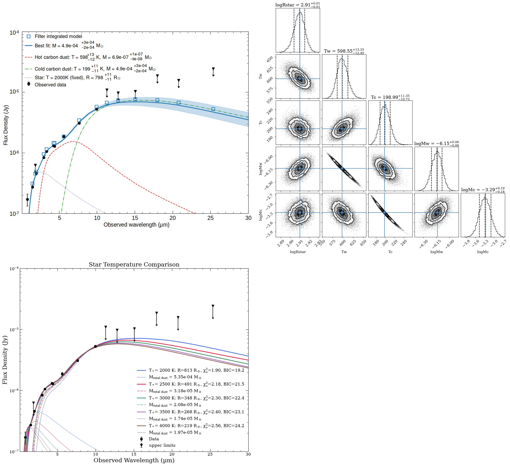
图注：{\(\bf\) Top:} One of our three-component (star + warm dust + cold dust) models of the {\(\it\) HST} + {\(\it\) JWST} NIRCam \& MIRI SED of the potential progenitor system of SN~2026sqf. {\(\bf\) Middle:} Corner plot of the model fitting above. {\(\bf\) Bottom:} Model fits using various combinations of stellar temperatures (T$_{*}$) and radii (R$_{*}$).
对应解读：对应“建议重点查看的图表”第5项爆发前源的SED、第6项颜色/模型判别，以及“关键图表逐图导读”图5和模型拟合段落中的JWST/HST红外SED拟合。
入选理由：这是支撑论文最核心前身结论的图，直接展示候选前身系统的HST+JWST NIRCam/MIRI SED、三组分模型、参数角图和不同恒星温度/半径组合的拟合退化。它最能检验“多尘AGB样源”“可能富碳AGB供体”以及尘埃温度、光度、模型非唯一性等日报重点解读。
来源与置信度：\(arxiv_source\)；high；\(arxiv_source\) / \(main_CORR.tex\):figure[9]
Fig01
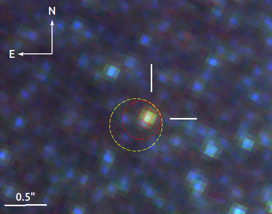
图注：Color composite picture created from {\(\it\) JWST} GO 9246 NIRCam F150W, F300M, and F430M pre-explosion images (obtained in March 2026) of the site of SN~2026sqf. Yellow and red circles show the uncertainties of HST WFC3 and ACS astrometric solutions, respectively.
对应解读：对应“建议重点查看的图表”第1项爆发位置和JWST爆发前图像、第7项天体测量误差诊断，以及“关键图表逐图导读”图1。
入选理由：该图给出JWST爆发前彩色合成图，并叠加HST WFC3和ACS天体测量解的误差圆，是判断候选红外源是否真正位于SN位置、局部背景是否复杂、视觉重合是否可靠的首要图像证据。
来源与置信度：\(arxiv_source\)；high；\(arxiv_source\) / \(main_CORR.tex\):figure[1]
Fig07
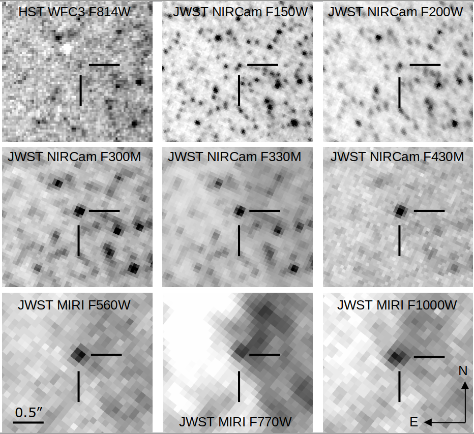
图注：The potential progenitor system of SN~2026sqf on HST WFC/UVIS (2021-12-16), JWST/NIRCam (2026-03-20) and MIRI (2024-04-12) images. North is up, east is to the left.
对应解读：对应“建议重点查看的图表”第1项爆发前图像和第5项前身候选源识别，也对应详细解读中关于JWST复访验证候选源是否消失的讨论。
入选理由：该图并列展示HST、JWST/NIRCam和MIRI爆发前图像中的潜在前身系统，能直观看到候选源在不同波段的存在性、红外亮度和周围拥挤环境，是连接天体测量定位与红外SED解释的关键证据。
来源与置信度：\(arxiv_source\)；high；\(arxiv_source\) / \(main_CORR.tex\):figure[7]
Fig08
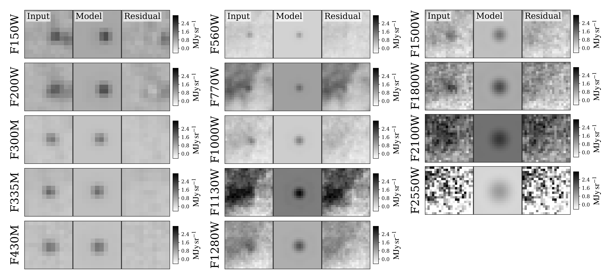
图注：Output of \(\texttt{space{\textunderscore}phot}\) for pre-explosion {\(\it\) JWST} photometry of the potential progenitor system: observed data, PSF models, and residual images for all the filters. Orientation is different than in Fig. \(\ref{fig:miri}\) since \(\texttt{space{\textunderscore}phot}\) fits in the XY plane of the drizzled images.
对应解读：对应“建议重点查看的图表”第7项天体测量/残差诊断，以及模型拟合段落中关于宿主背景复杂、源混合和系统误差的讨论。
入选理由：该图展示space_phot对爆发前JWST各滤光片的观测图、PSF模型和残差图，可用于判断候选源光度测量是否受邻近源、背景梯度或PSF拟合系统误差影响，比单纯图像更能支撑对前身关联可靠性的审查。
来源与置信度：\(arxiv_source\)；high；\(arxiv_source\) / \(main_CORR.tex\):figure[8]
Fig06
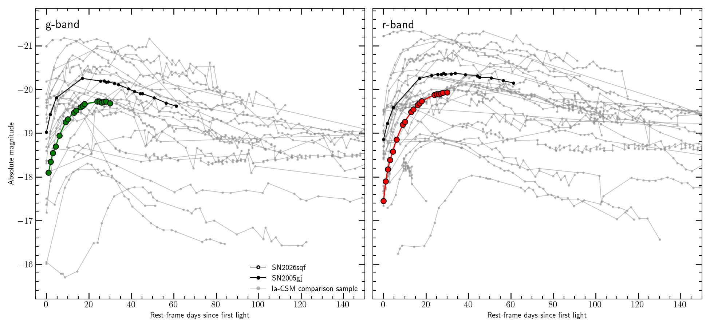
图注：Early-time g and r-band LCs of SN~2026sqf, compared to known SNe Ia-CSM from the ZTF sample \(\citep{Terwel_2025a,Terwel_2025b}.\)
对应解读：对应“建议重点查看的图表”第2项多波段光变曲线与模板比较，以及“关键图表逐图导读”图2中与Ia-CSM样本比较的内容。
入选理由：该图将SN 2026sqf早期g、r波段光变曲线与ZTF Ia-CSM样本直接比较，是支持其属于Ia-CSM而非普通Ia或其他相互作用瞬变的重要观测依据，尤其适合解读峰值前后演化和相互作用供能特征。
来源与置信度：\(arxiv_source\)；high；\(arxiv_source\) / \(main_CORR.tex\):figure[6]
Fig05
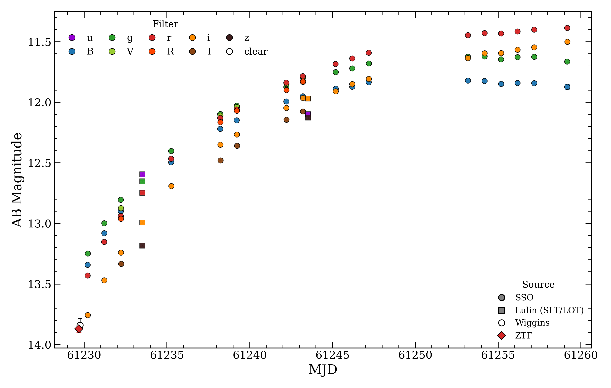
图注：Photometry of SN~2026sqf. The SN was followed up to August 6, near maximum light, shortly before entering solar conjunction.
对应解读：对应“建议重点查看的图表”第2项多波段光变曲线，以及模型拟合段落中关于峰值、衰减率和颜色演化的讨论。
入选理由：该图给出SN 2026sqf截至近极大光度前的整体测光跟踪，虽然不如Fig06直接提供Ia-CSM模板比较，但能补充展示多波段观测覆盖、峰值前演化和太阳合日前数据限制。
来源与置信度：\(arxiv_source\)；high；\(arxiv_source\) / \(main_CORR.tex\):figure[5]
强相关工作
这篇工作最直接的同类背景是 Ia-CSM 事件研究，尤其是 SN 2002ic、PTF11kx 和 SN 2012ca 等。SN 2002ic 是早期把 Ia 型光谱特征和强氢相互作用联系起来的代表事件；PTF11kx 强调了热核爆炸与复杂星周壳层的联系；SN 2012ca 则体现了 Ia-CSM 与核心坍缩 IIn 分类边界的长期争议。检索关键词可用 “SN 2002ic Ia-CSM”, “PTF11kx circumstellar material Type Ia”, “SN 2012ca Ia-CSM core collapse debate”, “Type Ia-CSM progenitor AGB common envelope”。
理论上，本文连接到单简并白矮星前身、AGB 供质、共生星、新星壳层和共同包层抛射等文献。相反观点主要来自两方面：一是某些 Ia-CSM 候选可能其实是核心坍缩 IIn；二是普通 Ia 型超新星中缺少氢、射电和 X 射线非探测常限制了强单简并风环境的普遍性。因而 SN 2026sqf 的意义不是证明所有 Ia 型都来自 AGB 供体，而是为一个稀有但物理上重要的通道提供近邻、可复查、可能有前身图像的样本。
由于 SN 2026sqf 是一个命名新事件，应明确区分同一事件论文和同类论文。目前给定信息中只有本文的 arXiv 页面可作为同一事件来源；其他链接是同类、原型、综述或理论背景，而非同一事件确认。后续应检索 “SN 2026sqf JWST”, “ATel SN 2026sqf”, “TNS 2026sqf”, “NGC 3310 supernova 2026sqf” 来追踪分类通报、晚期光谱和 JWST 复访。
同一事件 / 同类源线索：
相似工作：
- https://arxiv.org/abs/astro-ph/0309122
- https://arxiv.org/abs/1207.1306
- https://arxiv.org/abs/1304.0763
基础理论 / 方法工作：
相反观点 / 张力线索：
说明
评分由 LLM 给出初评，再由本地阈值策略过滤；IACT、TeV 伽马射线和高能中微子天文学按重点方向处理。